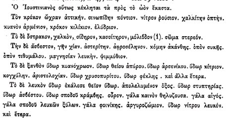

<!DOCTYPE html PUBLIC "-//w3c//dtd html 4.0 transitional//en">
<html>
<head><meta charset="utf-8">
  
  <meta content="Herv&eacute; Delboy" name="Author">
  <meta content="Mozilla/4.7 [fr] (Win95; I) [Netscape]"
 name="GENERATOR">
  <title>Introduction &agrave; la chimie des Anciens - VI - Marcelin
Berthelot</title>

<link rel="stylesheet" href="../style.css"></head>
<body background="back9.gif"><div class="replica-note">Réplique de la page archivée · <a href="../articles/chimie-anciens-6.html">version lisible</a> · <a href="../plan.html">plan</a></div>
<blockquote>
  <blockquote>
    <center><font color="#000066"><font size="+2">INTRODUCTION A
L'&Eacute;TUDE
DE LA CHIMIE DES ANCIENS ET DU MOYEN AGE</font></font>
    <p><font face="Calisto MT"><font color="#000066">Marcellin Berthelot</font></font></p>
    </center>
    <p><font color="#000066"><font size="-1">S&Eacute;NATEUR, MEMBRE DE
L'INSTITUT,
PROFESSEUR AU COLLEGE DE FRANCE AVEC PLANCHES, FIGURES EN PHOTOGRAVURE
D'APR&Egrave;S LES MANUSCRITS,&nbsp; TABLES ET INDEX PARIS&nbsp;
GEORGES STEINHEIL,
&Eacute;DITEUR 2, RUE CASIMIR-DELAVIGNE, S&nbsp; l889</font></font>
    </p>
    <center>
    <p><font color="#000066"><font size="+1">partie <a
 href="../original/chimie-anciens.html">I</a>
- <a href="../original/chimie-anciens-2.html">II</a> - <a
 href="../original/chimie-anciens-3.html">III</a>
- <a href="../original/chimie-anciens-4.html">IV</a> - <a
 href="../original/chimie-anciens-5.html">V</a>
- VI - <a href="../original/chimie-anciens-7.html">VII</a> -</font></font>
    </p>
    <p><a href="../original/chimie-anciens-5.html"></a><a href="../original/plan-alchimie.html"></a></p>
    </center>
    <p>
    <br>
    <font size="-1">revu le 29 novembre 2004</font>
    </p>
    <center>
    <hr width="100%"></center>
    <b>Plan</b> : VI - <a
 href="#RENSEIGNEMENTS_ET_NOTICES_SUR_QUELQUES">Renseignements
et notices sur quelques manuscrits alchimiques</a> [1. <a
 href="#Ancienne_liste_du_manuscrit_de">ancienne
liste du manuscrit de saint Marc</a> - 2. <a
 href="#Sur_les_copies_actuelles">copies
de la 9e le&ccedil;on de Stephanus</a> - 3. <a
 href="#Diverses_lacunes_et_transpositions">lacunes
et transpositions du mss de saint Marc</a> - 4. <a
 href="#Manuscrits_de_lEscurial">Manuscrits
de l'Escurial</a> - 5. <a href="#Manuscrits_alchimiques_grecs">Mss
grecs du Vatican</a> - 6. <a href="#Manuscrits_de_Gotha">Mss
de Gotha ou d'Altenbourg</a> - 7. <a href="#Comparaison_du_contenu">Comparaison
des mss de saint Marc avec ceux des n&deg; 2325 et 2327 de la bnf</a> -
8. <a href="#origine_et_la_filiation">Hypoth&egrave;ses
g&eacute;n&eacute;rales sur l'origine et la filiation des mss grecs</a>
- 9. <a href="#Sur_le_manuscrit_grec_2419">Mss 2419 de la bnf</a>
- 10. <a href="#Manuscrits_alchimiques_de_Leide">Mss alchimiques
de Leide</a> - 11. <a href="#Manuscrits_divers">Mss divers</a> -
12. <a href="#Manuscrit_arabe">Mss arabe d'Ostan&egrave;s</a>]
- <a href="#Notes">Notes</a> -
    <hr width="100%"><br>
    <b><font face="Calisto MT"><font color="#000066"><font size="-1">VI.
  <a  name="RENSEIGNEMENTS_ET_NOTICES_SUR_QUELQUES"></a>RENSEIGNEMENTS&nbsp;
ET NOTICES SUR QUELQUES MANUSCRITS ALCHIMIQUES</font></font></font></b>
    <p><font face="Calisto MT"><font color="#000066">Il existe dans les
catalogues
imprim&eacute;s des biblioth&egrave;ques publiques d'Europe des notices
sur le contenu des manuscrits alchimiques de ces biblioth&egrave;ques.
M. H. Kopp a r&eacute;uni et rapproch&eacute; ces notices dans ses <i>Beitr&auml;ge
zur Geschichte der Chemie</i> (1869), p. 256 &agrave; 315 ; mais sans
prendre
une connaissance directe des textes eux-m&ecirc;mes. J'ai donn&eacute;
moi-m&ecirc;me dans mes <i><a href="../original/origine-alchimie.html">Origines de
l'Alchimie</a></i>,
p. 335 &agrave; 385, une analyse plus d&eacute;taill&eacute;e du
manuscrit
2327 de la biblioth&egrave;que de Paris et du vieux manuscrit de la
biblioth&egrave;que
de Saint-Marc, &agrave; Venise. Je les avais compar&eacute;s entre eux,
et avec les manuscrits 2325, 2275 et 2249,</font></font>
    <br>
    <font face="Calisto MT"><font color="#000066">que J'ai eus aussi
entre
les mains, ainsi qu'avec les manuscrits de la Laurentienne &agrave;
Florence
et quelques autres ; ces derniers, d'apr&egrave;s les catalogues
imprim&eacute;s.
La publication pr&eacute;sente rendra inutile ces analyses pour les
cinq
premiers manuscrits ; mais J'ai cru utile de pr&eacute;ciser davantage
la connaissance de certains autres, tels que les manuscrits du Vatican,
que J'ai fait examiner sur place par mon fils, M. Andr&eacute;
Berthelot;
les deux manuscrits de Leide, celui de Gotha et divers manuscrits des
Biblioth&egrave;ques
d'Allemagne, examin&eacute;s &eacute;galement par mon fils; ceux de
l'Escurial,
que M. de Loynes, secr&eacute;taire d'Ambassade &agrave; Madrid, a bien
voulu collationner pour certains</font></font>
    <br>
    <font face="Calisto MT"><font color="#000066">passages importants ;
le manuscrit 2419 de la Biblioth&egrave;que nationale de Paris, que
j'a&icirc;
&eacute;tudi&eacute; moi-m&ecirc;me; enfin un manuscrit arabe
d'Ostan&egrave;s,
appartenant &agrave; la m&ecirc;me Biblioth&egrave;que et dont J'ai
fait
traduire quelques pages.   Ce sont ces renseignements que Je vais
communiquer.
Je les ferai pr&eacute;c&eacute;der par quelques donn&eacute;es
pr&eacute;cises,
tir&eacute;es des manuscrits eux-m&ecirc;mes et sp&eacute;cialement du
manuscrit de Saint-Marc, lesquelles fournissent des indications
nouvelles
sur le mode suivi dans leur composition, sur l'ordre relatif et la
filiation
de leurs copies, et sur les accidents survenus pendant leurs
transcriptions
successives. Le tout forme une douzaine de petites notices sur les manu-</font></font>
    <br>
    <font face="Calisto MT"><font color="#000066">scrits alchimiques.</font></font>
    </p>
    <p><b><font face="Calisto MT"><font color="#000066"><font size="-1">I.
  <a  name="Ancienne_liste_du_manuscrit_de"></a>Ancienne liste du
manuscrit de Saint-Marc.</font></font></font></b>
    </p>
    <p><font face="Calisto MT"><font color="#000066">En t&ecirc;te du
manuscrit
de Saint-Marc se trouve une liste de trait&eacute;s alchimiques, qui ne
co&iuml;ncide avec le contenu m&ecirc;me du manuscrit, ni par les
titres
des trait&eacute;s, ni parleur disposition; quoique la majeure partie
des
trait&eacute;s s'y retrouve. L'examen et la discussion de cette liste
sont
essentiels pour &eacute;tablir la filiation des manuscrits actuels.
Donnons
d'abord la liste elle-m&ecirc;me. Elle a &eacute;t&eacute;
imprim&eacute;e
en 1745 par Bernard dans son &eacute;dition du Trait&eacute; de
Palladius
    <i>de
Febribus</i>, p. 114 &agrave; 116. Il suffira d'en fournir ici la
traduction
:</font></font>
    </p>
    <p><a  name="(1)"></a><font face="Calisto MT"><font color="#000066">(1)
Voici la table du livre des sages, avec l'aide de Dieu.</font></font>
    <br>
    <font face="Calisto MT"><font color="#000066">(2) St&eacute;phanus
d'Alexandrie, philosophe Scum&eacute;nique et ma&icirc;tre, sur l'art
sacr&eacute;
de la fabrication de l'or (I&egrave;re le&ccedil;on).</font></font>
    <br>
    <font face="Calisto MT"><font color="#000066">(3) 2&deg;
le&ccedil;on,
du m&ecirc;me.</font></font>
    <br>
    <font face="Calisto MT"><font color="#000066">(4) Lettre du
m&ecirc;me
&agrave; Th&eacute;odore.</font></font>
    <br>
    <font face="Calisto MT"><font color="#000066">(5) Sur le monde
mat&eacute;riel,
3e le&ccedil;on.</font></font>
    <br>
    <font color="#000066"><font face="Calisto MT">(6) Sur ce qui
concerne
l'acte (</font><font face="Symbol"><font size="+1">energeia</font></font><font
 face="Calisto MT">),
4e le&ccedil;on.</font></font>
    <br>
    <font face="Calisto MT"><font color="#000066">(7) 5&deg;
le&ccedil;on,
(8) 6e le&ccedil;on, (9) 7&deg; le&ccedil;on.</font></font>
    <br>
    <font face="Calisto MT"><font color="#000066">(10) Sur la division
de l'art sacr&eacute;, 89 le&ccedil;on.</font></font>
    <br>
    <a  name="(11)"></a><font face="Calisto MT"><font color="#000066">(11)
Enseignement du m&ecirc;me &agrave; l'Empereur H&eacute;raclius, 9&deg;
le&ccedil;on.</font></font>
    <br>
    <a  name="(12)"></a><font face="Calisto MT"><font color="#000066">(12)
H&eacute;raclius Empereur, sur la chimie, &agrave; Modestus;
pr&eacute;fet
de la ville sainte (Constantinople).</font></font>
    <br>
    <a  name="(13)"></a><font face="Calisto MT"><font color="#000066">(13)
Du m&ecirc;me H&eacute;raclius, onze chapitres sur la fabrication de
l'or.</font></font>
    <br>
    <a  name="(14)"></a><font face="Calisto MT"><font color="#000066">(14)
Colloque du m&ecirc;me H&eacute;raclius sur la question des
philosophes,
relative &agrave; cet art sacr&eacute;.</font></font>
    <br>
    <a  name="(15)"></a><font face="Calisto MT"><font color="#000066">(15)
Lettre de l'Empereur Justinien.</font></font>
    <br>
    <a  name="(16)"></a><font face="Calisto MT"><font color="#000066">(16)
Du m&ecirc;me Justinien, cinq chapitres sur l'art sacr&eacute; et
entretien
avec les philosophes.</font></font>
    <br>
    <a  name="(17)"></a><font face="Calisto MT"><font color="#000066">(17)
Entretien de Com&eacute;rius le philosophe avec Cl&eacute;op&acirc;tre.</font></font>
    <br>
    <a  name="(18)"></a><font face="Calisto MT"><font color="#000066">(18)
Dialogue des philosophes et de Cl&eacute;op&acirc;tre.</font></font>
    <br>
    <a  name="(19)"></a><font face="Calisto MT"><font color="#000066">(19)
H&eacute;liodore le philosophe &agrave; l'Empereur Th&eacute;odose, sur
l'art divin: vers iambiques.</font></font>
    <br>
    <font face="Calisto MT"><font color="#000066">(20)
Th&eacute;ophraste
le philosophe, sur cet art : vers iambiques.</font></font>
    <br>
    <font face="Calisto MT"><font color="#000066">(21)
H&icirc;&eacute;roth&eacute;e
le philosophe, sur cet art divin : vers.</font></font>
    <br>
    <font face="Calisto MT"><font color="#000066">(22) Archela&uuml;s
le
philosophe, sur cet art divin et sacr&eacute; : vers.</font></font>
    <br>
    <a  name="(23)"></a><font face="Calisto MT"><font color="#000066">(23)
P&eacute;lage le philosophe ; <i>Chrysop&eacute;e</i>.</font></font>
    <br>
    <font face="Calisto MT"><font color="#000066">(24) Ostan&egrave;s
le
philosophe &agrave; P&eacute;tasius sur l'art sacr&eacute;.</font></font>
    <br>
    <font face="Calisto MT"><font color="#000066">(25) D&eacute;mocrite
sur la pourpre et la fabrication de l'or, <i>Physica et mystica</i>.</font></font>
    <br>
    <font face="Calisto MT"><font color="#000066">(26) Du m&ecirc;me,
sur
la fabrication de l'as&egrave;m.</font></font>
    <br>
    <font face="Calisto MT"><font color="#000066">(27) Syn&eacute;sius
le philosophe &agrave; Dioscorus (commentaire sur le livre de
D&eacute;mocrite)
: dialogue relatif au livre du divin D&eacute;mocrite.</font></font>
    <br>
    <font face="Calisto MT"><font color="#000066">(28) Le philosophe
Anonyme,
sur l'eau divine du blanchiment.</font></font>
    <br>
    <font face="Calisto MT"><font color="#000066">(29) Du m&ecirc;me,
sur
la Chrysop&eacute;e, exposant l'encha&icirc;nement de la
Chrysop&eacute;e,
conform&eacute;ment &agrave; la pratique, avec le secours de Dieu.</font></font>
    <br>
    <font face="Calisto MT"><font color="#000066">(30) Zosime le divin,
de Panopolis, sur la vertu.</font></font>
    <br>
    <font face="Calisto MT"><font color="#000066">(31) Chapitre
d'Agathod&eacute;mon
(principalement sur la fabrication du tout).</font></font>
    <br>
    <a  name="(32)"></a><font face="Calisto MT"><font color="#000066">(32)
Chapitres d'Herm&egrave;s, Zosime, Nilus, Africanus.</font></font>
    <br>
    <a  name="(33)"></a><font face="Calisto MT"><font color="#000066">(33)
Du Chr&eacute;tien, sur l'eau divine.</font></font>
    <br>
    <a  name="(34)"></a><font face="Calisto MT"><font color="#000066">(34)
Zosime le philosophe &agrave; Eus&eacute;bie, sur l'art sacr&eacute; et
divin, 34 chapitres.</font></font>
    <br>
    <a  name="(35)"></a><font face="Calisto MT"><font color="#000066">(35)
Olympiodore le philosophe, sur la Chrysop&eacute;e.</font></font>
    <br>
    <a  name="(36)"></a><font face="Calisto MT"><font color="#000066">(36)
Pappus le philosophe, sur l'art divin.</font></font>
    <br>
    <a  name="(37)"></a><font face="Calisto MT"><font color="#000066">(37)
Mo&iuml;se, sur la diplosis de l'or.</font></font>
    <br>
    <a  name="(38)"></a><font face="Calisto MT"><font color="#000066">(38)
Chapitres d'Eug&eacute;nius et de Hi&eacute;roth&eacute;e.</font></font>
    <br>
    <a  name="(39)"></a><font face="Calisto MT"><font color="#000066">(39)
Zosime, sur les instruments et fourneaux.</font></font>
    <br>
    <a  name="(40)"></a><font face="Calisto MT"><font color="#000066">(40)
Du m&ecirc;me, sur l'eau divine.</font></font>
    <br>
    <a  name="(41)"></a><font face="Calisto MT"><font color="#000066">(41)
Du m&ecirc;me, sur les instruments et fourneaux. M&eacute;moires
authentiques.</font></font>
    <br>
    <a  name="(42)"></a><font face="Calisto MT"><font color="#000066">(42)
Trempe ou changement du pyrochalque, en vue de l'astrochalque.</font></font>
    <br>
    <a  name="(43)"></a><font face="Calisto MT"><font color="#000066">(43)
Trempe et fabrication du fer indien.</font></font>
    <br>
    <a  name="(44)"></a><font face="Calisto MT"><font color="#000066">(44)
Trempe pour les &eacute;p&eacute;es et instruments pour tailler la
pierre.</font></font>
    <br>
    <a  name="(45)"></a><font face="Calisto MT"><font color="#000066">(45)
Fabrication de l'as&egrave;m, du mercure et du cinabre.</font></font>
    <br>
    <a  name="(46)"></a><font face="Calisto MT"><font color="#000066">(46)
Extrait de l'ouvrage de Cl&eacute;op&acirc;tre sur les poids et mesures.</font></font>
    <br>
    <a  name="(47)"></a><font color="#000066"><font face="Calisto MT">(47)
Du Chr&eacute;tien, sur la bonne constitution (</font><font
 face="Symbol"><font size="+1">eustaqeia</font></font><font
 face="Calisto MT">)
de l'or.</font></font>
    <br>
    <a  name="(48)"></a><font face="Calisto MT"><font color="#000066">(48)
Du m&ecirc;me, sur la Chrysop&eacute;e, 30 chapitres.</font></font>
    <br>
    <a  name="(49)"></a><font color="#000066"><font face="Calisto MT">(49)
    </font><font face="Symbol"><font size="+1">Peri
jurmwn kai tolwn</font></font><font face="Calisto MT">.</font></font>
    <br>
    <a  name="(50)"></a><font face="Calisto MT"><font color="#000066">(50)
Sur la diversit&eacute; du plomb et sur les feuilles d'or.</font></font>
    <br>
    <a  name="(51)"></a><font face="Calisto MT"><font color="#000066">(51)
Lexique de la Chrysop&eacute;e, par ordre alphab&eacute;tique.</font></font>
    <br>
    <a  name="(52)"></a><font face="Calisto MT"><font color="#000066">(52)
Autres chapitres de divers op&eacute;rateurs sur la Chrysop&eacute;e.</font></font>
    </p>
    <p><font face="Calisto MT"><font color="#000066">Cette liste
repr&eacute;sente
une r&eacute;daction plus ancienne que le manuscrit de Saint-Marc
qu'elle
pr&eacute;c&egrave;de, du moins tel que nous le poss&eacute;dons. Elle
en diff&egrave;re par la composition et par l'ordre relatif. Au point
de
vue de la composition, les dix premiers num&eacute;ros sont com-</font></font>
    <br>
    <font face="Calisto MT"><font color="#000066">muns &agrave; la
liste
etau manuscrit : mais les quatre trait&eacute;s (<a href="#%2811%29">11</a>),
(<a href="#%2812%29">12</a>), (<a href="#%2813%29">13</a>), (<a
 href="#%2814%29">14</a>),
attribu&eacute;s &agrave; H&eacute;raclius, et les deux trait&eacute;s
(<a href="#%2815%29">15</a>), (<a href="#%2816%29">16</a>),
attribu&eacute;s &agrave;
Justinien, ont disparu. Rappelons ici que l'Empereur H&eacute;raclius
&eacute;tait
un grand fauteur d'astrologie et de sciences occultes. Son nom se
retrouve
dans les ouvrages arabes et dans la <i><a href="../original/tourbe.html">Turba
philosophorum</a></i>
(sous la forme erron&eacute;e de Hercules). St&eacute;phanus,son
contemporain,
lui a d&eacute;di&eacute; l'une de ses le&ccedil;ons authentiques. Les
trait&eacute;s attribu&eacute;s &agrave; l'Empereur Justinien sont
&eacute;videmment
pseudonymes et, &agrave; ce qu'il semble d'apr&egrave;s quelques
fragments,
d'une date peu recul&eacute;e: peut-&ecirc;tre s'agit-il de Justinien
II,
l'un des successeurs d'H&eacute;raclius, &agrave; la fin du VII<sup>e</sup>
si&egrave;cle. Il existe encore une mention qui se rattache &agrave;
ces
trait&eacute;s (pratique de Justinien) dans l'article d'une
&eacute;criture
plus moderne, ajout&eacute; sur une page de garde du manuscrit de
Saint-Marc
(<i><a href="../original/origine-alchimie.html">Origines de l'Alchimie</a></i>, p.
348.
  Texte grec, II, IV bis, Appendice I). Une page du m&ecirc;me auteur
nous
a &eacute;t&eacute; conserv&eacute;e &agrave; la fin de l'un des <a
 href="#Manuscrits_alchimiques_de_Leide">manuscrits
alchimiques de Leide</a> (Voss. n&deg; 47, fol. 70 verso). Je la
donnerai
plus loin. Ces six trait&eacute;s perdus avaient &eacute;t&eacute;
probablement
rattach&eacute;s &agrave; ceux de St&eacute;phanus. Je montrerai tout
&agrave;
l'heure la trace laiss&eacute;e par cette perte. Quant aux
trait&eacute;s
de Com&eacute;rius, ou Comarius, et de Cl&eacute;op&acirc;tre (<a
 href="#%2817%29">17</a>)
et (<a href="#%2818%29">18</a>), il en subsiste un d&eacute;bris dans
le manuscrit
de Saint-Marc et des portions</font></font>
    <br>
    <font face="Calisto MT"><font color="#000066">beaucoup plus
&eacute;tendues,
sinon la totalit&eacute;, dans le manuscrit 2327. Les num&eacute;ros (<a
 href="#%2819%29">19</a>)
&agrave; (<a href="#%2852%29">52</a>) de la vieille liste existent
encore aujourd'hui,
en substance du moins, dans le manuscrit de Saint-Marc ; quoique
certains,
par exemple le num&eacute;ro (<a href="#%2832%29">32</a>), chapitres
d'Herm&egrave;s<a  name="1_t"></a><sup><a href="#%281%29">1</a></sup>,
Zosime, Nilus, Africanus, et le num&eacute;ro (<a href="#%2838%29">38</a>),
chapitres d'Eug&eacute;nius et de Hi&eacute;roth&eacute;e, aient
peut-&ecirc;tre
subi des mutilations, qu'il n'est pas possible de pr&eacute;ciser.</font></font>
    <br>
    <font face="Calisto MT"><font color="#000066">Le num&eacute;ro (<a
 href="#%2842%29">42</a>),
trempe du pyrochalque, n'existe plus sous ce titre ; mais il est
probable
qu'une partie en a &eacute;t&eacute; conserv&eacute;e dans un article
relatif
&agrave; la trempe du bronze (fol. 118).</font></font>
    <br>
    <font face="Calisto MT"><font color="#000066">Le trait&eacute; de
Zosime,
indiqu&eacute; sous le num&eacute;ro (<a href="#%2834%29">34</a>),
comme adress&eacute;
&agrave; Eus&eacute;bie (au lieu de Th&eacute;os&eacute;bie), se
retrouve
aussi (fol. 141 &agrave; 161), &agrave; l'exception du titre et des
premi&egrave;res
lignes, qui ont disparu : sans doute par suite de la perte d'un
feuillet.
Signalons par contre des trait&eacute;s contenus dans le manuscrit de
Saint-Marc,
dont la liste ancienne ne fait pas mention : tels que les
trait&eacute;s
sur la fabrication des verres (fol. 115 verso); sur les vapeurs (fol.
116
verso); sur la bi&egrave;re et l'huile aromatique (fol. 162); les
chapitres
de Zosime &agrave; Th&eacute;odore (fol. 179, &agrave; 181); deux
articles
tir&eacute;s d'Agatharchide (fol. 138 &agrave; 140), etc. Citons aussi
le Labyrinthe de Salomon (fol. 102), figure tr&egrave;s
caract&eacute;ristique,
mais ajout&eacute;e &agrave; une &eacute;poque post&eacute;rieure et
vers
le XIV<sup>e</sup> ou XV<sup>e</sup> si&egrave;cle. La liste initiale
et
le contenu actuel du manuscrit de Saint-Marc ne se superposent donc pas
exactement, quoique la plupart des trait&eacute;s soient communs. Il y
a aussi des modifications dans l'ordre relatif, modifications dont je
vais
signaler les principales, en r&eacute;partissant par groupes les
num&eacute;ros
de la liste.</font></font>
    </p>
    <p><font face="Calisto MT"><font color="#000066">-<a
  name="Ier groupe"></a><b>I<sup>er</sup>
Groupe.</b>   Les num&eacute;ros (<a href="#%281%29">1</a>) &agrave; (<a
 href="#%2811%29">11</a>)
sont communs et dispos&eacute;s dans le m&ecirc;me ordre (fol. 8
&agrave;
43 du manuscrit actuel) ; puis vient une lacune, num&eacute;ros (<a
 href="#%2812%29">12</a>)
&agrave; (<a href="#%2818%29">18</a>), comme si un ou plusieurs cahiers
du
manuscrit ant&eacute;rieur, qui a servi de type &agrave; la vieille
liste,
avaient disparu. Les po&egrave;tes, num&eacute;ros (19) &agrave; (22),
et les trait&eacute;s de Pelage, d'Ostan&egrave;s, de D&eacute;mocrite,
de Syn&eacute;sius, ceux de l'Anonyme, de Zos&icirc;me,
d'Agathod&eacute;mon,
d'Herm&egrave;s, du Chr&eacute;tien, num&eacute;ros (<a href="#%2823%29">23</a>)
&agrave; (<a href="#%2833%29">33</a>)<a  name="2_t"></a><sup><a href="#2_">2</a></sup>,
etc., suivent dans le m&ecirc;me ordre (fol. 43 &agrave; 101). Quant au
trait&eacute; (<a href="#%2834%29">34</a>), il est probable qu'il est
repr&eacute;sent&eacute;,
au moins en substance, ou plut&ocirc;t &agrave; l'&eacute;tat
fragmentaire,
dans les folios 119 &agrave; 128 et dans les folios 141 &agrave; 159.
Jusqu'ici
le m&ecirc;me ordre se maintient donc dans la vieille liste et dans le
manuscrit actuel.</font></font>
    <br>
    <font face="Calisto MT"><font color="#000066">-<a  name="2e groupe"></a><b>2e
Groupe.</b>   Mais le trait&eacute; (<a href="#%2835%29">35</a>)
d'Olympiodore
se retrouve seulement aux folios 163-179, 35 feuillets plus loin. Le
num&eacute;ro
(<a href="#%2836%29">36</a>), serment de Pappus, les num&eacute;ros (<a
 href="#%2837%29">37</a>),
(<a href="#%2838%29">38</a>), diplosis de Mo&iuml;se et chapitres
d'Eug&eacute;nius,
enfin les num&eacute;ros (<a href="#%2839%29">39</a>), (<a
 href="#%2840%29">40</a>),
(<a href="#%2841%29">41</a>), trait&eacute; de Zosime sur les
fourneaux, etc.,
forment presque &agrave; la suite les folios 184 &agrave; 195.
Cependant
il y a intercalat&icirc;on des chapitres de Zosime &agrave;
Th&eacute;odore
(fol. 179 &agrave; 181) et du trait&eacute; de l'Anonyme sur l'Suf
(fol.
181).</font></font>
    <br>
    <font face="Calisto MT"><font color="#000066">-&nbsp;<a
  name="3e groupe"></a><b>3e
Groupe.</b>   Un autre groupe de trait&eacute;s, cons&eacute;cutifs aux
pr&eacute;c&eacute;dents dans la vieille liste, en sont au contraire
s&eacute;par&eacute;s
dans le manuscrit actuel. Ils occupent les folios 104-118,
transpos&eacute;s
par le relieur (<i><a href="../original/origine-alchimie.html">Origines de l'Alchimie</a></i>,
p. 350-351), et renfermant les articles (<a href="#%2844%29">44</a>)
&agrave;
(<a href="#%2848%29">48</a>). Peut-&ecirc;tre aussi une partie se
retrouve-t-elle
dans les folios 141 &agrave; 159, d&eacute;j&agrave; attribu&eacute;s
pour
une fraction au num&eacute;ro (<a href="#%2834%29">34</a>).</font></font>
    <br>
    <font face="Calisto MT"><font color="#000066">-&nbsp;<a
  name="4e groupe"></a><b>4e
Groupe.</b>   Les num&eacute;ros (<a href="#%2842%29">42</a>) et (<a
 href="#%2843%29">43</a>)
de la vieille liste r&eacute;pondent &agrave; peu pr&eacute;s au folio
118.</font></font>
    <br>
    <font face="Calisto MT"><font color="#000066">-&nbsp;<a
  name="5e groupe"></a><b>5e
Groupe.</b>   Les num&eacute;ros (<a href="#%2849%29">49</a>), (<a
 href="#%2850%29">50</a>),
(<a href="#%2851%29">51</a>, lexique), r&eacute;pondent aux folios 129
&agrave;
138, plac&eacute;s &agrave; la suite.</font></font>
    </p>
    <p><font face="Calisto MT"><font color="#000066">En somme, la place
du
troisi&egrave;me groupe a &eacute;t&eacute; chang&eacute;e par le
relieur,
comme il est facile de l'&eacute;tablir par la lecture des textes, et
il
n'y a qu'un autre renversement important, celui des trait&eacute;s du
second
groupe, lesquels forment en quelque sorte un cahier &agrave; part,
d&eacute;j&agrave;
interverti avant la constitution de la copie actuelle.&nbsp;<a
  name="Si l'on cherchait &agrave;"></a>Si
l'on cherchait &agrave; d&eacute;composer ces trait&eacute;s en
s&eacute;ries
distinctes, d'apr&egrave;s leur contenu, on pourrait trouver ainsi les
s&eacute;ries suivantes :</font></font>
    </p>
    <p><font face="Calisto MT"><font color="#000066">-&nbsp;<a
  name="I&egrave;re serie"></a><b>I&egrave;re
S&eacute;rie.</b>   St&eacute;phanus, en connexion avec les
trait&eacute;s
perdus d'H&eacute;raclius et de Justinien, et probablement avec les
Dialogues
de Comarius et de Cl&eacute;op&acirc;tre : le tout a form&eacute;
peut-&ecirc;tre
&agrave; l'origine une collection partielle et ind&eacute;pendante.</font></font>
    <br>
    <font face="Calisto MT"><font color="#000066">-&nbsp;<a
  name="2e serie"></a><b>2e
S&eacute;rie</b>.   Les po&egrave;mes, collection &eacute;galement
distincte,
dont la place varie et qui manque m&ecirc;me dans certains manuscrits,
tel que le 2325.</font></font>
    <br>
    <font face="Calisto MT"><font color="#000066">-&nbsp;<a
  name="3e serie"></a><b>3e
S&eacute;rie</b>.   Les vieux auteurs Pelage, Ostan&egrave;s,
D&eacute;mocrite,
Syn&eacute;sius, l'Anonyme, Zosime, les extraits d'Agathod&eacute;mon,
de Mo&iuml;se, d'Eug&eacute;nius, etc.<a  name="3_t"></a><sup><a
 href="#3">3</a></sup>
Le tout formait sans doute une collection sp&eacute;ciale. A la
v&eacute;rit&eacute;,
les Suvres de Zosime sont coup&eacute;es en trois dans le manuscrit
actuel
de Saint-Marc; mais c'est l&agrave; &eacute;videmment le fait des
copistes
d'une certaine &eacute;poque.</font></font>
    <br>
    <font face="Calisto MT"><font color="#000066">-&nbsp;<a
  name="4&deg; serie"></a><b>4&deg;
S&eacute;rie</b>.   Olympiodore semble avoir &eacute;t&eacute; &agrave;
part ; il est cependant con-nexe avec les auteurs
pr&eacute;c&eacute;dents.
Mais la place de son trait&eacute; varie dans les divers manuscrits.</font></font>
    <br>
    <font face="Calisto MT"><font color="#000066">-&nbsp;<a
  name="5e serie"></a><b>5e
S&eacute;rie</b>.   Le Chr&eacute;tien &eacute;tait aussi &agrave;
part.
Il est coup&eacute; en deux (n&deg; 33,47) dans la vieille liste ; ce
qui
semble accuser quelque transposition, faite par le copiste d'un
manuscrit
ant&eacute;rieur.</font></font>
    <br>
    <font face="Calisto MT"><font color="#000066">-&nbsp;<a
  name="6e serie"></a><b>6e
S&eacute;rie.</b>   Une ou plusieurs autres collections renfermaient
des
trait&eacute;s techniques, lesquels nous sont venus en grande partie
par
d'autres manuscrits, par le 2327 principalement. Dans la vieille liste;
aussi bien que dans le manuscrit de Saint-Marc actuel, on rencontre
cependant
la trempe du bronze et du fer, et la fabrication de l'as&egrave;m, du
mercure,
ainsi que du cinabre. On y a joint dans le manuscrit actuel de
Saint-Marc
les fabrications du verre, de la bi&egrave;re et de l'huile aromatique,
non mentionn&eacute;es dans la vieille liste. L'extrait d'Agatharchide
est une annexe d'un autre genre, qui ne figurait</font></font>
    <br>
    <font face="Calisto MT"><font color="#000066">non plus pas dans la
vieille liste et qui a &eacute;t&eacute; abr&eacute;g&eacute;e dans le
2327.</font></font>
    <br>
    <font face="Calisto MT"><font color="#000066">-&nbsp;<a
  name="7e serie"></a><b>7e
S&eacute;rie,</b>   A la fin de l'un des manuscrits qui ont
pr&eacute;c&eacute;d&eacute;
celui de Saint-Marc, on avait sans doute transcrit l'ouvrage de
Cl&eacute;op&acirc;tre
sur les poids et mesures et le lexique. Ce lexique devait former la fin
du manuscrit originel, d'apr&egrave;s un usage assez fr&eacute;quent
chez
les anciens copistes. On est autoris&eacute; par l&agrave; &agrave;
penser
que ce qui suit dans la vieille liste repr&eacute;sente l'&eacute;tat
d'un
manuscrit d&eacute;j&agrave; modifi&eacute;, par des additions faites
&agrave;
un prototype plus antique encore.</font></font>
    </p>
    <p><b><font face="Calisto MT"><font color="#000066"><font size="-1">II
  <a  name="Sur_les_copies_actuelles"></a>Sur les copies actuelles de
la 9e Le&ccedil;on de Stephanus.</font></font></font></b>
    </p>
    <p><font face="Calisto MT"><font color="#000066">L'&eacute;tude
comparative
des divers manuscrits qui renferment les le&ccedil;ons de Stephanus
fournit
des renseignements tr&egrave;s pr&eacute;cis et sp&eacute;cifiques pour
&eacute;tablir la filiation de ces manuscrits. J'ai d&eacute;j&agrave;
signal&eacute; quelques-uns de ces renseignements; mais il me
para&icirc;t
utile d'y revenir et de les compl&eacute;ter. C'est dans la 9e
le&ccedil;on
de Stephanus que se trouvent les principales diff&eacute;rences.</font></font>
    </p>
    <p><font color="#000066"><font face="Calisto MT"><b>- 1&deg;</b>
Dans le
manuscrit 2325 de la Biblioth&egrave;que Nationale de Paris, cette
le&ccedil;on,
finit beaucoup plus t&ocirc;t que dans le manuscrit 2327 et dans le
manuscrit
de Saint-Marc. Elle s'arr&ecirc;te en effet (fol. 81 verso) par une
phrase
qui r&eacute;pond au folio 73 recto ligne 6, du manuscrit 2327, et
&agrave;
la page 247, 1. 23, du t. II d'Ideler : </font><font face="Symbol"><font
 size="+1">nohroV
kai jhsiV en toiV zwmoiV meta to ea katw kai genhsetai</font></font><font
 face="Calisto MT">.
Le dernier mot est ainsi r&eacute;p&eacute;t&eacute; pour la seconde
fois
dans le manuscrit 2325, et cela conform&eacute;ment &agrave; la ligne
21,
situ&eacute;e au-dessus dans Ideler, laquelle ligne contient
pr&eacute;cis&eacute;ment
les mots : </font><font face="Symbol"><font size="+1">ea katw kai
genhsetai</font></font><font face="Calisto MT">.
Tandis que dans Ideler (ligne 28) et dans le manuscrit de Saint-Marc,
on
lit apr&egrave;s la r&eacute;p&eacute;tition des mots : </font><font
 face="Symbol"><font size="+1">ea
katw kai</font></font><font face="Calisto MT">...le mot </font><font
 face="Symbol"><font size="+1">gelesan</font></font><font
 face="Calisto MT">,
au lieu de </font><font face="Symbol"><font size="+1">genhsetai</font></font><font
 face="Calisto MT">,
le texte poursuivant. Dans le manuscrit 2325 la 9&deg; le&ccedil;on
s'arr&ecirc;te
l&agrave;; puis vient un tiers de page blanche, suivi des
m&eacute;moires
authentiques de Zosime, avec les figures mystiques des cercles
concentriques;
sans qu'il soit aucunement question de Comarius, ni de
Cl&eacute;op&acirc;tre.</font></font>
    <br>
    <font color="#000066"><font face="Calisto MT">Telle est la&nbsp;<a
  name="finale lecon stephanus"></a>finale
la plus courte de la 9e Le&ccedil;on deSt&eacute;phanus. Cette finale,
suivie d'un signe qui caract&eacute;rise la fin du trait&eacute;, est
aussi
celle de la 9* le&ccedil;on dans le manuscrit 2275 de la
Biblioth&egrave;que
de Paris, lequel reproduit fid&egrave;lement les figures du manuscrit
2325
; voire m&ecirc;me (fol. 56) celles qui ont &eacute;t&eacute;
coup&eacute;es
en partie par le relieur de ce dernier manuscrit, au temps de Henri II:
aussi semble-t-il en &ecirc;tre une copie directe, faite avant cette
reliure.
La finale de la 9&deg; le&ccedil;on dans le manuscrit de Leide, Voss.
n&deg;
47, a lieu au m&ecirc;me endroit, mais avec une variante dans le
dernier
mot, qui est: gelesan, au lieu de </font><font face="Symbol"><font
 size="+1">genhsetai</font></font><font face="Calisto MT">.
On y lit en effet : fol. 11 : </font><font face="Symbol"><font
 size="+1">meta
to ea katw kai gelesan</font></font><font face="Calisto MT">. Le
dernier
mot</font></font>
    <br>
    <font color="#000066"><font face="Calisto MT">est celui du
manuscrit
de Saint-Marc et d'Ideler. Mais dans ces deux derniers, le texte
poursuit
par : </font><font face="Symbol"><font size="+1">kai alhqesan</font></font><font
 face="Calisto MT">,
etc. pendant plusieurs pages; tandis que la 9&deg; le&ccedil;on de
St&eacute;phanus
s'arr&ecirc;te l&agrave;, dans le manuscrit de Leide comme dans le
manuscrit
2325. Cependant un copiste, ou un lecteur, a pris soin d'ajouter en
grec
dans le manuscrit de Leide : &laquo; </font></font><font
 face="Calisto MT"><i><font color="#000099">la
fin manque</font></i><font color="#000066"> &raquo;. Il avait sans
doute
eu connaissance des autres manuscrits. En tous cas, cette remarque
prouve
que le manuscrit de Leide n'a pas &eacute;t&eacute; copi&eacute;
directement</font></font>
    <br>
    <font face="Calisto MT"><font color="#000066">sur le manuscrit de
Saint-Marc;
quoiqu'il appartienne &agrave; la m&ecirc;me famille. Telle est la
seconde
finale de la 9e le&ccedil;on de St&eacute;phanus.</font></font>
    <br>
    <a  name="2_"></a><font color="#000066"><font face="Calisto MT"><b>-
2&deg;</b> Le manuscrit 2327, au contraire (fol. 73 recto, ligne 6),
apr&egrave;s
le premier :
    </font><font face="Symbol"><font size="+1">ea katw kai genhsetai</font></font><font
 face="Calisto MT">,
poursuit de la fa&ccedil;on suivante : </font><font face="Symbol"><font
 size="+1">ara
ti genhsetai oukara ioV nohroV kai jhsin o megaV lumpiodwroV</font></font><font
 face="Calisto MT">
(sic) </font><font face="Symbol"><font size="+1">en toiV ugroiV
episteuqh
to musthrion thV crusopoiaV</font></font><font face="Calisto MT">, et
la
suite jusqu'au folio 73 verso, ligne 5. Le tout constitue une page
additionnelle;
apr&egrave;s laquelle le manuscrit 2327 continue comme dans le
manuscrit
de Saint-Marc et dans Ideler, o&ugrave; cette page manque. La jonction
du texte du manuscrit 2327 avec celui de Saint-Marc et d'Ideler se fait
par les mots : </font><font face="Symbol"><font size="+1">meta to ea
katw
kai genhsetai</font></font><font face="Calisto MT">
(r&eacute;p&eacute;t&eacute;s
pour la seconde fois), </font><font face="Symbol"><font size="+1">ekalesev
kai alhqeian eipwn</font></font><font face="Calisto MT"> (2327, fol. 73
verso).   Dans le manuscrit de Saint-Marc (et dans Ideler), on lit:</font><font
 face="Symbol"><font size="+1">
meta to ea katw kai gelesan kai alhqesan kai alhqeian eipov</font></font><font
 face="Calisto MT">.
C'est donc entre les deux r&eacute;p&eacute;titions des mots </font><font
 face="Symbol"><font size="+1">meta
to ea katw</font></font><font face="Calisto MT"> que se trouve le
passage
intercalaire du manuscrit 2327. Cette r&eacute;p&eacute;tition
m&ecirc;me,
comme il arrive souvent dans les copies mal collationn&eacute;es, a pu
&ecirc;tre l'origine de l'omission de ce passage par le copiste du
manuscrit
de Saint-Marc qui, sautant une page de son original, au moment
o&ugrave;
il commen&ccedil;ait un nouveau feuillet, aurait form&eacute; ainsi le
mot </font><font face="Symbol"><font size="+1">gelesan</font></font><font
 face="Calisto MT">,
en r&eacute;unissant la syllabe initiale </font><font face="Symbol"><font
 size="+1">ge</font></font><font face="Calisto MT">
de </font><font face="Symbol"><font size="+1">genhsetai</font></font><font
 face="Calisto MT">
avec les syllabes finales du mot (</font><font face="Symbol"><font
 size="+1">exa</font></font><font face="Calisto MT">)
    </font><font face="Symbol"><font size="+1">lesen</font></font><font
 face="Calisto MT">.
Cette hypoth&egrave;se ing&eacute;nieuse est de M. Em. Ruelle. Elle
s'accorderait
avec le texte du manuscrit de Saint-Marc, dont le folio 39 verso se
termine
en effet par </font><font face="Symbol"><font size="+1">ge</font></font><font
 face="Calisto MT">
; tandis que le folio 40 commence par </font><font face="Symbol"><font
 size="+1">lesan</font></font><font face="Calisto MT">
et continue comme il a &eacute;t&eacute; dit. Mais l'existence du mot </font><font
 face="Symbol"><font size="+1">gelesan</font></font><font
 face="Calisto MT">
comme finale</font></font>
    <br>
    <font face="Calisto MT"><font color="#000066">d&eacute;finitive
dans
le manuscrit de Leide semble moins favorable &agrave; cette
hypoth&egrave;se,
&agrave; moins de supposer quelque interm&eacute;diaire.</font></font>
    <br>
    <font face="Calisto MT"><font color="#000066"><b>- 3&deg;</b> C'est
alors que se trouve le passage relatif aux relations entre les
m&eacute;taux
et les plan&egrave;tes, passage plus complet et plus clair dans le
manuscrit
2327 que dans Ideler, et dans le manuscrit de Saint-Marc (fol. 40),
dont
le texte d'Ideler d&eacute;rive par voie indirecte; car il y est
mutil&eacute;
et incompr&eacute;hensible (Ideler, t. II, p. 347, lignes 31 &agrave;
36).
En effet, dans ces deux derniers textes, Saturne et le plomb sont seuls
oppos&eacute;s d'une fa&ccedil;on r&eacute;guli&egrave;re ; tandis que
le mercure figure vis-&agrave;-vis de Jupiter, par suite de quelque
confusion
; puis</font></font>
    <font face="Calisto MT"><font color="#000066">viennent le Soleil et
la Lune, sans m&eacute;taux correspondants. Au contraire, il existe un
parall&eacute;lisme r&eacute;gulier et complet entre les 7
plan&egrave;tes
et les 7 m&eacute;taux, dans le texte donn&eacute; par le manuscrit
2327
: ce texte est donc le seul logique et complet. Le manuscrit 2329 (fol.
158) reproduit le m&ecirc;me passage.</font></font>
    <br>
    <font color="#000066"><font face="Calisto MT"><b>- 4&deg;</b> Au
del&agrave;,
les textes de Saint-Marc, d'Ideler, du manuscrit 2327 et du manuscrit
2329
sont sensiblement conformes entre eux, jusqu'au folio 74 du 2327,
r&eacute;pondant
&agrave; la page 248 d'Ideler, ligne 13, et jusqu'&agrave; ces mots : </font><font
 face="Symbol"><font size="+1">kai
ekaston autwn en th gh kekruptai en th idia doxh</font></font><font
 face="Calisto MT">.
Apr&egrave;s ces mots, le manuscrit 2329 termine en cinq lignes : ...</font><font
 face="Symbol"><font size="+1">en
th idia doxh cairousi kai eutrepizontai, wV monou qeou tou en triadi
umnoumenou,
to dwron autoiV prostaxantoV einai</font></font><font face="Calisto MT">;
puis vient la finale banale</font></font>
    </p>
    <p><font face="Calisto MT"><font color="#000066">&laquo; </font><font
 color="#660000"><i>attendu
qu'il convient d'attribuer en tout gloire, honneur et
v&eacute;n&eacute;ration
au P&egrave;re, au Fils, au Saint-Esprit, maintenant et toujours, dans
les si&egrave;cles des si&egrave;cles. Amen</i> </font><font
 color="#000066">&raquo;.</font></font>
    </p>
    <p><font face="Calisto MT"><font color="#000066">C'est une
troisi&egrave;me
finale de la 9e le&ccedil;on.</font></font>
    <br>
    <font color="#000066"><font face="Calisto MT"><b>- 5&deg;</b> Au
contraire,
apr&egrave;s le mot </font><font face="Symbol"><font size="+1">doxh</font></font><font
 face="Calisto MT">,
le manuscrit 2327 poursuit pendant trois pages, lesquelles manquent
dans
le manuscrit de Saint-Marc, dans Ideler et dans le manuscrit 2329; il
poursuit,
dis-je, jusqu'&agrave; la fin de la 9e le&ccedil;on de
St&eacute;phanus,
fin explicitement signal&eacute;e. C'est la quatri&egrave;me finale,
qui
para&icirc;t la plus exacte.</font></font>
    <br>
    <font face="Calisto MT"><font color="#000066"><b>- 6&deg;</b> Puis
le manuscrit 2327 transcrit un trait&eacute; de Comarius, grand
pr&ecirc;tre,
ma&icirc;tre de Cl&eacute;op&acirc;tre, renfermant le dialogue des
Philosophes
et de Cl&eacute;op&acirc;tre (fol. 74 &agrave; 79 verso), et
pr&eacute;c&eacute;d&eacute;
de son titre. Le manuscrit 2252 contient aussi le trait&eacute; de
Comarius.
Ce trait&eacute; et ce dialogue r&eacute;pondent aux num&eacute;ros (<a
 href="#%2817%29">17</a>)
et (<a href="#%2818%29">18</a>) de la vieille liste de Saint-Marc.</font></font>
    <br>
    <font color="#000066"><font face="Calisto MT"><b>- 7&deg;</b> Mais
le manuscrit de Saint-Marc ne reproduit ni le titre ni les
d&eacute;buts
de ce trait&eacute;.&nbsp;<a  name="Au lieu de"></a>Au lieu de cela,
apr&egrave;s
les mots :</font><font face="Symbol"><font size="+1"> kai ekaston autwn
en
th gh kekrup tai en th idia doxh</font></font><font face="Calisto MT">,
ce manuscrit poursuit en plein texte, et sans apparence de lacune ou
d'alin&eacute;a
(fol. 40, 1. 4 en remontant), par les mots :</font><font face="Symbol"><font
 size="+1">
kai umeiV, w jiloi ot an thn tecnhn tauthn thn perikalh boulesqe </font></font><font
 face="Calisto MT">.
(Ideler, t. II, p. 248,1.13), et ainsi de suite pendant 7 pages
jusqu'&agrave;
la fin du trait&eacute; : ce qui constitue la cinqui&egrave;me finale
de
la 9e le&ccedil;on. Or ces pages, tir&eacute;es du trait&eacute; de
Comarius,
ne sont pas la vraie fin de la le&ccedil;on de St&eacute;phanus ;
laquelle
fin manque en r&eacute;alit&eacute; dans le manuscrit de Saint-Marc,
ainsi
.que dans Ideler, dont la</font></font>
    <font face="Calisto MT"><font color="#000066">publication a
&eacute;t&eacute;
faite d'apr&egrave;s une copie de Dietz, ex&eacute;cut&eacute;e,
para&icirc;t-il,
sur le manuscrit de Munich, qui est un d&eacute;riv&eacute; indirect de
celui de Saint-Marc. Elle manque aussi dans la traduction latine de
Pizimenti,
faite sur quelque manuscrit de la m&ecirc;me famille,
d&eacute;riv&eacute;
&eacute;galement de celui de Saint-Marc, mais non identique, puisque
cette
traduction contient la lettre de Psellus. Il y a l&agrave; dans la 9e
le&ccedil;on
de St&eacute;phanus une solution de continuit&eacute; brusque et dont
le
copiste de Saint-Marc ne s'est pas aper&ccedil;u.</font></font>
    <br>
    <font color="#000066"><font face="Calisto MT"><b>- 8&deg;</b> Les
mots
m&ecirc;mes : </font><font face="Symbol"><font size="+1">otan thn
tecnhn</font></font><font face="Calisto MT">...
se retrouvent dans le trait&eacute; de Comarius (2337, fol.75,1.2 en
remontant),
ainsi que les 7 pages cons&eacute;cutives du manuscrit de Saint-Marc et
d'Ideler. Elles sont conformes en g&eacute;n&eacute;ral &agrave; la fin
de ce trait&eacute; dans le manuscrit 2327 (jusqu'au fol. 79 verso). Le
trait&eacute; se termine pareillement dans les deux manuscrits par les
mots : </font><font face="Symbol"><font size="+1">entauqa gar thV
jilosojiaV
h tecnh peplhrwtai</font></font><font face="Calisto MT">. Ces derniers
mots manquent dans Ideler (ce qui fait une sixi&egrave;me finale) ;
mais
la phrase pr&eacute;c&eacute;dente est identique.</font></font>
    </p>
    <p><font color="#000066"><font face="Calisto MT">J'ai cru
n&eacute;cessaire
d'entrer dans ces d&eacute;tails minutieux, parce qu'ils
caract&eacute;risent
les familles de manuscrits et peuvent servir &agrave; reconna&icirc;tre
s&ucirc;rement ceux qui ont &eacute;t&eacute; copi&eacute;s les uns sur
les autres. Je montrerai ailleurs comment ils &eacute;tablissent que
&icirc;e
manuscrit de l'Escurial ne repr&eacute;sente pas une source propre,
mais
un d&eacute;riv&eacute;, vraisemblablement direct, de Saint-Marc. Il
est
probable que dans un manuscrit ant&eacute;rieur &agrave; celui de
Saint-Marc,
et dont celui-ci m&ecirc;me d&eacute;rive, le verso d'une des pages se
terminait par le mot </font><font face="Symbol"><font size="+1">doxh</font></font><font
 face="Calisto MT">.
Quelques folios d&eacute;chir&eacute;s ont fait dispara&icirc;tre la
fin
de St&eacute;phanus et le d&eacute;but de Comarius, et le copiste qui
travaillait
d'apr&egrave;s ce manuscrit a poursuivi en pleine page, au milieu d'une
ligne, sans voir la lacune. Le manuscrit 2327 d&eacute;rive d'un
manuscrit
ant&eacute;rieur &agrave; la destruction de ces feuillets et, par
cons&eacute;quent,
&agrave; celui de Saint-Marc, tel que nous le poss&eacute;dons
aujourd'hui.
Il renferme en outre une autre page de plus, ainsi qu'il a
&eacute;t&eacute;
d&icirc;t (<a href="#2_">2&deg;</a>); page r&eacute;pondant
peut-&ecirc;tre
&agrave; r&eacute;mission d'une page existant dans un manuscrit
ant&eacute;rieur
&agrave; celui de Saint-Marc. Mais cette explication ne suffit pas pour
rendre un compte complet de l'&eacute;tat pr&eacute;sent des textes ;
attendu
qu'il a disparu, en outre, les trait&eacute;s d'H&eacute;raclius et de
Justinien, signal&eacute;s par la vieille liste, et dont le manuscrit
2327,
pas plus que le manuscrit de Saint-Marc, n'offre aucune trace. Le
prototype
du manuscrit 2327 devait donc appartenir, soit &agrave; une souche
distincte
de celle qui r&eacute;pondrait &agrave; la vieille liste de Saint-Marc,
et ne contenant pas le cahier qui renfermait les trait&eacute;s
d'H&eacute;raclius
et de Justinien; soit &agrave; un d&eacute;riv&eacute;
interm&eacute;diaire,
tir&eacute; de la m&ecirc;me souche que cette vieille liste, quoique
d&eacute;j&agrave;
priv&eacute; de ce cahier, mais renfermant en plus, par rapport au
manuscrit
de Saint-Marc actuel, la fin de St&eacute;phanus et les trait&eacute;s
de Comarius et de Cl&eacute;op&acirc;tre. Ce n'est pas tout : la finale
du manuscrit 2325, le passage intercalaire signal&eacute; dans le
manuscrit
2327, la confusion dans le texte du manuscrit</font></font>
    <font face="Calisto MT"><font color="#000066">de Saint-Marc
concernant
les relations des m&eacute;taux et des plan&egrave;tes, texte
rest&eacute;
intact dans le manuscrit 2327, la finale du manuscrit de Saint-Marc,
ainsi
que la finale du manuscrit 2329 et celle du manuscrit de Leide, Voss.
n&deg;
47, semblent indiquer que les manuscrits de St&eacute;phanus ont
&eacute;prouv&eacute;
autrefois dans leurs derniers feuillets de grandes perturbations.</font></font>
    <font face="Calisto MT"><font color="#000066">Enfin, il a
subsist&eacute;,
en dehors de ces divers manuscrits, des fragments des trait&eacute;s de
Justinien, tel que celui contenu dans le manuscrit de Leide, Voss.
n&deg;
47, qui sera reproduit tout &agrave; l'heure; II ne me para&icirc;t pas
opportun de d&eacute;velopper en ce moment les hypoth&egrave;ses
subsidiaires
qui rendraient compte de tous ces d&eacute;tails.</font></font>
    </p>
    <p><b><font face="Calisto MT"><font color="#000066"><font size="-1">III.
  <a  name="Diverses_lacunes_et_transpositions"></a>Diverses lacunes et
transpositions du manuscrit de Saint-Marc.</font></font></font></b>
    </p>
    <p><font face="Calisto MT"><font color="#000066">Voici diverses
autres
comparaisons que j'ai eu occasion de faire et qui peuvent
&eacute;galement
&ecirc;tre utiles, pour rapprocher les textes et en &eacute;tablir la
filiation
:</font></font>
    </p>
    <p><font face="Calisto MT"><font color="#000066"><b>- 1&deg;</b> Je
rappellerai
qu'un ancien relieur du manuscrit de Saint-Marc a interpos&eacute;
apr&egrave;s
le folio 103 (trait&eacute; de Chr&eacute;tien sur l'eau divine) les
folios
104 &agrave; 118 ; le texte du folio 119 faisant en effet suite au
folio
103. Ceci peut servir &agrave; distinguer les copies faites sur ce
manuscrit,
apr&egrave;s la reliure en question.</font></font>
    <br>
    <font face="Calisto MT"><font color="#000066"><b>- 2&deg;</b> Dans
les folios 104 &agrave; 118 r&egrave;gne une grande confusion. Les
articles
(<a href="#%2842%29">42</a>), (<a href="#%2843%29">43</a>), (<a
 href="#%2844%29">44</a>)
de l'ancienne liste, sur la trempe du fer, sont coup&eacute;s en deux,
au d&eacute;but et &agrave; la fin du cahier, et les articles sur
l'as&egrave;m,
le mercure et le cinabre, qui les suivaient dans l'ancienne liste (<a
 href="#%2845%29">45</a>),
se trouvent interpos&eacute;s.</font></font>
    <br>
    <font face="Calisto MT"><font color="#000066"><b>- 3&deg;</b> Les
trait&eacute;s
de Cl&eacute;op&acirc;tre et du Chr&eacute;tien (<a href="#%2846%29">46</a>)
et (<a href="#%2847%29">47</a>) sont intervertis, et le dernier auteur
est
coup&eacute; en deux; enfin les trait&eacute;s sur la fabrication du
verre,
de la bi&egrave;re, etc., ont &eacute;t&eacute; ajout&eacute;s. Il
semble
que ces modifications r&eacute;sultent d'un certain trouble, survenu
&agrave;
un moment donn&eacute; dans les feuillets du manuscrit type, qui
r&eacute;pondait
&agrave; la vieille liste de Saint-Marc.</font></font>
    <br>
    <font face="Calisto MT"><font color="#000066"><b>- 4&deg;</b> Le
texte
d'Agatharchide est brusquement interrompu &agrave; la fin du folio 140,
comme si un ou plusieurs feuillets avaient disparu.   Cette lacune est
corr&eacute;lative de la suivante.</font></font>
    <br>
    <font face="Calisto MT"><font color="#000066"><b>- 5&deg;</b> Les
m&eacute;moires
de Zosime, annonc&eacute;s dans la vieille liste de Saint-Marc (n&deg;
    <a href="#%2834%29">34</a>),
ne figurent plus parmi les titres du manuscrit actuel. Cependant ils y
existent r&eacute;ellement. En effet, le titre et les premi&egrave;res
lignes seules, lesquels sont transcrits dans le manuscrit 2327 (fol.
112),
ont disparu dans celui de Saint-Marc. Mais le texte transcrit au folio
141 est rest&eacute;. Car le manuscrit de Saint-Marc d&eacute;bute
&agrave;
la 3&deg; ligne du folio 112 verso du manuscrit 2327 et poursuit de
m&ecirc;me
jusqu'au folio 159, r&eacute;pondant au folio 133 verso du manuscrit
2327.
  II manque donc &agrave; cette place, je le r&eacute;p&egrave;te, dans
le manuscrit de Saint-Marc un ou plusieurs folios entiers, disparus
avant
l'&eacute;poque o&ugrave; la pagination actuelle a &eacute;t&eacute;
num&eacute;rot&eacute;e.</font></font>
    <br>
    <font face="Calisto MT"><font color="#000066"><b>- 6&deg;</b> Les
articles
d'Agatharchide ne d&eacute;butent pas au commencement d'une page, mais
&agrave; la 4&deg; ligne du folio 138 recto. Or les trois
premi&egrave;res
lignes appartiennent &agrave; la suite d'un article &laquo;</font><i><font
 color="#000099">
sur le jaunissement</font></i><font color="#000066"> &raquo;
(Saint-Marc,
fol. 137 verso), article qui ne comprend que 14 lignes, dont 11 sur le
folio 137 verso ; les 3 derni&egrave;res forment le commencement du
folio
138 verso. Ce dernier article occupe deux feuillets de plus dans le
manuscrit
2327 (fol. 110 &agrave; 112) : il se trouve donc mutil&eacute; pat un
arr&ecirc;t
brusque dans le manuscrit de Saint-Marc, et sans que le copiste s'en
soit
aper&ccedil;u, puisque le copiste a entam&eacute; un autre article,
ayant
son titre sp&eacute;cial. Il semble que cette solution de
continuit&eacute;
r&eacute;pondait, dans un manuscrit ant&eacute;rieur &agrave; celui de
Saint-Marc, &agrave; une fin d&eacute; cahier ou de folio, dont la
suite
aurait disparu ; tandis que cette suite s'est conserv&eacute;e dans un
manuscrit prototype du manuscrit 2327.</font></font>
    <br>
    <font face="Calisto MT"><font color="#000066"><b>- 7&deg;</b> Les
articles
d'Agatharchide d'ailleurs semblent r&eacute;ellement une intercalation
faite dans le manuscrit primitif ; car l'article du jaunissement dans
le
manuscrit 2327 est suivi pr&eacute;cis&eacute;ment par les <i>M&eacute;moires
authentiques</i> de Zosime, comme dans le manuscrit de Saint-Marc ;
&agrave;
cela pr&egrave;s que le titre et les cinq premi&egrave;res lignes
manquent
dans le manuscrit de Saint-Marc.</font></font>
    <br>
    <font color="#000066"><font face="Calisto MT"><b>- 8&deg;</b> Au
folio
115 (recto) du manuscrit de Saint-Marc se trouve un titre : </font><font
 face="Symbol"><font size="+1">Peri
jwtwn</font></font><font face="Calisto MT"> (sur les feux), suivi d'une
seule ligne: </font><font face="Symbol"><font size="+1">Elajra
jwtapasan
thn tecnhn anajerei.</font></font><font face="Calisto MT"> &laquo; </font></font><font
 face="Calisto MT"><i><font color="#000099">Tout
l'art consiste dans un feu l&eacute;ger </font></i><font
 color="#000066">&raquo;.
C'est tout ce qui reste &agrave; cette place d'un trait&eacute; qui
existe
in extenso dans le manuscrit 2327, folio 264 recto : la ligne
pr&eacute;c&eacute;dente
s'y retrouve, dans les 9&deg; et 10&deg; lignes qui suivent le titre.
Il
y a encore l&agrave; l'indice d'un ancien r&eacute;sum&eacute;, ou
d'une
mutilation, faite sur un prototype qui s'est conserv&eacute; dans le
manuscrit
2327, et dont le manuscrit de Saint-Marc n'a gard&eacute; qu'une trace.</font></font>
    </p>
    <p><font face="Calisto MT"><font color="#000066">Toutes ces lacunes
et
ces d&eacute;fauts de soudure sont, je le r&eacute;p&egrave;te, utiles
pour constater l'histoire des manuscrits. Signalons encore quelques
additions
faites, &agrave; diverses &eacute;poques, sur des pages ou demi-pages
blanches
du manuscrit de Saint-Marc; additions dont la reproduction dans les
autres
manuscrits peut servir &agrave; attester qu'ils d&eacute;rivent,
directement
ou indirectement, de ce manuscrit type. Tels sont :</font></font>
    </p>
    <p><font face="Calisto MT"><font color="#000066"><b>- 9&deg;</b> Le
Labyrinthe
de Salomon, avec ses 24 vers (v. Texte grec, I, xx), ajout&eacute;,
vers
le XIV<sup>e</sup> ou XV<sup>e</sup> si&egrave;cle, sur une page
blanche,
dont le recto porte divers petits articles de l'ancienne
&eacute;criture:
le tout intercal&eacute; au milieu d'un trait&eacute; du
Chr&eacute;tien.
On ne comprend pas bien pourquoi ce verso avait &eacute;t&eacute;
laiss&eacute;
en blanc &agrave; l'origine.</font></font>
    <br>
    <font face="Calisto MT"><font color="#000066"><b>- 10&deg;</b>
L'article
sur la tutie, au folio 188 recto : &eacute;criture du XV<sup>e</sup> ou
XVI<sup>e</sup> si&egrave;cle.</font></font>
    <br>
    <font face="Calisto MT"><font color="#000066"><b>- 11&deg;</b> La
fabrication
de l'argent, texte ajout&eacute; au bas du folio 194 verso :
&eacute;criture
du XV<sup>e</sup> si&egrave;cle.</font></font>
    <br>
    <font face="Calisto MT"><font color="#000066"><b>- 12&deg;</b>
Diverses
additions initiales : trait&eacute; de Nic&eacute;phore sur les songes,
par ordre alphab&eacute;tique ; cercles astrologiques, etc., sur les
feuilles
de garde (Une partie de celles-ci sont palimpsestes, la vieille
&eacute;criture
ayant &eacute;t&eacute; gratt&eacute;e.) et les marges.</font></font>
    <br>
    <font face="Calisto MT"><font color="#000066"><b>- 13&deg;</b> Je
signalerai
encore les additions sur les scories et la formule de l'Ecrevisse, en
&eacute;criture
du XV<sup>e</sup> si&egrave;cle, sur la premi&egrave;re feuille de
garde
(v. <a href="../original/chimie-anciens-5.html#FIGURE%20XXVIII">p. 152</a>).</font></font>
    <br>
    <font color="#000066"><font face="Calisto MT"><b>- 14&deg;</b> Une
addition du XVe si&egrave;cle, ayant pour titre : </font><font
 face="Symbol"><font size="+1">Diagramma
thV megalhV</font></font></font>
    <br>
    <font color="#000066"><font face="Symbol"><font size="+1">hliourgiaV</font></font><font
 face="Calisto MT">,
au folio 62 recto.</font></font>
    <br>
    <font face="Calisto MT"><font color="#000066"><b>- 15&deg;</b>
L'&eacute;tude
comparative des figures trac&eacute;es dans les divers manuscrits
fournit
aussi des renseignements tr&egrave;s int&eacute;ressants pour
l'histoire
des sciences, comme pour la filiation des manuscrits. A ce dernier
point
de vue, je signalerai, par exemple, un petit alambic, figur&eacute; en
marge du trait&eacute; de Syn&eacute;sius, dans le manuscrit 2325 (fol.
23 verso), et dans le manuscrit 2327 (fol. 33 verso); tandis qu'il
manque
dans le manuscrit de Saint-Marc, &agrave; la m&ecirc;me place (fol. 74
recto).</font></font>
    </p>
    <p><font face="Calisto MT"><font color="#000066">Les figures de la
Chrysop&eacute;e
de Cl&eacute;op&acirc;tre, celles des appareils &agrave; distillation
et
des appareils &agrave; digestion dans les divers manuscrits donnent
aussi
lieu &agrave; une discussion tr&egrave;s importante : je l'ai
d&eacute;velopp&eacute;e
plus haut dans un <a
 href="../original/chimie-anciens-5.html#FIGURE%20XI%20-%20chrysop%C3%A9e%20de%20Cl%C3%A9op%C3%A2tre%20-">article
sp&eacute;cial</a>.</font></font>
    </p>
    <p><b><font face="Calisto MT"><font color="#000066"><font size="-1">IV.
  <a  name="Manuscrits_de_lEscurial"></a>Manuscrits de l'Escurial.</font></font></font></b>
    </p>
    <p><font color="#000066"><font face="Calisto MT">Il existe &agrave;
l'Escurial
deux manuscrits alchimiques qui soul&egrave;vent des questions
int&eacute;ressantes.
Ces manuscrits, les seuls sur cette mati&egrave;re qui aient
surv&eacute;cu
&agrave; un incendie de la Biblioth&egrave;que survenu en 1671,
proviennent
de la Biblioth&egrave;que de Hurtado de Mendoza; ils ont
&eacute;t&eacute;
copi&eacute;s au XVI<sup>e</sup> si&egrave;cle. Ils ont
&eacute;t&eacute;
visit&eacute;s en 1843 par Emm. Miller, qui a publi&eacute; un
catalogue
de leur contenu. L'un d'eux, </font><font face="Symbol"><font size="+1">F</font></font><font
 face="Calisto MT">-I-11
(<a  name="Miller, p. 146"></a>Miller, p. 146), reproduit les titres et
l'ordre du manuscrit 2327 de la Biblioth&egrave;que de Paris,
m&ecirc;me
dans les additions intercalaires faites apr&egrave;s coup (</font></font><font
 face="Calisto MT"><font color="#006600"><font size="-1">Par
exemple, l'article de Zosime sur l'asbestos, intercal&eacute; entre la
lettre de Psellus et le trait&eacute; de Cl&eacute;op&acirc;tre sur les
poids et mesures, dans des feuilles originairement blanches du
manuscrit
2327</font></font><font color="#000066">.) ; il les reproduit avec une
telle fid&eacute;lit&eacute; que je ne doute pas</font></font>
    <br>
    <font color="#000066"><font face="Calisto MT">qu'il n'ait
&eacute;t&eacute;
copi&eacute; directement sur ce manuscrit. L'autre m&eacute;rite un
examen
plus approfondi; car on a suppos&eacute; qu'il contenait les
trait&eacute;s
perdus de Justinien et d'H&eacute;raclius. Miller, dans son ouvrage sur
les manuscrits grecs de l'Escurial, page 416, le d&eacute;signe,
d'apr&egrave;s
le catalogue officiel, par les signes </font><font face="Symbol"><font
 size="+1">F</font></font><font face="Calisto MT">-I-13.
Il s'exprime ainsi.</font></font>
    </p>
    <p><font face="Calisto MT"><font color="#000066">&laquo; </font><i><font
 color="#660000">Voici
le d&eacute;tail de tous les ouvrages contenus dans le manuscrit </font><font
 color="#000099">:</font></i></font>
    </p>
    <p><font face="Calisto MT"><font color="#000066">1. Trait&eacute;
d'Etienne
d'Alexandrie sur l'art de faire de l'or.</font></font>
    <br>
    <a  name="2."></a><font face="Calisto MT"><font color="#000066">2.
De
la chimie, adress&eacute; par l'empereur H&eacute;raclius &agrave;
Modeste
d'Hagiopolis.</font></font>
    <br>
    <font face="Calisto MT"><font color="#000066">3. De la fabrication
de l'or, par l'empereur H&eacute;raclius.</font></font>
    <br>
    <font color="#000066"><font face="Calisto MT">4. </font><font
 face="Symbol"><font size="+1">SullogoV</font></font><font
 face="Calisto MT">
sur ceux qui cherchent la pierre philosophale, par l'empereur
H&eacute;raclius.</font></font>
    <br>
    <font face="Calisto MT"><font color="#000066">5. Lettre de
l'empereur
Justinien sur l'alchimie.</font></font>
    <br>
    <font face="Calisto MT"><font color="#000066">6. De l'art divin,
par
Justinien.</font></font>
    <br>
    <font color="#000066"><font face="Calisto MT">7. </font><font
 face="Symbol"><font size="+1">DialexiV</font></font><font
 face="Calisto MT">,
adress&eacute;e aux philosophes par l'empereur Justinien.</font></font>
    <br>
    <font face="Calisto MT"><font color="#000066">8. Sur la fabrication
de l'or, par Comarius.</font></font>
    <br>
    <font face="Calisto MT"><font color="#000066">9. Dialogue des
philosophes
et de Cl&eacute;op&acirc;tre.</font></font>
    <br>
    <font face="Calisto MT"><font color="#000066">10. Po&egrave;me
d'H&eacute;liodore
sur l'art sacr&eacute;.</font></font>
    <br>
    <font face="Calisto MT"><font color="#000066">11. Vers iambiques de
Th&eacute;ophraste sur l'art sacr&eacute;.</font></font>
    <br>
    <font face="Calisto MT"><font color="#000066">12. d&deg;
Hi&eacute;roth&eacute;e
d&deg;</font></font>
    <br>
    <font face="Calisto MT"><font color="#000066">13. d&deg;
Arch&eacute;la&uuml;s
d&deg;</font></font>
    <br>
    <font face="Calisto MT"><font color="#000066">14. P&eacute;lagius
sur
la Chrysop&eacute;e.</font></font>
    <br>
    <font face="Calisto MT"><font color="#000066">15. Ostan&egrave;s
&agrave;
P&eacute;tasius sur l'art sacr&eacute;.</font></font>
    <br>
    <font face="Calisto MT"><font color="#000066">16. D&eacute;mocrite
de porphyr&acirc;, etc.</font></font>
    <br>
    <font color="#000066"><font face="Calisto MT">&Icirc;7.
D&eacute;mocrite,
    </font><font face="Symbol"><font size="+1">peri
ashmou poihewV</font></font><font face="Calisto MT">.</font></font>
    <br>
    <a  name="18."></a><font face="Calisto MT"><font color="#000066">18.
Scholies de Syn&eacute;sius sur la physique de D&eacute;mocrite,
&agrave;
Dioscorus.</font></font>
    <br>
    <a  name="19."></a><font face="Calisto MT"><font color="#000066">19.
De l'eau sacr&eacute;e, par un anonyme.</font></font>
    <br>
    <font face="Calisto MT"><font color="#000066">20. De la
Chrysop&eacute;e,
par un anonyme.</font></font>
    <br>
    <font color="#000066"><font face="Calisto MT">21. Zosime, </font><font
 face="Symbol"><font size="+1">peri
arethV, k. t. l.</font></font></font>
    <br>
    <font face="Calisto MT"><font color="#000066">22. Chapitre
d'Agathod&eacute;mon.</font></font>
    <br>
    <font face="Calisto MT"><font color="#000066">23. Chapitres
d'Herm&egrave;s,
Zosime, Nilus, Africanus.</font></font>
    <br>
    <font face="Calisto MT"><font color="#000066">24. Zosime &agrave;
Eusebia,
sur l'art sacr&eacute;.</font></font>
    <br>
    <font face="Calisto MT"><font color="#000066">25. Olympiodore sur
Zosime.</font></font>
    <br>
    <font face="Calisto MT"><font color="#000066">26. Zosime &agrave;
Th&eacute;odore,
vingt-cinq chapitres.</font></font>
    <br>
    <font face="Calisto MT"><font color="#000066">27. De la
Chrysop&eacute;e,
par un anonyme.</font></font>
    <br>
    <font face="Calisto MT"><font color="#000066">28. Pappus, sur l'art
sacr&eacute;.</font></font>
    <br>
    <font color="#000066"><font face="Calisto MT">29. Mo&iuml;se, </font><font
 face="Symbol"><font size="+1">peri
diplwsewV crusou</font></font></font>
    <br>
    <font face="Calisto MT"><font color="#000066">30. Chapitres
d'Eug&eacute;nius
et d'H&icirc;&eacute;roth&eacute;e.</font></font>
    <br>
    <font color="#000066"><font face="Calisto MT">31. Zos&icirc;me, </font><font
 face="Symbol"><font size="+1">peri
organwn kai kaminion</font></font></font>
    <br>
    <font face="Calisto MT"><font color="#000066">32. Zosime, sur l'eau
sacr&eacute;e.</font></font>
    <br>
    <font color="#000066"><font face="Calisto MT">33. Zosime, </font><font
 face="Symbol"><font size="+1">peri
organwn kai kaminion gnhsia upomnhmata</font></font></font>
    </p>
    <p><font face="Calisto MT"><font color="#000066">&laquo;</font><i><font
 color="#660000">Les
articles suivants ne se trouvent pas dans le manuscrit ; ma&iuml;s ils
sont indiqu&eacute;s dans une table plac&eacute;e en t&ecirc;te du
volume,
comme existant primitivement.</font></i></font>
    </p>
    <p><font color="#000066"><font face="Calisto MT">34. </font><font
 face="Symbol"><font size="+1">BajH
htoi metabolh purocalkou proV asprocalkou</font></font></font>
    <br>
    <font color="#000066"><font face="Calisto MT">35. </font><font
 face="Symbol"><font size="+1">Bajh
kai poihsiV tou indikou sidhrou</font></font></font>
    <br>
    <font color="#000066"><font face="Calisto MT">36. </font><font
 face="Symbol"><font size="+1">Bajh
proVxijh kai ergaleia laxeutika</font></font><font face="Calisto MT">.</font></font>
    <br>
    <font color="#000066"><font face="Calisto MT">37. </font><font
 face="Symbol"><font size="+1">Peri
ashmou kai udrargurou kai kinnabarewV poihsiV</font></font></font>
    <br>
    <font face="Calisto MT"><font color="#000066">38. Extrait de
Cl&eacute;op&acirc;tre
sur les mesures.</font></font>
    <br>
    <font color="#000066"><font face="Calisto MT">39. </font><font
 face="Symbol"><font size="+1">Peri
eustaqeiaVtou crusou</font></font><font face="Calisto MT">, par un
philosophe
chr&eacute;tien.</font></font>
    <br>
    <font face="Calisto MT"><font color="#000066">40. De la
Chrysop&eacute;e,
par le m&ecirc;me.</font></font>
    <br>
    <font color="#000066"><font face="Calisto MT">41. </font><font
 face="Symbol"><font size="+1">Peri
jourmwn kai tilwn poihsewV</font></font></font>
    <br>
    <font color="#000066"><font face="Calisto MT">42. </font><font
 face="Symbol"><font size="+1">Peri
diajoraV molibdou kai peri crusopetalwn</font></font></font>
    <br>
    <font face="Calisto MT"><font color="#000066">43. Lexique pour la
Chrysop&eacute;e.</font></font>
    <br>
    <a  name="44."></a><font face="Calisto MT"><font color="#000066">44.
Autres chapitres de diff&eacute;rents po&egrave;tes sur la
Chrysop&eacute;e.</font></font>
    </p>
    <p><font face="Calisto MT"><font color="#000066">(Puis deux
articles indiqu&eacute;s
comme existant dans le manuscrit.)</font></font>
    </p>
    <p><font face="Calisto MT"><font color="#000066">45. Vers de
Nic&eacute;phore
sur les songes.</font></font>
    <br>
    <font face="Calisto MT"><font color="#000066">46. Syn&eacute;sius
sur
les songes. &raquo;</font></font>
    </p>
    <p><font color="#000066"><font face="Calisto MT">Cette liste est
fort &eacute;trange,
dans la forme m&ecirc;me donn&eacute;e par Miller. C'est un
m&eacute;lange
de mots grecs, de mots latins et de mots fran&ccedil;ais traduits du
grec;
m&eacute;lange dont on ne comprend pas bien l'utilit&eacute;, si les
titres
ont &eacute;t&eacute; relev&eacute;s fid&egrave;lement par Miller. Les
mots traduits contiennent eux-m&ecirc;mes de singuliers contresens. Par
exemple, &agrave; l'article (<a href="#2_">2</a>), au lieu de Modeste
d'Hagiopolis,
il y a dans la vieille liste grecque de Saint-Marc : </font><font
 face="Symbol"><font size="+1">Modeston
ierarcon thV agiaV polewV</font></font><font face="Calisto MT"> :
Modestus,
pr&eacute;fet de la ville sacr&eacute;e, c'est-&agrave;-dire de
Constantinople.
L'article (<a href="#%2818%29">18</a>) porte : </font></font><font
 face="Calisto MT"><i><font color="#000099">scholies
de Syn&eacute;sius sur la physique de D&eacute;mocrite</font></i><font
 color="#000066">
; ces derniers mots traduisent ta jusika, dont le sens est tout
diff&eacute;rent.</font></font>
    <br>
    <font color="#000066"><font face="Calisto MT">De m&ecirc;me
&agrave;
l'article <a href="#%2844%29">44</a> il ne s'agit pas de &laquo;
po&egrave;tes
&raquo;, mais de chimistes op&eacute;rateurs (</font><font face="Symbol"><font
 size="+1">poihtwn</font></font><font face="Calisto MT">).
Il semble que Miller ait copi&eacute; un vieux catalogue, d&ucirc;
&agrave;
un auteur qui ne savait pas bien le grec, sans se donner la peine de le
refaire lui-m&ecirc;me. Si nous examinons la liste en elle-m&ecirc;me,
nous la trouvons, comme titres et ordre relatif (sauf
l&eacute;g&egrave;res
variantes), parfaitement conforme &agrave; la vieille liste qui se
trouve
en t&ecirc;te du manuscrit de Saint-Marc (fol. 2 &agrave; 5), liste que
j'ai transcrite dans l'un des articles pr&eacute;c&eacute;dents (<a
 href="#" class="lien-repare" title="ancre absente de la page d'origine (lien ramené en haut de page)">p.
174</a>). Or le contenu actuel du manuscrit de Saint-Marc ne concorde
pas
avec cette liste, ni comme mati&egrave;re, ni comme ordre relatif. Ces
d&eacute;tails &eacute;tant donn&eacute;s, une question capitale se
pr&eacute;sente
: le manuscrit de l'Escurial renferme-t-il r&eacute;ellement, comme le
catalogue de Miller semblerait l'indiquer, six &agrave; huit
trait&eacute;s
qui manquent dans tous les autres ? La question avait beaucoup
d'importance
pour la pr&eacute;sente publication. J'aurais d&eacute;sir&eacute; la
vider
en examinant moi-m&ecirc;me le manuscrit de l'Escurial. Mais le
pr&ecirc;t
&agrave; l'&eacute;tranger, d'apr&egrave;s ce qui m'a &eacute;t&eacute;
r&eacute;pondu, est absolument interdit aux biblioth&egrave;ques
espagnoles.
Heureusement j'ai pu y suppl&eacute;er et r&eacute;soudre
compl&egrave;tement
la question, gr&acirc;ce &agrave; l'obligeance de notre ambassadeur, de
M. de Laboulaye, et de l'un des secr&eacute;taires de l'ambassade, M.
de
Loynes. Je lui ai adress&eacute; les titres exacts, en grec et en
latin,
des 18 premiers articles de la vieille liste de Saint-Marc, avec
pri&egrave;re
de v&eacute;rifier s'ils existaient</font></font>
    <font color="#000066"><font face="Calisto MT">dans le manuscrit de
l'Escurial; et, dans ce cas, de relever la premi&egrave;re et la
derni&egrave;re
ligne de chacun d'eux ; enfin de rechercher dans la 9&deg; le&ccedil;on
un passage caract&eacute;ristique, celui de la le&ccedil;on de
St&eacute;phanus
est interrompue brusquement dans le manuscrit de Saint-Marc, sans aucun
indice apparent de solution de continuit&eacute;; le manuscrit donnant
&agrave; la suite la fin du dialogue des philosophes et de
Cl&eacute;op&acirc;tre.
Cette lacune et cette juxtaposition font suite, comme je l'ai dit plus
haut (<a href="#Au%20lieu%20de">p. 182</a>) aux mots : </font><font
 face="Symbol"><font size="+1">kai
ekaston autwn en th gh</font></font></font>
    <br>
    <font color="#000066"><font face="Symbol"><font size="+1">kekruptai
en
th idia doxh</font></font><font face="Calisto MT">, et la suite
d&eacute;bute
aussit&ocirc;t par : </font><font face="Symbol"><font size="+1">kai
umeiV,
w jiloi,</font></font></font>
    <br>
    <font color="#000066"><font face="Symbol"><font size="+1">otan thn
tecnhn
tauthn thn perikalh boulesqe</font></font><font face="Calisto MT">...M.
de Loynes a eu l'obligeance de passer deux jours &agrave; l'Escurial
pour
faire cette v&eacute;rification et cette recherche. Il a transcrit
exactement
les 17 premiers articles du catalogue grec plac&eacute; en t&ecirc;te
du
manuscrit </font><font face="Symbol"><font size="+1">y</font></font><font
 face="Calisto MT">-I-13,
catalogue qui se trouve exactement conforme &agrave; la vieille liste
de
Saint-Marc, tel que je l'ai reproduit ci-dessus (<a
 href="#" class="lien-repare" title="ancre absente de la page d'origine (lien ramené en haut de page)">p.
174</a>) : la traduction donn&eacute;e par Miller est donc incorrecte.
Puis il a relev&eacute; les neuf le&ccedil;ons et la lettre de
St&eacute;phanus,
en en transcrivant le titre, la premi&egrave;re ligne, la
derni&egrave;re
ligne et en indiquant le nombre des folios de chacune</font></font>
    <font face="Calisto MT"><font color="#000066">d'elles : le tout
concorde
tr&egrave;s exactement avec le texte du manuscrit de Saint-Marc, sauf
quelques
variantes d'orthographe sans importance. Les 10 premiers num&eacute;ros
&eacute;tant ainsi reconnus identiques, M. de Loynes a
v&eacute;rifi&eacute;
que les huit num&eacute;ros suivants de la vieille liste (n&deg; <a
 href="#%2812%29">12</a>
&agrave; <a href="#%2818%29">18</a> de la p. 174) manquent absolument
dans
le manuscrit de l'Escurial. La derni&egrave;re ligne de la
derni&egrave;re
le&ccedil;on de St&eacute;phanus s'y trouve suivie imm&eacute;diatement
par le</font></font>
    <font face="Calisto MT"><font color="#000066">po&egrave;me
d'H&eacute;liodore,
lequel forme notre num&eacute;ro <a href="#%2819%29">19</a> : le titre, le
premier
et le dernier vers ont &eacute;t&eacute; relev&eacute;s. Les
trait&eacute;s
disparus dans le manuscrit de Saint-Marc n'existent donc pas</font></font>
    <font color="#000066"><font face="Calisto MT">davantage dans le
manuscrit
de l'Escurial. Ce n'est pas tout; la lacune et la juxtaposition finales
de la 9e le&ccedil;on de St&eacute;phanus se retrouvent exactement,
avec
les m&ecirc;mes mots, dans le manuscrit de l'Escurial ; ce dernier
poursuit
de m&ecirc;me, sur une &eacute;tendue comparable, et la 9e le&ccedil;on
se termine, par les m&ecirc;mes mots : </font><font face="Symbol"><font
 size="+1">entauqa
gar thVjilosojiaV h tecnh</font></font></font>
    <br>
    <font color="#000066"><font face="Symbol"><font size="+1">peplhrwtai
    </font></font><font face="Calisto MT">(Voir
page <a href="#Au%20lieu%20de">182</a>). Il y a plus: en marge,
apr&egrave;s
les mots </font><font face="Symbol"><font size="+1">idia doxh</font></font><font
 face="Calisto MT">
du manuscrit de l'Escurial, il existe un renvoi d'une autre
&eacute;criture,
post&eacute;rieure au manuscrit, lequel cont&icirc;ent les mots
suivants,
que M. de Loynes a eu l'obligeance de d&eacute;calquer sur un papier
transparent
: </font><font face="Symbol"><font size="+1">enteuqen arcetai ta
komariou
tou jilosojou kai arcierewV didaskontoV kleopatraV</font></font><font
 face="Calisto MT">;
c'est-&agrave;-dire</font></font>
    </p>
    <p><font face="Calisto MT"><font color="#000066">&laquo; </font><i><font
 color="#660000">ici
commence l'&eacute;crit de Comarius, philosophe et grand pr&ecirc;tre,
ma&icirc;tre de Cl&eacute;op&acirc;tre</font><font color="#000099"> </font></i><font
 color="#000066">&raquo;.</font></font>
    </p>
    <p><font face="Calisto MT"><font color="#000066">Quelqu'un des
lecteurs
du manuscrit s'&eacute;tait donc aper&ccedil;u de la lacune et de la
juxtaposition
; probablement d'apr&egrave;s l'autre manuscrit, copi&eacute;, ainsi
que
je l'ai dit, sur le 2327, o&ugrave; cette lacune n'existe pas. La
question
de savoir si les manuscrits de l'Escurial ont une valeur originale et
renferment
quelque trait&eacute; perdu, qui n'aurait pas subsist&eacute; ailleurs,
est donc ainsi vid&eacute;e. En fait, l'un de ces manuscrits est une
copie
du 2327</font></font>
    <br>
    <font face="Calisto MT"><font color="#000066">et l'autre, une copie
du manuscrit de Saint-Marc.</font></font>
    </p>
    <p><b><font face="Calisto MT"><font color="#000066">V.
  <a  name="Manuscrits_alchimiques_grecs"></a>Manuscrits alchimiques
grecs du Vatican et des Biblioth&egrave;ques de
Rome.</font></font></b>
    </p>
    <p><font face="Calisto MT"><font color="#000066">Ces manuscrits ont
&eacute;t&eacute;
en 1885 l'objet d'un examen d&eacute;taill&eacute; par mon fils
Andr&eacute;
Berthelot, membre de l'Ecole fran&ccedil;aise de Rome, examen
consign&eacute;
dans un rapport publi&eacute; cette ann&eacute;e dans les <i>Archives
des
Missions scientifiques</i> (3e s&eacute;rie, t. XIII, p. 819 &agrave;
854).
J'en extrais les indications suivantes. Le principal manuscrit est
&agrave;
la biblioth&egrave;que du Vatican. Il porte le num&eacute;ro 1174. Il
est
&eacute;crit sur papier et parait &ecirc;tre du XVe si&egrave;cle. Il
comprend
155 folios, de 2l &agrave; 22 lignes &agrave; la page. 100 folios
seulement
appartiennent au texte original ; 18 ont &eacute;t&eacute;
recopi&eacute;s
&agrave; une &eacute;poque tout a fait r&eacute;cente. Il a beaucoup
souffert
et renferme de graves lacunes, dont certaines ont &eacute;t&eacute;
combl&eacute;es
par Angelo Ma&iuml;, au XIXe si&egrave;cle. Plusieurs folios ont
&eacute;t&eacute;
ajout&eacute;s. Ce manuscrit a &eacute;t&eacute; connu par L&eacute;o
Allatius,
dans son &eacute;tat originel et il formait probablement l'une des
bases
du projet (non ex&eacute;cut&eacute;) que ce savant avait form&eacute;,
relativement &agrave; la publication des manuscrits alchimiques grecs.</font></font>
    <font face="Calisto MT"><font color="#000066">Les trait&eacute;s
qu'il
renferme sont les m&ecirc;mes que ceux des autres manuscrits, mais avec
des diff&eacute;rences tr&egrave;s notables dans l'ordre relatif. En
outre,
il a &eacute;t&eacute; mutil&eacute;. Il y manque une partie de Zosime,
de St&eacute;phanus, des po&egrave;tes, ainsi que les trait&eacute;s de
Comarius, Pelage, Soph&eacute;, Ostan&egrave;s, etc. Il comprend :</font></font>
    </p>
    <p><font face="Calisto MT"><font color="#000066"><b>I et III</b>.  
Les
    <i>Physica
et mystica</i> de D&eacute;mocrite, en deux fragments distincts; la
teinture
en pourpre (fol. 33 &agrave; 35) &eacute;tant s&eacute;par&eacute;e du
reste (fol. 1 &agrave; 10).</font></font>
    <br>
    <font color="#000066"><font face="Calisto MT"><b>II et X</b>.  
Deux
fragments d'Olympiodore (fol. 11 &agrave; 33 et fol. 71 &agrave; 73).
Le
second fragment forme le d&eacute;but du trait&eacute;, tel qu'il
existe
dans le manuscrit de Saint-Marc. Entre deux, il manque trois
paragraphes
(</font><font face="Symbol"><font size="+1">crusokolla, pivoV prwtoV,
pinoV
deuteroV</font></font><font face="Calisto MT">).</font></font>
    <br>
    <a  name="IV."></a><font face="Calisto MT"><font color="#000066"><b>IV.</b>
  Un trait&eacute; de l'Anonyme d&eacute;di&eacute; &agrave; l'empereur
Th&eacute;odose, sur l'Suf (fol. 35 &agrave; 42). Le nom de de
Th&eacute;odose
ne figure pas dans le manuscrit de Saint-Marc.</font></font>
    <br>
    <font face="Calisto MT"><font color="#000066"><b>V.</b>   Un
trait&eacute;
de Zosime sur les fourneaux (fol. 42 et suiv.). La fin a disparu. Il
est
interrompu apr&egrave;s ces mots :</font></font>
    </p>
    <p><font face="Calisto MT"><font color="#000066">&laquo; </font><i><font
 color="#660000">Marie
a d&eacute;crit beaucoup d'appareils, non destin&eacute;s &agrave; la
distillation
des eaux; mais elle a donn&eacute; beaucoup de figures de
k&eacute;rotakis
et d'appareils de fourneaux</font></i><font color="#000066"> (</font><font
 color="#006600"><font size="-1">Manuscrit
de Saint-Marc, folio 186, avant-derni&egrave;re ligne.</font></font><font
 color="#000066">).
&raquo;</font></font>
    </p>
    <p><font face="Calisto MT"><font color="#000066"><b>VI. </b>  Un
fragment
intercalaire (fol. 45 &agrave; 49), transcrit plus r&eacute;cemment.</font></font>
    <br>
    <font color="#000066"><font face="Calisto MT"><b>VII et IX.</b>  
La
neuvi&egrave;me le&ccedil;on de Stephanus (fol. 54 &agrave; 68), avec
la
m&ecirc;me lacune que dans le manuscrit de Saint-Marc). Le texte est
&agrave;
peu pr&egrave;s conforme &agrave; celui d'Ideler, avec addition finale
des mots </font><font face="Symbol"><font size="+1">entauqa gar thV
jilosojiaV
h tecnh keplhrwtai</font></font><font face="Calisto MT">. La finale et
la lacune (7&deg;, p. 182) sont caract&eacute;ristiques. La fin de la
lettre
de Stephanus &agrave; Th&eacute;odose (fol. 70),
compl&eacute;t&eacute;e
de la main d'Angelo Ma&iuml;, forme le IX.</font></font>
    <br>
    <font face="Calisto MT"><font color="#000066"><b>VIII.</b>   Le
po&egrave;me
d'H&eacute;liodore: 49 vers seulement (fol. 69).</font></font>
    <br>
    <font face="Calisto MT"><font color="#000066"><b>XI.</b>   Le
trait&eacute;
de l'Anonyme : sur l'eau du blanchiment (fol 73 &agrave; 75).</font></font>
    <br>
    <font face="Calisto MT"><font color="#000066"><b>XII.</b>   Autre
trait&eacute;
de l'Anonyme (fol. 75 et suiv.), incomplet.</font></font>
    <br>
    <font face="Calisto MT"><font color="#000066"><b>XIII.</b>  
Syn&eacute;sius
(fol. 79 &agrave; 91.)</font></font>
    <br>
    <font face="Calisto MT"><font color="#000066"><b>XIV.</b>   Le
lexique
(fol. 91 &agrave; 93), jusqu'&agrave; la lettre K.</font></font>
    <br>
    <font face="Calisto MT"><font color="#000066">  Puis vient une
lacune
(fol. 94 &agrave; 101).</font></font>
    <br>
    <font face="Calisto MT"><font color="#000066"><b>XV.</b>   Petits
trait&eacute;s
techniques (fol. 102 &agrave; 112).</font></font>
    <br>
    <font face="Calisto MT"><font color="#000066">  Les folios 120
&agrave;
126 sont en blanc.   Le texte reprend aux folios 127 jusqu'&agrave;
130.
  Aux folios 131 &agrave; 132, lacune.  Puis le texte recommence (fol.
133-134).</font></font>
    </p>
    <p><font face="Calisto MT"><font color="#000066">Ces petits
trait&eacute;s
techniques existent dans les autres manuscrits connus. J'en reproduis
ici
la liste, &agrave; cause del&agrave; d&eacute;dicace de certains de ces
trait&eacute;s &agrave; Th&eacute;odose, d&eacute;dicace qui manque
dans
le manuscrit de Saint-Marc : ce qui indique que le manuscrit 1174 du
Vatican
d&eacute;rive directement, ou indirectement, d'une source un peu
diff&eacute;rente
:</font></font>
    </p>
    <p><font face="Calisto MT"><font color="#660000"><font size="-1">Economie
du corps de la magn&eacute;sie   Calcination des corps   L'ochre   Eau
de soufre   Sur les mesures, adress&eacute; au grand Empereur
Th&eacute;odose
  Sur le soufre, adress&eacute; au m&ecirc;me empereur   Ce qui est
substance
et non substance   L'art parle d'une seule teinture, adress&eacute;
&agrave;
Th&eacute;odose  Les quatre &eacute;l&eacute;ments nourrissent les
teintures
(les sept derni&egrave;res lignes de ce trait&eacute; manquent)  
Ensuite
il existe une lacune   Puis vient la fin d'un fragment :
Diversit&eacute;
du cuivre br&ucirc;l&eacute;   Eau divine tir&eacute;e de tous les
liquides
(avec figures, connues d'ailleurs)   Recettes diverses.</font></font></font>
    </p>
    <p><font face="Calisto MT"><font color="#000066"><b>XVI.</b>  
Trait&eacute;
de Cl&eacute;op&acirc;tre sur les poids et mesures ; incomplet (fol.
134
&agrave; 136).   Lacune (fol. 137 &agrave; 144).</font></font>
    <br>
    <font face="Calisto MT"><font color="#000066"><b>XVII.</b>   Liste
des signes (fol. 145 &agrave; 146).</font></font>
    <br>
    <font face="Calisto MT"><font color="#000066"><b>XVIII.</b>   Fin
du
Lexique (fol. 146 &agrave; 147).</font></font>
    <br>
    <font face="Calisto MT"><font color="#000066"><b>XIX.</b>  
Chapitres
de Zosime &agrave; Th&eacute;odore (fol. 147).</font></font>
    <br>
    <font face="Calisto MT"><font color="#000066"><b>XX.</b>  
Trait&eacute;s
techniques (fol. 148 &agrave; 150).   <i>Chrysop&eacute;e de
Cl&eacute;op&acirc;tre</i>
et serpent Ouroboros, muni de pattes   Lacune (fol. 151 &agrave; 152).
  Fragments (fol. 153-155).</font></font>
    </p>
    <p><font face="Calisto MT"><font color="#000066">Ces textes sont en
g&eacute;n&eacute;ral
conformes au manuscrit de Saint-Marc, &agrave; la famille duquel ils se
rattachent, quoique avec de notables diff&eacute;rences, lesquelles
indiquent
une d&eacute;rivation non identique, quoique parall&egrave;le. On
trouvera
&agrave; cet &eacute;gard des d&eacute;tails circonstanci&eacute;s dans
la publication de M. Andr&eacute; Berthelot, &agrave; laquelle je me
borne
&agrave; renvoyer.</font></font>
    </p>
    <p><b><font face="Calisto MT"><font color="#000066">VI.
  <a  name="Manuscrits_de_Gotha"></a>Manuscrits de Gotha ou
d'Altenbourg et de Munich,</font></font></b>
    </p>
    <p><font color="#000066"><font face="Calisto MT">Le manuscrit de
Gotha
se trouvait &agrave; l'origine &agrave; Altenbourg : de l&agrave; deux
noms distincts d'origine pour un m&ecirc;me manuscrit, lesquels ont
amen&eacute;
quelques erreurs. La liste des opuscules qu'il renferme a
&eacute;t&eacute;
publi&eacute;e dans les <i>Beitr&auml;ge zur altem Litteratur</i>....
(Biblioth&egrave;que
de Gotha) von Fr. Jacobs und F. A. Ukert, Leipzig, 1835, p. 216. J'ai
collationn&eacute;
cette liste avec soin. Le manuscrit lui-m&ecirc;me a &eacute;t&eacute;
examin&eacute; par mon fils Andr&eacute; Berthelot, ainsi que celui de
Munich. Il r&eacute;sulte de cet examen que le manuscrit de Gotha est
copi&eacute;
purement et simplement sur celui de Munich, ainsi que les manuscrits de
Weimar et de Leipzig, examin&eacute;s pareillement. Celui de Munich
lui-m&ecirc;me
a &eacute;t&eacute; copi&eacute; en majeure partie sur le manuscrit de
Saint-Marc. Les deux copies de Gotha et de Munich r&eacute;pondent aux
folios 8-195 du manuscrit de Saint-Marc. Mais le copiste a
ajout&eacute;
&agrave; la suite et comme compl&eacute;ments (fol. 204 &agrave; 215 du
manuscrit de Gotha) sept morceaux qui manquent dans le manuscrit de
Saint-Marc,
notamment la lettre de Psellus, une partie des signes, une 2e copie
d'Ostan&egrave;s,
la lettre de D&eacute;mocrite &agrave; Leucippe le discours d'Isis
&agrave;
son fils, suivi par le m&eacute;lange du rem&egrave;de blanc, et les
noms
des faiseurs d'or. Les morceaux nouveaux existent d'ailleurs dans le
manuscrit
2327 et ils ont d&ucirc; &ecirc;tre emprunt&eacute;s soit &agrave; ce
manuscrit,
soit &agrave; un manuscrit pareil. Gr&uuml;ner, vers la fin du XVIIIe
si&egrave;cle
et au commencement du XIXe si&egrave;cle, a tir&eacute; de ce manuscrit
quelques petits articles : sur la bi&egrave;re et l'huile aromatique
(attribu&eacute;s
&agrave; tort &agrave; Zosime); la premi&egrave;re le&ccedil;on de
St&eacute;phanus
; les serments herm&eacute;tiques; sur la trempe du bronze; sur la
trempe
du fer; ces derniers ont &eacute;t&eacute; reproduits dans les Eclogae
physicae de Schneider, p. 95, 96); sur la cadmie (KaqmiaV plusiV); sur
la fabrication du verre. Enfin l'&eacute;diteur a copi&eacute; &agrave;
la suite un morceau tout diff&eacute;rent, ayant pour titre: </font><font
 face="Symbol"><font size="+1">o
oikoV o peri sunazwn panta</font></font><font face="Calisto MT"> (v.
manuscrit
2827, fol. 90 verso). Ces petits articles, publi&eacute;s dans des
dissertations
inaugurales et dans des programmes universitaires, sont tr&egrave;s
difficiles
&agrave; trouver. Plusieurs renferment, comme il vient d'&ecirc;tre
dit,
des confusions singuli&egrave;res. Les manuscrits de Vienne et de
Breslau,
ex&eacute;cut&eacute;s par Corn&eacute;lius de Nauplie, &agrave; la fin
du XVIe si&egrave;cle, appartiennent &agrave; la famille du manuscrit
de
Venise, avec quelques diff&eacute;rences dans l'ordre relatif des
trait&eacute;s.
Le manuscrit de la Laurentienne (Florence) est au contraire fort
analogue
au 2327.</font></font>
    </p>
    <p><b><font face="Calisto MT"><font color="#000066">VII.
  <a  name="Comparaison_du_contenu"></a>Comparaison du contenu du
manuscrit de Saint-Marc, avec ceux du n&deg;
2325 et du n&deg; 2327 de la Biblioth&egrave;que nationale de Paris.</font></font></b>
    </p>
    <p><font face="Calisto MT"><font color="#000066">Attachons-nous
&agrave;
comparer les trois manuscrits fondamentaux que nous avons surtout
employ&eacute;s
dans notre publication, savoir celui de Saint-Marc (XIe si&egrave;cle),
le num&eacute;ro 2325 (XIIIe si&egrave;cle) et le num&eacute;ro 2327
(XVe
si&egrave;cle), de Paris. J'ai d&eacute;j&agrave; donn&eacute; une
analyse
d&eacute;velopp&eacute;e du premier et du dernier de ces manuscrits,
dans
mes <i><a href="../original/origine-alchimie.html">Origines de l'Alchimie</a></i>;
mais
je me propose de serrer de plus pr&egrave;s les comparaisons. Il est
facile
de voir que ces manuscrits appartiennent &agrave; deux types
tr&egrave;s
diff&eacute;rents. Voici quelques-uns de leurs caract&egrave;res
diff&eacute;rentiels
:</font></font>
    </p>
    <p><font face="Calisto MT"><font color="#000066"><b>- 1&deg;</b> Le
manuscrit
de Saint-Marc contient des trait&eacute;s qui manquent dans les deux
autres,
tels que le trait&eacute; d'Ostan&egrave;s (fol. 66), et les chapitres
de Zosime &agrave; Th&eacute;odore (fol. 179 et suiv.).</font></font>
    <br>
    <font face="Calisto MT"><font color="#000066"><b>- 2&deg;</b> La
liste
des signes y est plus ancienne et moins &eacute;tendue; question sur
laquelle
je renverrai &agrave; la discussion qui a &eacute;t&eacute;
d&eacute;velopp&eacute;e
dans ce volume, <a href="../original/chimie-anciens-3.html#49_t">p. 96</a> et
suivantes.</font></font>
    <br>
    <font face="Calisto MT"><font color="#000066"><b>- 3&deg;</b> Les
figures
des alambics ont une forme plus ancienne, ainsi que les figures des
digesteurs
avec k&eacute;rotakis ; ce dernier instrument ayant disparu dans les
figures
du manuscrit 2327 (voir la discussion que j'en ai faite p. <a
 href="../original/chimie-anciens-5.html#Remarquons">150</a>
et <a href="../original/chimie-anciens-5.html#Figure%2035">160</a>).</font></font>
    <br>
    <font face="Calisto MT"><font color="#000066"><b>- 4&deg;</b> La
liste
des op&eacute;rateurs manque dans le manuscrit 2325. Dans le manuscrit
de Saint-Marc, elle offre des diff&eacute;rences tr&egrave;s sensibles
par rapport au manuscrit 2327 : parmi ces diff&eacute;rences, je
rappellerai
le nom de Juliana. Il s'agit probablement de cette Juliana Anicia, pour
laquelle fut faite &agrave; la fin du Ve si&egrave;cle de notre
&egrave;re
une copie de Dioscoride, copie c&eacute;l&egrave;bre et magnifique,
conserv&eacute;e
autrefois &agrave; Constantinople avec un soin religieux et qui existe
aujourd'hui &agrave; Vienne. Il semble donc que les premiers auteurs de
la liste des op&eacute;rateurs, inscrite dans le manuscrit de
Saint-Marc,
aient eu connaissance du manuscrit de Dioscoride.</font></font>
    <br>
    <font face="Calisto MT"><font color="#000066"><b>- 5&deg;</b> Les
articles
relatifs &agrave; la trempe des m&eacute;taux (fol. 104 et 118) sont
plus
d&eacute;velopp&eacute;s dans le manuscrit de Saint-Marc que dans les
manuscrits
2325 et 2327. Mais ils ne contiennent pas la mention
caract&eacute;ristique
du bronze des portes de Sainte-Sophie (<i><a href="../original/origine-alchimie.html">Origines
de l'Alchimie</a></i>, page 103), laquelle existe dans ces deux
manuscrits.</font></font>
    <br>
    <font face="Calisto MT"><font color="#000066"><b>- 6&deg;</b> Le
passage
d'Agatharchide sur les mines d'or existe (sauf la fin) dans le
manuscrit
de Saint-Marc, et il est conforme au fragment plus consid&eacute;rable
du m&ecirc;me auteur, conserv&eacute; par Photius. Il a probablement
&eacute;t&eacute;
transcrit sur le texte m&ecirc;me de Photius, car il n'offre que des
variantes
insignifiantes. Dans le manuscrit 2325, ce passage manque. Dans le
manuscrit
2327, il a &eacute;t&eacute; remplac&eacute; par un
r&eacute;sum&eacute;,
qui en modifie profond&eacute;ment la signification.</font></font>
    <br>
    <font face="Calisto MT"><font color="#000066"><b>- 7&deg;</b> La
Chrysop&eacute;e
de Cl&eacute;op&acirc;tre, avec ses figures multiples, forme une page
enti&egrave;re
du manuscrit de Saint-Marc, page que nous avons reproduite (<a
 href="../original/chimie-anciens-5.html#FIGURE%20XI%20-%20chrysop%C3%A9e%20de%20Cl%C3%A9op%C3%A2tre%20-">p.
132</a> du pr&eacute;sent volume). Dans les manuscrits 2325 et 2327, ce
titre a disparu. Mais la figure principale, form&eacute;e de trois
cercles
concentriques, avec ses axiomes mystiques, est &agrave; la m&ecirc;me
place
; c'est-&agrave;-dire en t&ecirc;te du m&eacute;moire de Zosime sur les
instruments et fourneaux, avec lequel elle s'est confondue. C'est
l&agrave;
l'indice d'une r&eacute;daction plus moderne, pour cette partie du
moins,
dans les 2325 et 2327. Toute cette comparaison a &eacute;t&eacute;
d&eacute;velopp&eacute;e,
p. <a href="../original/chimie-anciens-5.html#4%C2%B0">134 &agrave; 137</a>.</font></font>
    <br>
    <font face="Calisto MT"><font color="#000066"><b>- 8&deg;</b> Au
contraire,
le labyrinthe de Salomon, figure cabalistique, offre une physionomie
tr&egrave;s
post&eacute;rieure. Il a &eacute;t&eacute; transcrit vers le XIVe
si&egrave;cle
et apr&egrave;s coup dans le manuscrit de Saint-Marc (v. <a
 href="../original/chimie-anciens-5.html#FIGURE%20XXX">p.
157</a>). Mais il manque dans les manuscrits 2325 et 2327. L'existence
simultan&eacute;e dans un m&ecirc;me manuscrit de la Chrysop&eacute;e
de
Cl&eacute;op&acirc;tre et du labyrinthe de Salomon peut &ecirc;tre
regard&eacute;e
comme une preuve sans r&eacute;plique, propre &agrave; &eacute;tablir
que
ce manuscrit a &eacute;t&eacute; copi&eacute; (par voie directe ou
indirecte)
sur celui de Saint-Marc.</font></font>
    <br>
    <font color="#000066"><font face="Calisto MT"><b>- 9&deg;</b> Dans
la Chrysop&eacute;e de Cl&eacute;op&acirc;tre, on aper&ccedil;oit le
serpent
Ouroboros, figur&eacute; simplement, avec l'axiome central </font><font
 face="Symbol"><font size="+1">en
to pan</font></font><font face="Calisto MT">, au-dessous des cer-cles
concentriques.
Mais ce serpent n'accompagne pas les trois cercles concentriques dans
les
manuscrits 2325 et 2327. En outre, dans Saint-Marc, il n'a pas de
pattes.
Dans le manuscrit 1174 du Vatican, on trouve aussi une figure simple du
serpent, mais avec quatre pattes. Dans le</font></font>
    <br>
    <font face="Calisto MT"><font color="#000066">manuscrit 2327, il y
a deux grandes figures du serpent, avec quatre pattes, l'une avec deux
anneaux, l'autre avec trois anneaux colori&eacute;s (<a
 href="../original/chimie-anciens-5.html#FIGURE%20XXXIV">figure
34</a>, p. 157), sans l&eacute;gende int&eacute;rieure, mais avec une
page
enti&egrave;re de commentaires (Texte grec, I, v, et I, vi),
tir&eacute;s
en partie de Zosime et d'Olympiodore.</font></font>
    <br>
    <font face="Calisto MT"><font color="#000066"><b>- 10&deg;</b>
Plusieurs
trait&eacute;s de l'Anonyme, sans d&eacute;dicace dans le manuscrit de
Saint-Marc, sont adress&eacute;s &agrave; l'empereur Th&eacute;odose
dans
d'autres manuscrits, tel que celui du Vatican (v. <a href="#IV.">p. 192</a>).
Il y a l&agrave; l'indice d'une filiation sp&eacute;ciale. Le nom de
Sergius,
auquel sont adress&eacute;s quelques trait&eacute;s du Philosophe
Chr&eacute;tien,
donne lieu &agrave; des remarques analogues; car il n'existe pas dans
tous
les manuscrits.</font></font>
    <br>
    <font face="Calisto MT"><font color="#000066"><b>- 11&deg;</b> Le
manuscrit
2325 ne renferme pas les po&egrave;tes ; ceux-ci devaient donc former
&agrave;
l'origine une collection &agrave; part.</font></font>
    <br>
    <font face="Calisto MT"><font color="#000066"><b>- 12&deg;</b> Le
manuscrit
2325 ne renferme aucun trait&eacute; de vieil auteur important, qui ne
soit dans le manuscrit de Saint-Marc. Il contient en moins le
trait&eacute;
d'Ostan&egrave;s, les chapitres de Zosime &agrave; Th&eacute;odore, le
serment de Pappus, le trait&eacute; de Cl&eacute;op&acirc;tre (poids et
mesures) et quelques autres articles ; articles qui manquent
&eacute;galement
dans le manuscrit 2327. La liste des signes offre certaines confusions
et diversit&eacute;s (v. <a
 href="../original/chimie-anciens-3.html#D%C3%A9veloppons%20cette%20discussion.">pages
97 et 98</a> du pr&eacute;sent volume). Le manuscrit 2325 ne contient
aucune
trace des trait&eacute;s de Comarius. Il contient en plus, par rapport
&agrave; Saint-Marc, certains trait&eacute;s techniques, tel que celui
de l'arabe Salmanas sur les perles, et la fabrication des
&eacute;meraudes
et autres pierres color&eacute;es, d'apr&egrave;s le livre du
Sanctuaire.
La Chrysop&eacute;e de Cosmas est ajout&eacute;e &agrave; la suite,
d'une
&eacute;criture plus moderne et presque effac&eacute;e. Dans le
manuscrit
2325, l'ordre relatif est absolument, et du commencement &agrave; la
fin,
le m&ecirc;me que celui du manuscrit 2327. Ce dernier d&eacute;rive
&eacute;videmment
d'un type commun, mais compl&eacute;t&eacute; par des intercalations et
additions consid&eacute;rables. Au contraire, l'ordre relatif est
tr&egrave;s
diff&eacute;rent entre ces deux manuscrits et le manuscrit de
Saint-Marc
: on y reviendra.</font></font>
    <br>
    <font face="Calisto MT"><font color="#000066"><b>- 13&deg;</b>
Examinons
les trait&eacute;s qui manquent dans le manuscrit de Saint-Marc et qui
existent dans le manuscrit 2327. Parlons d'abord de ceux qui portent
des
noms d'auteurs.</font></font>
    <br>
    <font face="Calisto MT"><font color="#000066">Le manuscrit 2327
d&eacute;bute
par la lettre de Psellus adress&eacute;e &agrave; Xiphilin.&nbsp; Dans
certains manuscrits, cette lettre est adress&eacute;e &agrave; Michel
C&eacute;rularius
; l'identit&eacute; compl&egrave;te des deux lettres aurait besoin
d'&ecirc;tre
v&eacute;rifi&eacute;e. Le trait&eacute; de Comarius se trouve dans le
manuscrit 2327, sous sa forme la plus compl&egrave;te. Je signalerai
encore
:</font></font>
    </p>
    <p><font face="Calisto MT"><font color="#000066">- Le trait&eacute;
de
Jean l'archipr&ecirc;tre, qui manque dans le 2325 ;</font></font>
    <br>
    <font face="Calisto MT"><font color="#000066">- Le trait&eacute; de
Salmanas et celui des &eacute;meraudes, qui s'y trouvent au contraire,
ainsi que la Chrysop&eacute;e de Cosmas, transcrite &agrave; la suite
et
&agrave; une &eacute;poque post&eacute;rieure dans le 2325 ;</font></font>
    <br>
    <font face="Calisto MT"><font color="#000066">- Les livres de
Soph&eacute;
(Ch&eacute;ops);</font></font>
    <br>
    <font face="Calisto MT"><font color="#000066">- La lettre d'Isis
&agrave;
Horus ;</font></font>
    <br>
    <font face="Calisto MT"><font color="#000066">- Le livre de
D&eacute;mocrite
&agrave; Leucippe ;</font></font>
    <br>
    <font face="Calisto MT"><font color="#000066">- Le trait&eacute;
d'Agathod&eacute;mon
sur l'oracle d'Orph&eacute;e ;</font></font>
    <br>
    <font face="Calisto MT"><font color="#000066">- La coct&icirc;on
excellente
de l'or, avec les proc&eacute;d&eacute;s de Jamblique ;</font></font>
    <br>
    <font face="Calisto MT"><font color="#000066">- La chimie
domestique
de Mo&iuml;se ;</font></font>
    </p>
    <p><font face="Calisto MT"><font color="#000066"><b>- 14&deg;</b>
Enfin,
parmi les articles anonymes manquant dans le manuscrit de Saint-Marc,
et
existant dans le manuscrit 2327, on peut citer : La liste des faiseurs
d'or (manquant dans le 2325). Ainsi que tous les articles et
trait&eacute;s
cons&eacute;cutifs, tels que :</font></font>
    </p>
    <p><font face="Calisto MT"><font color="#000066">- Le serpent
figur&eacute;,
avec commentaires ;</font></font>
    <br>
    <font face="Calisto MT"><font color="#000066">- Le travail des
quatre
&eacute;l&eacute;ments ;</font></font>
    <br>
    <font face="Calisto MT"><font color="#000066">- L'assembl&eacute;e
des philosophes ;</font></font>
    <br>
    <font face="Calisto MT"><font color="#000066">- L'&eacute;nigme
alchimique,
dont les vers existent cependant &agrave; l'&eacute;tat
s&eacute;par&eacute;
dans une addition post&eacute;rieure du manuscrit 2325 ;</font></font>
    <br>
    <font face="Calisto MT"><font color="#000066">- La liste
plan&eacute;taire
des m&eacute;taux ;</font></font>
    <br>
    <font face="Calisto MT"><font color="#000066">- La liste des mois ;</font></font>
    <br>
    <font face="Calisto MT"><font color="#000066">- Le trait&eacute; de
la fusion de l'or.</font></font>
    </p>
    <p><font face="Calisto MT"><font color="#000066">Et diverses
additions
finales (voir <i><a href="../original/origine-alchimie.html">Origines de l'Alchimie</a></i>,
p. 346).</font></font>
    </p>
    <p><font face="Calisto MT"><font color="#000066"><b>- 15&deg;</b>
La lettre
d'Isis &agrave; Horus m&eacute;rite d'&ecirc;tre signal&eacute;e, comme
&eacute;l&eacute;ment de classification des manuscrits, autres que
celui
de Saint-Marc. En effet, elle existe sous deux r&eacute;dactions
tr&egrave;s
diff&eacute;rentes dans le manuscrit 2337 et dans le manuscrit 2250
(Texte
grec, I, xiii et I, xiii bis). Il y a aussi de grandes
diff&eacute;rences
entre les divers textes d'Olympiodore.</font></font>
    <br>
    <font face="Calisto MT"><font color="#000066"><b>- 16&deg;</b> Au
point
de vue de l'ordre relatif, les parties communes de la plupart des
manuscrits
offrent souvent de tr&egrave;s grandes diff&eacute;rences. Le manuscrit
2327, en particulier, pr&eacute;sente un essai de coordination
syst&eacute;matique,
qui fait d&eacute;faut dans les parties semblables de celui de
Saint-Marc.
En effet, on y voit, &agrave; la suite de la lettre de Psellus, sorte
de
pr&eacute;face, des indications g&eacute;n&eacute;rales, telles que :
le
trait&eacute; de Cl&euml;op&acirc;tre sur les poids et mesures, lequel
figure au contraire au milieu du manuscrit de Saint-Marc, et qui
&eacute;tait
m&ecirc;me plac&eacute; vers la fin dans l'ancienne liste de ce
dernier.
Puis viennent dans le manuscrit 2327 : les signes, lesquels sont au
d&eacute;but
du manuscrit de Saint-Marc ; Et le lexique, qui ne se trouve que vers
les
deux tiers de ce dernier manuscrit (presqu'&agrave; la fin dans
l'ancienne
liste). Dans le manuscrit 2327, on lit ensuite les trait&eacute;s de
D&eacute;mocrite,
de Syn&eacute;sius et de St&eacute;phanus, le premier &eacute;tant le
plus
ancien, et les autres repr&eacute;sentant</font></font>
    <font face="Calisto MT"><font color="#000066">des commentaires
successifs
de ce trait&eacute;. Tandis que dans le manuscrit de Saint-Marc, on
d&eacute;bute
par St&eacute;phanus ; les po&egrave;tes; P&eacute;lage, qui est
rejet&eacute;
vers la fin du manuscrit 2327 ; Ostan&egrave;s, qui y manque ; puis
viennent
D&eacute;mocrite et Syn&eacute;sius : c'est-&agrave;-dire qu'il
n'existe
aucun ordre syst&eacute;matique dans ce manuscrit.</font></font>
    <br>
    <font face="Calisto MT"><font color="#000066"><b>- 17&deg;</b> Les
po&egrave;tes, qui suivent St&eacute;phanus dans le manuscrit de
Saint-Marc,
sont plac&eacute;s beaucoup plus loin, et avant la liste des faiseurs
d'or,
dans le manuscrit 2327. Leur texte offre des diff&eacute;rences
consid&eacute;rables,
suivant les manuscrits.</font></font>
    <br>
    <font face="Calisto MT"><font color="#000066"><b>- 18&deg;</b> Le
serpent
et Olympiodore manquent dans le manuscrit 2325. Le dernier texte est
&agrave;
part dans les manuscrits qui le contiennent et il offre des variantes
tr&egrave;s
notables.</font></font>
    <br>
    <font face="Calisto MT"><font color="#000066"><b>- 19&deg;</b> Les
trait&eacute;s de Zosime sur les fourneaux et appareils viennent
pareillement
apr&egrave;s. Seulement, dans le manuscrit 2327, c'est une
r&eacute;p&eacute;tition
de trait&eacute;s d&eacute;j&agrave; transcrits une premi&egrave;re
fois
&agrave; la suite de St&eacute;phanus : ce qui indique que le copiste
puisait
&agrave; deux sources diff&eacute;rentes (v. p. 169 sur le manuscrit
Ru.
6 de Leide). Le texte de ces trait&eacute;s offre de grandes variantes,
qui vont parfois jusqu'&agrave; des r&eacute;dactions distinctes,
quoique
parall&egrave;les.</font></font>
    <br>
    <font face="Calisto MT"><font color="#000066"><b>- 20&deg;</b> Les
additions initiales et finales, faites sur les pages de garde, marges
et
parties blanches des manuscrits, sont tr&egrave;s importantes pour en
marquer
la filiation. Je citerai : dans le manuscrit de Saint-Marc l'addition
de
la premi&egrave;re feuille sur la scorie, avec paroles et signes
magiques
(v. <a
 href="../original/chimie-anciens-5.html#FIGURES%20XX%20et%20XXI%20-%20vases%20%C3%A0%20digestion%20cylindriques%20-">p.
151</a>), et le trait&eacute; sur les songes de Nic&eacute;phore ; Dans
le manuscrit 2327, la lettre de Psellus au d&eacute;but, les fragments
sur la colle, sur l'asbestos (</font><font color="#660000"><font
 size="-1">C'est
l'article : Zosime dit sur la Chaux, ajout&eacute; sur des pages
blanches,
entre la pr&eacute;face de Psellus et le trait&eacute; de
Cl&eacute;op&acirc;tre.</font></font><font color="#000066">),
etc., et vers la fin, le dire de Rinaldi Telanobebila (Arnaud de
Villeneuve),
etc... (</font><font color="#006600"><font size="-1">voir <i><a
 href="../original/origine-alchimie.html">Origines
de l'Alchimie</a></i>, p. 336 et 346</font></font><font color="#000066">).
Il y a encore bien d'autres diff&eacute;rences de d&eacute;tail dans la
distribution des trait&eacute;s du Chr&eacute;tien et de l'Anonyme,
mais
moins importantes. Les remarques pr&eacute;c&eacute;dentes sont
d'ailleurs
assez nombreuses et minutieuses pour permettre de caract&eacute;riser
les
filiations des manuscrits.</font></font>
    </p>
    <p><b><font face="Calisto MT"><font color="#000066">VIII.
  Hypoth&egrave;ses g&eacute;n&eacute;rales sur l'<a
  name="origine_et_la_filiation"></a>origine et la filiation
des manuscrits alchimiques grecs.</font></font></b>
    </p>
    <p><font face="Calisto MT"><font color="#000066">D'apr&egrave;s
l'ensemble
des observations que j'ai recueillies, l'origine des manuscrits
alchimiques
grecs pourrait &ecirc;tre &eacute;tablie avec quelque
probabilit&eacute;
de la mani&egrave;re suivante :</font></font>
    </p>
    <p><font face="Calisto MT"><font color="#000066"><b>- 1&deg;</b> II
existait
en Egypte, avant l'&egrave;re chr&eacute;tienne, des groupes de
recettes
techniques, relatives &agrave; l'orf&egrave;vrerie, &agrave; la
fabrication
des alliages et des m&eacute;taux pour les armes et les outils,
&agrave;
la fabrication du verre et des &eacute;maux, &agrave; la teinture des
&eacute;toffes,
&agrave; la mati&egrave;re m&eacute;dicale. L'emploi de ces recettes
&eacute;tait
accompagn&eacute; par certaines formules magiques.</font></font>
    <br>
    <font face="Calisto MT"><font color="#000066">Le tout &eacute;tait
transmis traditionnellement, comme secret de m&eacute;tier, depuis une
&eacute;poque fort recul&eacute;e, avec le concours de signes
hi&eacute;roglyphiques,
destin&eacute;s &agrave; servir de m&eacute;mentos, plut&ocirc;t
qu'&agrave;
exposer le d&eacute;tail des op&eacute;rations (</font><font
 color="#660000"><font size="-1">Voir
ce que j'ai dit sur la Chrysop&eacute;e de Cl&eacute;op&acirc;tre et
sur
la formule&nbsp; de l'Ecrevisse, pages <a href="#Miller%2C%20p.%20146">187</a>
et <a href="../original/chimie-anciens-5.html#FIGURE%20XXVIII">153 &agrave; 155</a></font></font><font
 color="#000066">).
Ces signes &eacute;taient inscrits sur des st&egrave;les; ils
&eacute;taient
anonymes, comme toute la science &eacute;gyptienne d'alors. Il semble
qu'il
y avait aussi des textes &eacute;crits en d&eacute;motique sur papyrus
; tels &eacute;taient le Livre du Sanctuaire, cit&eacute; &agrave;</font></font>
    <font face="Calisto MT"><font color="#000066">plusieurs reprises,
et
le texte transcrit dans le papyrus V de Leide (<a
 href="../original/chimie-anciens-2.html#I">p.
8</a> du pr&eacute;sent ouvrage).</font></font>
    <br>
    <font face="Calisto MT"><font color="#000066"><b>- 2&deg;</b> Vers
l'&egrave;re chr&eacute;tienne, on commen&ccedil;a &agrave;
&eacute;crire
en grec (sur papyrus), les recettes et les formules magiques, d'une
fa&ccedil;on
pr&eacute;cise et d&eacute;taill&eacute;e. Une partie de ces recettes
nous
ont &eacute;t&eacute; transmises dans les &eacute;crits de Dioscoride,
de Pline et de Vitruve. Les papyrus de Leide, &eacute;crits au IIIe
si&egrave;cle,
mais dont le texte est plus ancien, fournissent le d&eacute;tail
pr&eacute;cis
et authentique de quelques-unes d'entre elles (ce volume, article I).
La
plupart de ces recettes sont claires, positives; elles concernent
l'imitation,
parfois frauduleuse, de l'or et de l'argent, ainsi que la fabrication
de
l'as&egrave;m, alliage dou&eacute; de propri&eacute;t&eacute;s
interm&eacute;diaires.
Dioscoride et le papyrus V ont conserv&eacute; le nom de certains des
auteurs
d'alors, tels que</font></font>
    <br>
    <font face="Calisto MT"><font color="#000066">Phim&eacute;nas
(Pammen&egrave;s)
et P&eacute;t&eacute;sis. II existait un grand nombre de papyrus
analogues
; mais la plupart ont &eacute;t&eacute; d&eacute;truits
syst&eacute;matiquement
par les Romains, vers le temps de Diocl&eacute;tien. Cependant il est
incontestable
qu'un certain nombre de recettes relatives &agrave; l'as&egrave;m et
&agrave;
d'autres sujets, conserv&eacute;es dans nos manuscrits actuels, offrent
un caract&egrave;re semblable &agrave; celui du papyrus et remontent
probablement
&agrave; la m&ecirc;me &eacute;poque. Le trait&eacute; des
&eacute;meraudes
et pierres vitrifi&eacute;es, &laquo; d'apr&egrave;s le Livre du
Sanctuaire
&raquo;, a &eacute;t&eacute; reproduit sans</font></font>
    <font face="Calisto MT"><font color="#000066">doute de vieux textes
analogues, et il en est probablement de m&ecirc;me du trait&eacute; des
perles, qui nous est venu sous le nom de l'arabe Salmanas : c'est
vraisemblablement
l'auteur des derniers remaniements de ce trait&eacute; technique.</font></font>
    <br>
    <font face="Calisto MT"><font color="#000066"><b>- 3&deg;</b> A la
m&ecirc;me &eacute;poque, c'est-&agrave;-dire vers la fin du
r&egrave;gne
des Ptol&eacute;m&eacute;es, il existait des &eacute;coles
gr&eacute;co-&eacute;gyptiennes,
participant dans une certaine mesure de la science hell&eacute;nique :
j'ai signal&eacute; sp&eacute;cialement une &eacute;cole
d&eacute;mocritaine,
&agrave; laquelle appartenait Bolus de Mend&eacute;s : cette
&eacute;cole
mit ses &eacute;crits sous le patronage du nom
v&eacute;n&eacute;r&eacute;
de D&eacute;mocrite (<i><a href="../original/origine-alchimie.html">Origines de
l'Alchimie</a></i>,
p. 156 et suiv.). Il nous en est parvenu un trait&eacute; (<i>Physica
et
nystica</i>), form&eacute; de trois fragments, l'un magique, l'autre
relatif
&agrave; la teinture en pourpre, le dernier &agrave; la fabrication, ou
plut&ocirc;t &agrave; l'imitation de l'or et de l'argent. Les recettes
du dernier fragment</font></font>
    <font face="Calisto MT"><font color="#000066">sont analogues
&agrave;
celles du papyrus de Leide ; quelques-unes m&ecirc;me identiques. Mais,
dans les &eacute;crits de cette &eacute;cole, les recettes positives
sont
associ&eacute;es &agrave; des interpr&eacute;tations mystiques,
association
que l'on ne trouve pas dans les papyrus de Leide ; quoique la magie
abonde
dans ces derniers.</font></font>
    <br>
    <font face="Calisto MT"><font color="#000066"><b>- 4&deg;</b>
L'&Eacute;cole
D&eacute;mocritaine d'Egypte a cr&eacute;&eacute; une tradition
scientifique,
sp&eacute;cialement en alchimie ; tradition qui s'est prolong&eacute;e
jusqu'au VIIe si&egrave;cle de notre &egrave;re, par toute une suite
d'&eacute;crits
originaux et de commentaires, lesquels forment la partie principale de
nos collections actuelles. Les auteurs qui l'ont continu&eacute;e au
d&eacute;but
&eacute;taient des gnostiques, des pa&iuml;ens et des juifs, qui ont
d&eacute;velopp&eacute;
de plus en plus le symbolisme mystique. Le principal auteur venu
jusqu'&agrave;
nous, Zosime, semble avoir constitu&eacute; vers la fin du IIIe
si&egrave;cle,
une sorte d'encyclop&eacute;die chimique, reproduisant
sp&eacute;cialement
les trait&eacute;s de Cl&eacute;op&acirc;tre, sur la distillation, ceux
de Marie la Juive, sur les appareils &agrave; digestion, ceux de
Pamm&eacute;n&egrave;s
et de P&eacute;t&eacute;sis, sur les alliages m&eacute;talliques, etc.
Nous poss&eacute;dons pr&egrave;s de 150 pages tir&eacute;es des
ouvrages
de Zosime, sous la forme d'extraits faits plus tard par des Byzantins,
non sans quelques additions ou interpolations, dues aux commentateurs.</font></font>
    <br>
    <font face="Calisto MT"><font color="#000066">Les &eacute;crits
d'Africanus,
auteur aujourd'hui perdu, seraient du m&ecirc;me temps que Zosime. Nous
en avons quelques fragments dans nos textes alchimiques.</font></font>
    <br>
    <font face="Calisto MT"><font color="#000066"><b>- 5&deg;</b> Vers
la m&ecirc;me &eacute;poque que Zosime et Africanus remontent les
&eacute;crits
pseudonymes attribu&eacute;s &agrave; Soph&eacute; (Ch&eacute;ops), qui
rappellent un texte d'Africanus, compil&eacute; par Eus&egrave;be (<i><a
 href="../original/origine-alchimie.html">Origines
de l'Alchimie</a></i>, p. 58. Les trait&eacute;s astrologiques et
autres
de Zoroastre, Man&eacute;thon, Pythagore, seraient aussi du m&ecirc;me
temps.). Avant Zosime &eacute;galement, ou vers le m&ecirc;me temps,
ont
&eacute;t&eacute; &eacute;crits les fragments attribu&eacute;s &agrave;
Herm&egrave;s, &agrave; Agathod&eacute;mon, les &eacute;crits du
Pseudo-Mo&icirc;se,
les recettes de Jamblique, ainsi que la lettre d'Isis &agrave; Horus.</font></font>
    <br>
    <font face="Calisto MT"><font color="#000066"><b>- 6&deg;</b> Entre
le faux D&eacute;mocrite et Zosime, semblent aussi se placer les
&eacute;crits
d'Ostan&egrave;s, de Pelage, de Comarius, de Jean l'Archipr&ecirc;tre.
Mais, sous la forme o&ugrave; nous les poss&eacute;dons, ces
&eacute;crits
manquent d'authenticit&eacute;. Il est difficile d'y distinguer la
trame
originale des interpolations successives faites par les moines
chr&eacute;tiens
d'Alexandrie et de Byzance.</font></font>
    <br>
    <font face="Calisto MT"><font color="#000066"><b>- 7&deg;</b> C'est
au m&ecirc;me temps que remonterait la premi&egrave;re r&eacute;daction
des textes actuels des trait&eacute;s techniques sur le verre, les
perles
artificielles, la trempe des m&eacute;taux, etc. ; textes qui se
rattachent
&agrave; une tradition beaucoup plus ancienne, mais qui ont
&eacute;t&eacute;
remani&eacute;s &agrave; diverses reprises, pendant le cours des
si&egrave;cles.</font></font>
    <br>
    <font face="Calisto MT"><font color="#000066"><b>- 8&deg;</b> Vers
le temps des deux empereurs Th&eacute;odose, on trouve le commentaire
de
Syn&eacute;sius sur D&eacute;mocrite, qui est l'ouvrage le plus
philosophique
de toute la s&eacute;rie, et le groupe des po&egrave;tes,
compl&eacute;t&eacute;
plus tard.</font></font>
    <br>
    <font face="Calisto MT"><font color="#000066"><b>- 9&deg;</b>
Olympiodore,
auteur un peu post&eacute;rieur, se rattache aussi aux commentateurs
D&eacute;mocritains.</font></font>
    <br>
    <font face="Calisto MT"><font color="#000066"><b>- 10&deg;</b> La
tradition
se continue par le Philosophe Chr&eacute;tien, par l'Anonyme, et par
St&eacute;phanus,
jusqu'au VIIe si&egrave;cle de notre &egrave;re. Les trait&eacute;s
pseudonymes
d'H&eacute;raclius et de Justinien, aujourd'hui perdus, seraient aussi
de cette derni&egrave;re &eacute;poque; car ils ont
pr&eacute;c&eacute;d&eacute;
les Arabes, qui citent fr&eacute;quemment H&eacute;raclius.</font></font>
    <br>
    <font face="Calisto MT"><font color="#000066"><b>- 11&deg;</b> Vers
le VIIe ou le VIIIe si&egrave;cle de notre &egrave;re s'est
constitu&eacute;e
une premi&egrave;re collection, qui semble avoir &eacute;t&eacute;
form&eacute;e
autour du commentaire de St&eacute;phanus, avec adjonction des auteurs
de l'Ecole D&eacute;mocritaine et des premiers commentateurs. Cette
collection,
grossie par celle des po&egrave;tes et par plusieurs autres dont j'ai
donn&eacute;
la liste (<a href="#Si%20l%27on%20cherchait%20%C3%A0">p. 178</a>), et reprise
parmi
les 53 s&eacute;ries de Constantin Porphyrog&eacute;n&egrave;te, au Xe
si&egrave;cle, aurait servi &agrave; constituer le prototype, duquel
d&eacute;rivent
la vieille liste de Saint-Marc et le manuscrit de</font></font>
    <br>
    <font face="Calisto MT"><font color="#000066">Saint-Marc. Cependant
un certain nombre de m&eacute;moires d'auteurs renomm&eacute;s,de
recettes
partielles et plusieurs trait&eacute;s techniques n'&eacute;taient pas
compris dans cette collection, ils sont entr&eacute;s plus tard dans
d'autres
collections, fondues avec &icirc;a principale dans le manuscrits 2325,
et depuis, avec des additions plus &eacute;tendues, dans le manuscrit
2327.</font></font>
    <br>
    <font face="Calisto MT"><font color="#000066">Les trait&eacute;s de
Cosmas et de Blemmyd&egrave;s sont post&eacute;rieurs.</font></font>
    <br>
    <font face="Calisto MT"><font color="#000066"><b>- 12&deg;</b> Je
pourrais
essayer d'expliquer maintenant plus en d&eacute;tail, comment la
collection
primitive, modifi&eacute;e par des additions successives, a
constitu&eacute;
plusieurs prototypes, dont le principal (O) r&eacute;pondait au
manuscrit
qui a pr&eacute;c&eacute;d&eacute; la liste initiale du manuscrit de
Saint-Marc.
De ce prototype a d&eacute;riv&eacute; un manuscrit (P),
r&eacute;pondant
&agrave; cette liste. Mais il a perdu plus tard les cahiers qui
renfermaient
les trait&eacute;s attribu&eacute;s &agrave; H&eacute;racl&icirc;us et
&agrave; Justinien et il a form&eacute; alors un autre type (Q). C'est
&agrave; cet autre type que se rattache le manuscrit 2327, quoique non
directement. En effet, il a &eacute;t&eacute; grossi par l'adjonction
de
trait&eacute;s tir&eacute;s d'un autre prototype, contenant par exemple
Jean l'Archipr&ecirc;tre, la lettre d'Isis, etc.;</font></font>
    <br>
    <font face="Calisto MT"><font color="#000066">A un certain moment,
le type (Q) a &eacute;prouv&eacute; une mutilation, vers la fin des
le&ccedil;ons
de St&eacute;phanus, et il a perdu plusieurs feuillets, comprenant
cette
fin et le commencement du trait&eacute; de Comarius. Cette mutilation
n'a
pas co&iuml;ncid&eacute; avec la premi&egrave;re, attendu que le
manuscrit
2327 contient la fin de St&eacute;phanus et le trait&eacute; de
Comarius
; tandis que les trait&eacute;s d'H&eacute;raclius et de Justinien y
manquent.
C'est plus tard qu'un copiste ignorant, ayant transcrit &agrave; la
suite
le manuscrit mutil&eacute;, sans s'apercevoir de la lacune, a
constitu&eacute;
le type (R), qui est celui du manuscrit actuel de Saint-Marc ; une
lacune
analogue y a mutil&eacute; le trait&eacute; du jaunissement, etc. ; Le
manuscrit de Saint-Marc a perdu dans le cours des si&egrave;cles un ou
plusieurs folios, &agrave; la fin des fragments d'Agatharchide ; Il a
eu
plusieurs cahiers transpos&eacute;s par le relieur, cahiers qu'il a
conserv&eacute;s
d'ailleurs; Enfin il a &eacute;prouv&eacute; diverses additions, telles
que le Labyrinthe de Salomon et quelques autres, aux XVe et XVIe
si&egrave;cles.
C'est ainsi qu'il nous est parvenu. La filiation des manuscrits 2325 et
2327 est plus complexe. Rappelons d'abord que te contenu et l'ordre
relatif
du manuscrit 2325, le plus ancien des deux (XIIIe si&egrave;cle), se
retrouve
exactement dans le manuscrit 2327 (XVe si&egrave;cle). Mais ce-dernier
est plus &eacute;tendu et renferme un grand nombre de trait&eacute;s
techniques
ou mystiques, qui manquent dans le manuscrit de Saint-Marc et qui ont
&eacute;t&eacute;
tir&eacute;s de prototypes tout diff&eacute;rents. Aussi, quoiqu'il
repr&eacute;sente
sur certains points une r&eacute;daction plus moderne que celui de
Saint-Marc,
il en est d'autres o&ugrave; il r&eacute;pond &agrave; des souches
ant&eacute;rieures.
Le manuscrit 2275 para&icirc;t la copie directe du 2325; le manuscrit
2329,
le second manuscrit de l'Escurial, le manuscrit de la Laurentienne et
celui
de Turin, d&eacute;rivent du manuscrit 2327, ou d'une souche commune.
Les
manuscrits 2250, 2251, 2252, qui appartiennent &agrave; une m&ecirc;me
copie faite au XVIIe si&egrave;cle (</font><font color="#660000"><font
 size="-1">Mise
au net du 2329 corrig&eacute;, pour la majeure partie</font></font><font
 color="#000066">.),
accusent une souche distincte &agrave; certains &eacute;gards des
pr&eacute;c&eacute;dentes
: par exemple, pour la r&eacute;daction de la lettre d'Isis &agrave;
Horus.
Le manuscrit du Vatican et celui de Leide, Voss. n&deg; 47, offrent
aussi
d'assez grandes diversit&eacute;s, quoique d&eacute;riv&eacute;s en
somme
de la m&ecirc;me souche que le manuscrit de Saint-Marc. Sur le
manuscrit
de Saint-Marc, ont &eacute;t&eacute; copi&eacute;s directement ou
indirectement
(</font><font color="#660000"><font size="-1">Avec certaines additions
finales,
tir&eacute;es des autres souches, telles que la lettre de Psellus, le
trait&eacute;
de D&eacute;mocrite &agrave; Leucippe, la lettre d'Isis &agrave; Horus,
.etc.</font></font><font color="#000066">) presque tous ceux qui
existent
en Allemagne, d'apr&egrave;s ce que j'ai pu savoir : tels celui de
Munich,
qui a servi &agrave; la publication d'Ideler, celui de Gotha,
probablement
ceux de Vienne et de Bresiau; de m&ecirc;me le num&eacute;ro 2249 de la
Biblioth&egrave;que de Paris, celui sur lequel Pizimenti a fait sa
traduction
latine, l'un de ceux de l'Ambroisienne, l'un de ceux de l'Escurial,
etc.
Pour pousser plus loin la discussion d&eacute;taill&eacute;e de toute
cette
filiation,</font></font>
    <font face="Calisto MT"><font color="#000066">il serait
n&eacute;cessaire
de faire une comparaison minutieuse de tous les manuscrits, comparaison
dont je ne poss&egrave;de pas encore les &eacute;l&eacute;ments
complets
;</font></font>
    </p>
    <p><font face="Calisto MT"><font color="#000066">je ne crois donc
pas utile
d'en dire davantage.</font></font>
    </p>
    <p><b><font face="Calisto MT"><font color="#000066"><font size="-1">IX.
  <a  name="Sur_le_manuscrit_grec_2419"></a>Sur le manuscrit grec 2419
de la Biblioth&egrave;que nationale de Paris.</font></font></font></b>
    </p>
    <p><font face="Calisto MT"><font color="#000066">Ce manuscrit
in-folio,
transcrit vers 1460 par Georges Midiates (fol. 288), est des plus
pr&eacute;cieux
pour l'histoire de l'Astronomie, de l'Astrologie, de l'Alchimie et de
la
Magie au moyen &acirc;ge; c'est une r&eacute;union indigeste de
documents
de dates diverses et parfois fort anciens, depuis l'Almageste de
Ptol&eacute;m&eacute;e
et les auteurs arabes jusqu'aux &eacute;crivains de la fin du moyen
&acirc;ge.
L'&eacute;criture en est souvent difficile &agrave; d&eacute;chiffrer.
La table des mati&egrave;res de ce manuscrit a &eacute;t&eacute;
imprim&eacute;e
dans le Catalogue de ceux de la Biblioth&egrave;que nationale de Paris,
Aussi je me bornerai &agrave; relever les morceaux et trait&eacute;s
qui
offrent quelque int&eacute;r&ecirc;t pour les &eacute;tudes auxquelles
le pr&eacute;sent volume est consacr&eacute;. Au folio I se trouve une
grande figure astrologique du corps humain, dessin&eacute;e avec soin,
plac&eacute;e au milieu de deux cercles concentriques, avec indication
de la relation entre ses parties et les signes du Zodiaque. Cette
figure
r&eacute;pondant &agrave; des textes d'Olympiodore (</font><font
 color="#660000"><font size="-1">Texte
grec, p. 101 et 106.</font></font><font color="#000066">) et de
St&eacute;phanus,
je crois utile d'en donner la description.</font></font>
    </p>
    <p><font face="Calisto MT"><font color="#000066">En haut : le
B&eacute;lier.
Puis se trouvent deux s&eacute;ries parall&egrave;les, l'une &agrave;
droite,
l'autre &agrave; gauche.</font></font>
    <br>
    <font face="Calisto MT"><font color="#000066">A droite :&nbsp; A
gauche
:</font></font>
    </p>
    <p><font face="Calisto MT"><font color="#000066">Le Taureau
commande le
cou.&nbsp;&nbsp;&nbsp;&nbsp;&nbsp;&nbsp;&nbsp;&nbsp;&nbsp; Les
G&eacute;meaux
commandent les &eacute;paules.</font></font>
    <br>
    <font face="Calisto MT"><font color="#000066">L'Ecrev&icirc;sse..........
la
poitrine.&nbsp;&nbsp;&nbsp;&nbsp;&nbsp;&nbsp;&nbsp;&nbsp;&nbsp;&nbsp;
Le Lion............... le cSur.</font></font>
    <br>
    <font face="Calisto MT"><font color="#000066">La Vierge...........
l'estomac
et&nbsp;&nbsp;&nbsp;&nbsp;&nbsp;&nbsp;&nbsp;&nbsp;&nbsp;&nbsp;&nbsp;
La Balance............. les deux fesses</font></font>
    <br>
    <font face="Calisto MT"><font color="#000066">le ventre,</font></font>
    <br>
    <font face="Calisto MT"><font color="#000066">Le Scorpion..........
les parties&nbsp;&nbsp;&nbsp;&nbsp;&nbsp;&nbsp;&nbsp;&nbsp;&nbsp;&nbsp;
Le Sagittaire........... lesdeux cu&icirc;sses</font></font>
    <br>
    <font face="Calisto MT"><font color="#000066">g&eacute;nitales. ;</font></font>
    <br>
    <font face="Calisto MT"><font color="#000066">Le Capricorne........
les genoux.&nbsp;&nbsp;&nbsp;&nbsp;&nbsp;&nbsp;&nbsp; Le
Verseau............
les jambes.</font></font>
    </p>
    <p><font face="Calisto MT"><font color="#000066">Au bas, les
Poissons commandent
les pieds.</font></font>
    </p>
    <p><font face="Calisto MT"><font color="#000066">On peut voir un
texte
analogue dans la <i><a
 href="../original/bibliot-phil-chim.html#6-Bibliotheca_chemica_curiosa">Bibl.
Chem</a></i>. de Manget, I, 917. Au folio 32, on rencontre le cercle de
P&eacute;tosiris, pour pr&eacute;voir l'issue des maladies ; cercle
dont
j'ai donn&eacute; (<a
 href="../original/chimie-anciens-3.html#FIGURE%20I%20-%20cercle%20Petosiris">p.
88</a>) la photogravure et la description. Au folio 33, on lit deux
tableaux
horizontaux analogues, que j'ai &eacute;galement d&eacute;crits,
&agrave;
cause de leur similitude avec le tableau d'Herm&egrave;s du manuscrit
2327
(<a href="../original/chimie-anciens-3.html#L%27instrument%20hermes">p. 87</a>) et
avec
la sph&egrave;re de D&eacute;mocrite du papyrus de Leide (<a
 href="../original/chimie-anciens-3.html" class="lien-repare" title="ancre absente de la page d'origine : lien ramené en haut de page">p.
86</a>).</font></font>
    <font face="Calisto MT"><font color="#000066">Ils accompagnent des
trait&eacute;s de l'astrologue Pythagoras et divers calculs pour
conna&icirc;tre
le vainqueur d'un combat singulier. Au folio 46 verso, on rencontre la
liste des relations entre les plan&egrave;tes et les m&eacute;taux et
autres
corps subordonn&eacute;s &agrave; ces astres. Cette liste est la
m&ecirc;me
qui figure dans plusieurs manuscrits alchimiques ; les noms en sont
&eacute;galement</font></font>
    <font color="#000066"><font face="Calisto MT">grecs; quelques-uns
sont
transcrits en caract&egrave;res h&eacute;bra&iuml;ques. La liste fait
partie
d'un trait&eacute; d'Albumazar, astronome arabe du IXe si&egrave;cle
(800
&agrave; 885) de notre &egrave;re (v. p. 79 du pr&eacute;sent volume et
Texte grec, p. 24, notes). J'y rel&egrave;ve deux indications
caract&eacute;ristiques.
Le signe de la plan&egrave;te Herm&egrave;s comprend parmi les corps
d&eacute;riv&eacute;s,
vers la fin de son paragraphe, le nom du mercure, </font><font
 face="Symbol"><font size="+1">udrarguroV</font></font><font
 face="Calisto MT">,
et &agrave; la suite les mots : </font><font face="Symbol"><font
 size="+1">a
de persai kassiteron</font></font><font face="Calisto MT"> ;</font></font>
    </p>
    <p><font face="Calisto MT"><font color="#000066">&laquo; </font><i><font
 color="#660000">les
Persans rangent sous ce signe l'&eacute;tain</font></i><font
 color="#000066">
&raquo;.</font></font>
    </p>
    <p><font color="#000066"><font face="Calisto MT">Le signe de
Jupiter comprend
l'&eacute;tain et &agrave; la suite les mots : </font><font
 face="Symbol"><font size="+1">oi
de persai</font></font></font>
    <br>
    <font color="#000066"><font face="Symbol"><font size="+1">ouc
outwV,
alla diarguroV</font></font><font face="Calisto MT">.</font></font>
    </p>
    <p><font face="Calisto MT"><font color="#000066">&laquo; </font><i><font
 color="#660000">Les
Persans ne l'entendent pas ainsi, mais rangent sous ce signe le
m&eacute;tal
argentin </font></i><font color="#000066">&raquo;</font></font>
    </p>
    <p><font face="Calisto MT"><font color="#000066">c'est-&agrave;-dire
l'as&egrave;m
ou &eacute;lectrum. Ceci est conforme &agrave; ce qui a
&eacute;t&eacute;
dit ailleurs sur les changements successifs des notations
m&eacute;talliques
et plan&eacute;taires (<a
 href="../original/chimie-anciens-3.html#II">pages
81 &agrave; 85</a>). A la suite vient une liste des animaux
r&eacute;pondant
&agrave; chaque plan&egrave;te.</font></font>
    </p>
    <p><font face="Calisto MT"><font color="#000066">- Au folio 86
verso :
sur les sorts royaux, trait&eacute; attribu&eacute; &agrave;
N&eacute;cepso.</font></font>
    <br>
    <font face="Calisto MT"><font color="#000066">- Au folio 99-100 :
figures
de com&egrave;tes.</font></font>
    <br>
    <font face="Calisto MT"><font color="#000066">- Au folio 119 :
trait&eacute;
divinatoire de Zoroastre.</font></font>
    <br>
    <font face="Calisto MT"><font color="#000066">- Au folio 153 :
tableau
des mesures antiques.</font></font>
    <br>
    <font face="Calisto MT"><font color="#000066">- Au folio 154 :
tableau
des signes et abr&eacute;viations. Ils sont semblables en
g&eacute;n&eacute;ral
&agrave; ceux de la fin de la liste du manuscrit 2327, sauf un petit
nombre
de diff&eacute;rences : par exemple, pour les mots ange et d&eacute;mon
(voir <a href="../original/chimie-anciens-3.html#51_t">p. 100</a>); mais l'ordre
n'est
pas le m&ecirc;me. Puis vient un ouvrage de Bothrus, qui s'intitule roi
de Perse; c'est un astrologue, inconnu d'ailleurs.</font></font>
    <br>
    <font face="Calisto MT"><font color="#000066">- Au folio 156 :
autre
cercle m&eacute;dical de P&eacute;tosiris, dont J'ai donn&eacute; la
photogravure
et la description (<a
 href="../original/chimie-anciens-3.html#FIGURE%20II%20-%20P%C3%A9tosiris%2C%20autre%20cercle">p.
90</a>).</font></font>
    <br>
    <font face="Calisto MT"><font color="#000066">- Au folio 265 verso
: liste des plantes qui r&eacute;pondent aux 12 signes du Zodiaque,
d'apr&egrave;s
Herm&egrave;s Trism&eacute;giste.</font></font>
    <br>
    <font face="Calisto MT"><font color="#000066">- Au folio 271 verso
et au folio 272 : pr&eacute;parations chimiques.</font></font>
    <br>
    <font face="Calisto MT"><font color="#000066">- Au folio 273 : mots
magiques, analogues &agrave; ceux qui figurent dans Jamblique, dans les
papyrus de Leide, au-dessus de la formule de l'Ecrevisse dans le
manuscrit
de Saint-Marc (<a href="../original/chimie-anciens-5.html#formule%20de%20ecrevisse">p.
153</a>), etc.; sans qu'aucun m'ait paru identique, &agrave;
premi&egrave;re
vue du moins.</font></font>
    <br>
    <font face="Calisto MT"><font color="#000066">- Au folio 274: une
page
renfermant un grand nombre d'alphabets magiques, lesquels ne sont
autres
que des alphabets grecs alt&eacute;r&eacute;s (<a
 href="../original/chimie-anciens-5.html#Figure%2029">v.
p. 156</a>), analogues &agrave; ceux du manuscrit de Saint-Marc.
Dix-sept
de ces alphabets figurent au recto, cinq au verso. La traduction existe
&agrave; l'encre rouge, presque effac&eacute;e, dans les intervalles
des
lignes.</font></font>
    <br>
    <font color="#000066"><font face="Calisto MT">- Au folio 274 verso
: liste des signes, en 4 lignes, sans traduction, sauf pour quelques
mots
tels que ceux-ci : cSur et foie. Cette liste se retrouve exactement
transcrite,
vers la fin de celles du manuscrit 2327, <a
 href="../original/chimie-anciens-4.html#Planche%20VI%2C%20feuille%2017%20da%20manuscrit%2C%20verso.">Pl
VI</a>, 1. <a href="../original/chimie-anciens-4.html#20_vi">20</a> &agrave; <a
 href="../original/chimie-anciens-4.html#25_vi">25</a>,
jusqu'&agrave;
    </font><font face="Symbol"><font size="+1">aloh</font></font><font
 face="Calisto MT">
(v. <a href="../original/chimie-anciens-3.html#9%C2%B0%20Le%20mot">p. 100</a>).</font></font>
    <br>
    <font face="Calisto MT"><font color="#000066">- Au folio 279
commence
un ouvrage consid&eacute;rable intitul&eacute; : &laquo; <i>la voie
droite
vers l'art de l'Alchimie, par le grand ma&icirc;tre Pierre
Th&eacute;octonicos.</i>
&raquo; Cet ouvrage se poursuit jusqu'au folio 287 verso, o&ugrave; la
fin est indiqu&eacute;e &agrave; l'encre rouge.</font></font>
    </p>
    <p><font face="Calisto MT"><font color="#000066">&laquo; </font><i><font
 color="#660000">Voici
la fin de la route pure du fr&egrave;re Ampertos Th&eacute;octonicos,
le
grand philosophe de l'Alchimie, transcrite par Georges Midiates.</font></i><font
 color="#000066">
&raquo;</font></font>
    </p>
    <p><font face="Calisto MT"><font color="#000066">Ce trait&eacute;
va &ecirc;tre
d&eacute;crit tout &agrave; l'heure plus en d&eacute;tail.</font></font>
    <br>
    <font face="Calisto MT"><font color="#000066">- Au folio 288 :
suite
de pr&eacute;parations chimiques. Figure d'un entonnoir &agrave;
filtration
et d'une fiole &agrave; fond rond.</font></font>
    <br>
    <font face="Calisto MT"><font color="#000066">- Aux folios 319
&agrave;
341 : lexique &eacute;tendu, donnant l'interpr&eacute;tation des noms
des
op&eacute;rations, substances, plantes, maladies. Ce lexique renferme
un
certain nombre de mots arabes. Il y a beaucoup de noms chimiques.</font></font>
    </p>
    <p><font color="#000066"><font face="Calisto MT">Revenons
maintenant &agrave;
l'ouvrage manuscrit de Th&eacute;octonicos, personnage qui a
donn&eacute;
lieu &agrave; diverses discussions de la part d'HSfer, lequel lui
attribue
le pr&eacute;nom de Jacob, et de la part de H. Kopp. L'examen direct de
son trait&eacute; m'a paru utile pour &eacute;claircir la question.
Elle
n'est pas sans int&eacute;r&ecirc;t; car c'est un des rares auteurs de
quelque importance, cit&eacute;s dans les histoires de la chimie et sur
lesquels nous ne poss&eacute;dions pas encore de lumi&egrave;re
suffisante.
Le titre exact de l'ouvrage est le suivant : </font><font face="Symbol"><font
 size="+1">Arch
thV euqeiaV odou tou megalou didaskalou Petrou tou Qeoktonikou proV thn
tecnhn thV archmiaV</font></font><font face="Calisto MT">, titre
d&eacute;j&agrave;
traduit plus haut; et au bas de la page :</font><font face="Symbol"><font
 size="+1">
egw o PetroV QeiktonikoV twn jilosojwn o elacistoV.</font></font><font
 face="Calisto MT">
; c'est-&agrave;-dire :</font></font>
    </p>
    <p><font face="Calisto MT"><font color="#000066">&laquo; </font><i><font
 color="#660000">Moi
Pierre Th&eacute;octonicos, le moindre des philosophes. </font></i><font
 color="#000066">&raquo;</font></font>
    </p>
    <p><font color="#000066"><font face="Calisto MT">A la fin du
trait&eacute;,
il est d&eacute;sign&eacute; sous le nom de </font><font face="Symbol"><font
 size="+1">tou
adeljou Ampertou tou Qeoktonikou</font></font><font face="Calisto MT">.
La derni&egrave;re forme rappelle le latin Albertus Teutonicus,
personnage
identifi&eacute; en g&eacute;n&eacute;ral par les vieux auteurs avec
Albert
le Grand et sous le nom duquel il existe un ouvrage latin d'Alchimie,
d&eacute;sign&eacute;
parfois par les mots : <i>Semita recta</i>. Cet ouvrage latin se
trouve
au tome XXI des Suvres d'Albert le Grand, qui est regard&eacute; ici
comme
un pseudonyme, et il est imprim&eacute; dans le tome II du <i><a
 href="../original/bibliot-phil-chim.html#3-Theatrum_Chemicum">Theatrum
Chemicum</a></i>. Les deux textes latins concordent tr&egrave;s
exactement,
comme je l'ai v&eacute;rifi&eacute;. L'ouvrage est &eacute;crit avec
assez
de sinc&eacute;rit&eacute; ; il date du XIIIe ou XIVe si&egrave;cle.
Les
articles techniques qui le terminent sont compl&eacute;t&eacute;s par
des
additions faites par quelques copistes plus modernes, d'apr&egrave;s
Geber,
Raz&egrave;s, <a href="../original/roger-bacon.html">Roger Bacon</a>, ma&icirc;tre
Joi (sic, pour Jean ?) de Meun, express&eacute;ment nomm&eacute;s. Il
semble
m&ecirc;me en certains endroits qu'il y ait deux &eacute;tages
d'additions.
Or le trait&eacute; de Th&eacute;octonicos est une traduction grecque
du
trait&eacute; attribu&eacute; &agrave; Albert le Grand, traduction
ant&eacute;rieure
aux textes latins imprim&eacute;s que je viens de citer, et qui
renferme
certaines indications sp&eacute;ciales et diff&eacute;rentes ; mais
qui,
par contre, ne contient pas les additions. C'est ce qui r&eacute;sulte
de l'examen d&eacute;taill&eacute; auquel je me suis livr&eacute;. En
effet,
j'ai d'abord constat&eacute; la conformit&eacute;
g&eacute;n&eacute;rale
du texte latin et du texte grec, en les comparant ligne par ligne
jusqu'&agrave;
la fin. Je me bornerai &agrave; la citation suivante, qui est
caract&eacute;ristique.
Dans le grec :</font><font face="Symbol"><font size="+1"> Euron palin
uperecontaV
monacouV kai presouterouV kai kanonikouV, klhrikouV, jilosojouV kai
grammateiV</font></font><font face="Calisto MT">.
Dans le latin : <i>Inveni autem praedivites litteratos, abbates,
praepositos,
canonicos, physicos et illiteratos</i>, etc. C'est-&agrave;-dire
(d'apr&egrave;s
le grec):</font></font>
    </p>
    <p><font face="Calisto MT"><font color="#000066">&laquo;</font><i><font
 color="#660000">
J'ai trouv&eacute; des moines &eacute;minents, des pr&ecirc;tres, des
chanoines,
des clercs,</font></i></font>
    <br>
    <font face="Calisto MT"><i><font color="#660000">des philosophes et
des grammairiens. </font></i><font color="#000066">&raquo;</font></font>
    </p>
    <p><font face="Calisto MT"><font color="#000066">Le texte grec est
plus
ferme que le texte latin ; cependant il est difficile de refuser
d'admettre
que la phrase pr&eacute;c&eacute;dente ait &eacute;t&eacute; traduite
du
latin. A la page suivante, folio 279 verso, on retrouve pareillement
dans
les deux langues la phras&eacute;ologie ordinaire des alchimistes :</font></font>
    </p>
    <p><font face="Calisto MT"><font color="#000066">&laquo; </font><i><font
 color="#660000">Voulant
&eacute;crire pour mes amis, de fa&ccedil;on que ceux qui voient ne
voient
pas, et que ceux qui entendent ne comprennent pas, je vous conjure, au
nom de Dieu, de tenir ce livre cach&eacute; aux ignorants. </font></i><font
 color="#000066">&raquo;</font></font>
    </p>
    <p><font face="Calisto MT"><font color="#000066">Le texte grec est
plus
d&eacute;velopp&eacute; que le latin dans le passage suivant
(m&ecirc;me
page) :</font></font>
    </p>
    <p><font face="Calisto MT"><font color="#000066">&laquo;</font><i><font
 color="#660000">
J'ai &eacute;crit moi-m&ecirc;me ce livre, tir&eacute; des livres de
tous
les philosophes de la science pr&eacute;sente, tels que Herm&egrave;s,
Avicenne, Rhaz&egrave;s, Platon et les autres philosophes,
Doroth&eacute;e,
Orig&egrave;ne, Geber (?), beaucoup d'autres, et chacun a montr&eacute;
sa science ; ainsi que Aristote, Herm&egrave;s (Figur&eacute; par le
symbole
de la plan&egrave;te Mercure.) et Avicenne. </font></i><font
 color="#000066">&raquo;</font></font>
    </p>
    <p><font face="Calisto MT"><font color="#000066">Cette suite de
noms propres
et d'autorit&eacute;s manquent dans le latin. Le trait&eacute; poursuit
pareillement, en expliquant dans les deux langues qu'il faut
r&eacute;duire
les m&eacute;taux &agrave; leur mati&egrave;re premi&egrave;re. Puis
commence
un autre chapitre, qui d&eacute;bute par ces mots singuliers</font></font>
    <br>
    <font color="#000066"><font face="Calisto MT">(fol. 280), en grec :
    </font><font face="Symbol"><font size="+1">Archmia
estin pragma para twn arcaiwn euriskomenhn,</font></font></font>
    <br>
    <font color="#000066"><font face="Symbol"><font size="+1">cimia de
legetai
rwmaisth, jraggika de maza</font></font><font face="Calisto MT"> (sic).</font></font>
    </p>
    <p><font face="Calisto MT"><font color="#000066">&laquo; </font><i><font
 color="#660000">L'Alchimie
est une chose d&eacute;couverte par les anciens ; on l'appelle Chimie
en
roma&iuml;que, Maza en langue franque. </font></i><font color="#000066">&raquo;</font></font>
    </p>
    <p><font face="Calisto MT"><font color="#000066">Quant au texte
latin on
lit, dans les deux publications cit&eacute;es : &laquo;<i> Alchimia est
ars ab Alchimo inventa et dicitur ab archymo graec&egrave;, quod est
massa
latin&egrave;,</i> &raquo;</font></font>
    </p>
    <p><font face="Calisto MT"><font color="#000066">&laquo;</font><i><font
 color="#660000">
L'Alchimie est un art d&eacute;couvert par-Alchimus ; c'est
d'apr&egrave;s
le mot grec archymus qu'elle a &eacute;t&eacute; nomm&eacute;e, mot qui
signifie massa en latin.</font></i><font color="#000066"> &raquo;</font></font>
    </p>
    <p><font face="Calisto MT"><font color="#000066">Cette phrase
&eacute;trange
se trouve aussi dans le Liber trium verborum Kalid (<i><a
 href="../original/bibliot-phil-chim.html#6-Bibliotheca_chemica_curiosa">Bibliotheca
Chemica</a></i> de Manget, t. II, p. 189) : &laquo;<i> Alchimia ab
Alchimo
inventa. Chimia autem graec&egrave;, massa dicitur latin&egrave;.</i>
&raquo;
Pic de la Mirandole, au XVIe si&egrave;cle, cite aussi cet Alchimus, en
r&eacute;pudiant l'&eacute;tymologie pr&eacute;c&eacute;dente. Il y a
l&agrave;
sans doute quelque r&eacute;miniscence de l'ancien Chymes (</font><font
 color="#006600"><font size="-1"><a href="../original/origine-alchimie.html"><i>Origines
de l'Alchimie</i>,</a> p. 167</font></font><font color="#000066">).
Quant
au mot maza ou massa, il existe comme synonyme de la Chimie dans le <i>Lexicon
Alchemiae Rulandi</i> (au mot Kymus). Le latin explique ensuite que les
m&eacute;taux diff&egrave;rent seulement par une forme accidentelle et
non essentielle, dont on peut les d&eacute;pouiller : <i>Forma
accidentali
tantum, nec essentiali : ergo possibilis est spoliatio accidentum in
metallis</i>.
Mais le grec est ici plus vague. Au contraire, le grec d&eacute;veloppe
davantage la g&eacute;n&eacute;ration des m&eacute;taux et parle de la
terre vierge (</font><font color="#006600"><font size="-1"><i><a
 href="../original/origine-alchimie.html">Origines
de l'Alchimie</a></i>, p. 63.</font></font><font color="#000066">),
comme
l'ancien Herm&egrave;s : </font></font><font color="#000066"><font
 face="Symbol"><font size="+1">dia
ghV parqenou kai saqrhV</font></font><font face="Calisto MT">; ce que
le
latin traduit simplement par terra munda, la terre pure. Les deux
textes
se suivent ainsi parall&egrave;lement, avec des variantes
consid&eacute;rables
et des d&eacute;veloppements in&eacute;gaux. Puis viennent la
description
des fourneaux (fol. 282), celle des quatre esprits volatils : le
mercure
(signe de la plan&egrave;te Herm&egrave;s), le soufre, l'arsenic
(m&ecirc;me
signe que celui de la <a
 href="../original/chimie-anciens-4.html#Planche%20VI%2C%20feuille%2017%20da%20manuscrit%2C%20verso.">Pl.
VI</a>, 1. 26), le sel ammoniac. Le nom ancien de l'orpiment, </font><font
 face="Symbol"><font size="+1">arsenikon</font></font><font
 face="Calisto MT">,
est chang&eacute; ici en </font><font face="Symbol"><font size="+1">aoriphgmaton</font></font><font
 face="Calisto MT">
: ce qui est une transcription litt&eacute;rale du latin <i>auripigmentum</i>,
transcription montrant par une nouvelle preuve que le texte original a
&eacute;t&eacute; &eacute;crit en latin. Divers sels, le tartre, le
vert-de-gris,
le cinabre, la c&eacute;ruse, le minium figurent ici. Puis viennent les
op&eacute;rations, dont la description fournit des &eacute;quivalences
int&eacute;ressantes entre les mots grecs du XIVe si&egrave;cle et les
mots latins ; &eacute;quivalences dont plusieurs sont distinctes des
anciennes
expressions contenues dans les premiers alchimistes. Par exemple (fol.
285). </font><font face="Symbol"><font size="+1">rinisma</font></font><font
 face="Calisto MT">,
qui voulait dire &agrave; l'origine limaille, est traduit par
sublimation.
  Il y a ici l'id&eacute;e de l'att&eacute;nuation extr&ecirc;me de la
mati&egrave;re, exprim&eacute;e plus tard par le mot alcoolisation, qui
voulait dire r&eacute;duction &agrave; l'&eacute;tat de poudre
impalpable.</font></font>
    <br>
    <font color="#000066"><font face="Symbol"><font size="+1">-
Asbestwma</font></font><font face="Calisto MT">.
  Calcinatio.   Ce mot nouveau a remplac&eacute; l'ancien </font><font
 face="Symbol"><font size="+1">iwsiV</font></font><font
 face="Calisto MT">;
et le mot </font><font face="Symbol"><font size="+1">asbestoV</font></font><font
 face="Calisto MT">,
ou calx (chaux m&eacute;tallique), s'est substitu&eacute; &agrave; </font><font
 face="Symbol"><font size="+1">ioV</font></font><font face="Calisto MT">.</font></font>
    <br>
    <font color="#000066"><font face="Symbol"><font size="+1">- Phgma</font></font><font
 face="Calisto MT">.
  Coagulatio.   Solidification d'un corps liquide.</font></font>
    <br>
    <font color="#000066"><font face="Symbol"><font size="+1">- PexiV</font></font><font
 face="Calisto MT">.
  Fixio.   Fixation d'un corps volatil.</font></font>
    <br>
    <font color="#000066"><font face="Symbol"><font size="+1">- Analuma</font></font><font
 face="Calisto MT">.
  Solutio.   Dissolution.</font></font>
    <br>
    <font color="#000066"><font face="Symbol"><font size="+1">- Stalagma</font></font><font
 face="Calisto MT">.
  Sublimatio.   C'est la distillation, op&eacute;r&eacute;e par
vaporisation,
ou par fiitration.</font></font>
    <br>
    <font color="#000066"><font face="Symbol"><font size="+1">- Khrwma</font></font><font
 face="Calisto MT">.
  Ceratio.   Ramollissement.</font></font>
    <br>
    <font color="#000066"><font face="Symbol"><font size="+1">- EyhsiV</font></font><font
 face="Calisto MT">.
  Decoctio.   Cuisson, emploi de fondants.</font></font>
    </p>
    <p><font face="Calisto MT"><font color="#000066">Les deux textes se
suivent
jusqu'au bout. Ainsi le trait&eacute; de Th&eacute;octonicos n'est
autre
chose que la traduction grecque de l'ouvrage latin d'Alchimie
attribu&eacute;
&agrave; Albert le Grand. Ce fait de la traduction en grec d'un ouvrage
latin, au moyen &acirc;ge, est exceptionnel.</font></font>
    <br>
    <font color="#000066"><font face="Calisto MT">Peut-&ecirc;tre
s'explique-t-il
par l'&eacute;poque m&ecirc;me o&ugrave; il s'est produit, qui est
celle
du contact forc&eacute; entre les Grecs et les Latins, &eacute;tabli
par
suite des croisades et de l'occupation de Constantinople. On trouve
d'ailleurs
des textes grecs de la m&ecirc;me &eacute;poque, inspir&eacute;s
&eacute;galement
des Arabes, parmi les manuscrits du Vatican, tels que le n&deg; 914
(Recettes
pour &eacute;crire en lettres d'or, etc.); le n&deg; 1134, dat&eacute;
de 1378, sur le </font><font face="Symbol"><font size="+1">titanoV</font></font><font
 face="Calisto MT">,
l'</font><font face="Symbol"><font size="+1">elexir</font></font><font
 face="Calisto MT">,
l'arsenic, le sel ammoniac, les aluns, la cadmie, etc. (</font></font><font
 face="Calisto MT"><font color="#660000"><font size="-1"><i>Rapport
sur les manuscrits alchimiques de Rome,</i> par A. Berthelot, dans les
    <i>Archives
des missions scientifiques</i>, 3e s., t. XIII, p. 835 et suiv.
    </font></font><font color="#000066">).
Je rappellerai encore la page d'<a href="../original/semita-semitae.html">Arnaud de
Villeneuve</a>, traduite en grec, qui se trouve ajout&eacute;e &agrave;
la fin du manuscrit 2327 de Paris (fol. 291).</font></font>
    </p>
    <p><b><font face="Calisto MT"><font color="#000066">X.
  <a  name="Manuscrits_alchimiques_de_Leide"></a>Manuscrits alchimiques
de Leide.</font></font></b>
    </p>
    <p><font face="Calisto MT"><font color="#000066">Il existe &agrave;
Leide
des manuscrits alchimiques grecs, signal&eacute;s par divers auteurs et
dont il m'a paru utile de prendre une connaissance plus approfondie.
Mon
fils, Andr&eacute; Berthelot, d&eacute;j&agrave; pr&eacute;par&eacute;
par l'examen des manuscrits du Vatican, et des biblioth&egrave;ques
allemandes
(p. 191 et 193), s'est charg&eacute; de ce travail. Je vais en donner
le
r&eacute;sum&eacute;. Il y a deux manuscrits alchimiques grecs de
quelque
importance &agrave; Leide, l'un intitul&eacute; : <i>Codex Vossianus
Graecus</i>,
n&deg; 47, in-4&deg;, 72 folios, tr&egrave;s mal &eacute;crit,
dat&eacute;
de 1440; l'autre provenant des livres de Ruhnkenius, savant
hell&eacute;niste
du dernier si&egrave;cle, inscrit sous la rubrique XXIII, Ru. 6,
in-4&deg;,
3&deg; folios ; sur papier, &eacute;crit au XVIIe si&egrave;cle.
J'appellerai
pour abr&eacute;ger le premier: Voss.et le second : Ru. Ces manuscrits
sont tous deux int&eacute;ressants : le premier, Voss., parce qu'il
renferme
quelques fragments qui n'existent pas ailleurs; le second. Ru., en
raison
de certaines de ses figures, qui &eacute;tablissent compl&egrave;tement
le passage entre les appareils des vieux manuscrits et l'aludel des
Arabes.
Je les ai donn&eacute;es plus haut, avec commentaires (p. <a
 href="../original/chimie-anciens-5.html#Figures%2014%20et%2014%20bis.">167
&agrave; 173</a>).</font></font>
    <br>
    <font face="Calisto MT"><font color="#000066">- Codex Ru. 6. Quant
au texte m&ecirc;me, le Ru., para&icirc;t, d'apr&egrave;s une collation
rapide mais pr&eacute;cise, ne rien renfermer qui ne soit
d&eacute;j&agrave;
contenu dans le manuscrit 2327 et plus sp&eacute;cialement dans celui
de
la Laurentienne. Il repr&eacute;sente d'ailleurs, non les textes
m&ecirc;mes,
mais surtout une table des mati&egrave;res, suivie de quelques
extraits.
Il para&icirc;t donc inutile d'entrer ici dans plus de d&eacute;tails.
Disons seulement que dans ce manuscrit le texte alchimique proprement
dit
comprend 20 folios, dont les quatre derniers consacr&eacute;s au
trait&eacute;
de Psellus. Puis vient un trait&eacute; mutil&eacute; sur la musique
(fol.
23-24) et un trait&eacute; sur les oiseaux (fol. 25-29),
d&eacute;j&agrave;
&eacute;dit&eacute; dans <i>Rei Accipitrariae Scriptores</i>, pages
243
&agrave; 255 (sauf que l'ordre des chapitres diff&egrave;re).   Les
signes
du manuscrit 2327, c'est-&agrave;-dire nos planches <a
 href="../original/chimie-anciens-4.html#Planche%20IV%2C%20feuille%2016%20du%20manuscrit%2C%20verso.">IV</a>,
    <a
 href="../original/chimie-anciens-4.html#Planche%20V%2C%20feuille%2017%20dn%20manuscrit%2C%20recto.">V</a>,
    <a
 href="../original/chimie-anciens-4.html#Planche%20VI%2C%20feuille%2017%20da%20manuscrit%2C%20verso.">VI</a>,
    <a
 href="../original/chimie-anciens-4.html#Planche%20VII%2C%20folio%2018%20du%20manuscrit%2C%20recto">VII</a>
et <a
 href="../original/chimie-anciens-4.html#Planche%20VIII%2C%20folio%20du%20manuscrit%2C%20verso.">VIII</a>
(v. page 168) figurent textuellement dans Ru. ; ce qui &eacute;tablit
la
filiation.</font></font>
    <br>
    <font color="#000066"><font face="Calisto MT">- Codex Vossianus. Ce
manuscrit m&eacute;rite une attention sp&eacute;ciale; car il se
distingue
&agrave; certains &eacute;gards de tous les autres manuscrits
alchimiques
connus. Les textes chimiques commencent (fol. 4-11) par un
abr&eacute;g&eacute;
des le&ccedil;ons de St&eacute;phanus, se terminant par les mots : </font><font
 face="Symbol"><font size="+1">meta
to ea kai gelesan</font></font><font face="Calisto MT"> ; mots qui
r&eacute;pondent
&agrave; la fin des m&ecirc;mes le&ccedil;ons dans le manuscrit 2325
(sauf
    </font><font face="Symbol"><font size="+1">genhsetai</font></font><font
 face="Calisto MT">
au lieu de </font><font face="Symbol"><font size="+1">gelesan</font></font><font
 face="Calisto MT">).
Cette circonstance joue un r&ocirc;le essentiel dans la classification
des manuscrits (v. p. <a href="#6e%20serie">179 &agrave; 181</a>).
Puis vient
une feuille blanche, suivie des mots : </font><font face="Symbol"><font
 size="+1">ek
tou dialogou Kle^patraV ou h arch leipei</font></font><font
 face="Calisto MT">.
La phrase du d&eacute;but: </font><font face="Symbol"><font size="+1">H
planh
esparh en tw kosmw dia to plhqoV twn epwnumwn</font></font><font
 face="Calisto MT">,
se trouve dans la 9e le&ccedil;on de St&eacute;phanus, imprim&eacute;e
par Ideler (t. II, p. 247,1. 25). Cette phrase y est
s&eacute;par&eacute;e
du mot </font><font face="Symbol"><font size="+1">gelesan</font></font><font
 face="Calisto MT">
par deux lignes de texte, supprim&eacute;es dans Voss.</font></font>
    <br>
    <font color="#000066"><font face="Calisto MT">Rappelons que j'ai
&eacute;tabli
plus haut (<a href="#finale%20lecon%20stephanus">p. 192</a>), comment
la fin
de la 9e le&ccedil;on de St&eacute;phanus et le milieu du Dialogue de
Cl&eacute;op&acirc;tre
ont &eacute;t&eacute; confondus et mis bout &agrave; bout dans le
manuscrit
de Saint-Marc, ainsi que dans le texte d'Ideler, par suite d'une erreur
fort ancienne des copistes. La m&ecirc;me confusion a lieu dans le
Voss.;
&agrave; cela pr&egrave;s qu'il y manque les dix lignes (14 &agrave;
24)
de la page 248 d'Ideler, depuis le mot </font><font face="Symbol"><font
 size="+1">proseggisai</font></font><font face="Calisto MT">
qui y marque le d&eacute;but du fragment du Dialogue, jusqu'aux mots </font><font
 face="Symbol"><font size="+1">qanatwshtai.
blepete to qeion udwr to potizon auta kai thn nejelhn</font></font><font
 face="Calisto MT">,
lesquels font en effet partie du Dialogue de Cl&eacute;op&acirc;tre,
dans
le manuscrit 2327.   Dans Ideler, on les retrouve &agrave; la ligne 23
de la page 248. Tout ceci indique une confusion analogue, mais qui
n'est
pas identique dans les diverses copies. La derni&egrave;re ligne du
Dialogue
dans le Voss. est la m&ecirc;me que celle d'Ideler. Au -folio 24 sont
les
extraits des po&egrave;tes ; puis ceux de Pelage (fol. 14-17),
d'Ostan&egrave;s
(fol. 17), de Syn&eacute;sius: ce dernier d&eacute;j&agrave; reproduit
par Reuvens</font></font>
    <font color="#000066"><font face="Calisto MT">(lettre &agrave; M.
Letronne).
La plupart de ces extraits ont un caract&egrave;re technique
tr&egrave;s
manifeste. L'auteur abr&egrave;ge ou supprime la phras&eacute;ologie
mystique,
conservant au contraire in extenso les recettes proprement dites. Puis
vient D&eacute;mocrite (<i>Physica et Mystica</i>), l'Anonyme, Zosime,
sur la vertu (extrait, fol. 31 verso), et une s&eacute;rie de petits
&eacute;crits
sur l' </font><font face="Symbol"><font size="+1">asbestoV</font></font><font
 face="Calisto MT">
et autres, qui se trouvent au long dans le manuscrit de Venise. Le tout
se poursuit dans le Voss. sans rien de sp&eacute;cial, jusqu'au folio
49,</font><font face="Symbol"><font size="+1">
peri organwn</font></font><font face="Calisto MT">, de Zosime.   On
rencontre
alors la Chrysop&eacute;e de Cl&eacute;opatre et des figures pareilles
&agrave;</font></font>
    <font color="#000066"><font face="Calisto MT">celles du manuscrit
de
Venise. La similitude des figures est si grande que l'on ne saurait
douter
d'une origine commune; le Voss. reproduit en effet (fol. 49 verso) la
Chrysop&eacute;e
(notre fig. 11), avec ces mots en face : </font><font face="Symbol"><font
 size="+1">oti
apo askiastou calkou ioV</font></font><font face="Calisto MT">. Et plus
bas: </font><font face="Symbol"><font size="+1">Ecei de outoV bhkoV,
ueloV,
swlhn</font></font><font face="Calisto MT"> : Puis (fol. 50 verso) les
deux figures de dibicos (nos <a
 href="../original/chimie-anciens-5.html#FIGURE%20XIV%20et%20XIV%20bis%20-%20alambic%20%C3%A0%20deux%20r%C3%A9cipients%20%28dibicos%29%20r%C3%A9duction%20au%202/3">fig.
14 et 14 b&icirc;s</a>) ; au folio 51 recto, les mots</font><font
 face="Symbol"><font size="+1">
exhV to tribhkon upograje</font></font><font face="Calisto MT">, et au
bas de la page : </font><font face="Symbol"><font size="+1">oi de
tupoi.
outwV</font></font><font face="Calisto MT"> ; puis les mots</font><font
 face="Symbol"><font size="+1">
estin arch</font></font><font face="Calisto MT">, et la figure en cSur
(notre <a href="../original/chimie-anciens-5.html#FIGURE%20XXXI">fig. 31</a>) ;</font></font>
    <br>
    <font face="Calisto MT"><font color="#000066">- Au folio 51 verso,
la figure du tribicos (notre <a
 href="../original/chimie-anciens-5.html#FIGURE%20XV%20-%20alambic%20%C3%A0%20trois%20r%C3%A9cipients%20%28tribicos%29%2C%20r%C3%A9duction%20aux%202/3">fig.
15</a>) et celle de l'appareil distillatoire (notre <a
 href="../original/chimie-anciens-5.html#FIGURE%20XVI%20-%20appareil%20distillatoire%20-%20r%C3%A9d.%202/3">fig.
16</a>).</font></font>
    <br>
    <font color="#000066"><font face="Calisto MT">- Au folio 52 recto,
en face :</font><font face="Symbol"><font size="+1"> eteron poihsiV kai
eteron
arsiV</font></font><font face="Calisto MT">.</font></font>
    <br>
    <font face="Calisto MT"><font color="#000066">- Au folio 52 verso:
les k&eacute;rotakis (nos <a
 href="../original/chimie-anciens-5.html#FIGURE%20XXII%20-%20bain-marie%20%C3%A0%20k%C3%A9rotakis">fig.
22</a> et <a
 href="../original/chimie-anciens-5.html#FIGURE%20XXIV%20-%20autre%20bain-marie%20-">24</a>).</font></font>
    <br>
    <font face="Calisto MT"><font color="#000066">- Au folio 53 recto :
la palette (notre <a
 href="../original/chimie-anciens-5.html#FIGURE%20XXIV%20bis%20-%20k%C3%A9rotakis%20-">fig.
24. bis</a>).</font></font>
    <br>
    <font face="Calisto MT"><font color="#000066">- Au folio 53 verso :
les deux appareils &agrave; digestion (nos <a
 href="../original/chimie-anciens-5.html#FIGURES%20XX%20et%20XXI%20-%20vases%20%C3%A0%20digestion%20cylindriques%20-">fig.
20</a> et 21).</font></font>
    <br>
    <font color="#000066"><font face="Calisto MT">- Au folio 55 verso:
les trois autres figures de k&eacute;rotakis, ajout&eacute;es sur les
marges
du manuscrit de Saint-Marc (nos <a
 href="../original/chimie-anciens-5.html#FIGURE%20XXV%20-%20vase%20%C3%A0%20k%C3%A9rotakis%20-%20d%C3%A9calque%20-">fig.
25</a>, <a
 href="../original/chimie-anciens-5.html#FIGURE%20XXVI%20-%20r%C3%A9cipients%20sup%C3%A9rieurs%20des%20figures%2025%20et%2027">26</a>
et <a
 href="../original/chimie-anciens-5.html#FIGURE%20XXVII%20-%20autre%20vase%20%C3%A0%20k%C3%A9rotakis%20-">27</a>),
avec les mots: </font><font face="Symbol"><font size="+1">epan ecei to
osrakonon
aggoV kalupton thn jialhn epi thn khrotakida ina peribleph</font></font><font
 face="Calisto MT">.
Puis viennent les figures et les mots :</font></font>
    <br>
    <font color="#000066"><font face="Symbol"><font size="+1">ek ji
esti
to plun</font></font><font face="Calisto MT"> (sic; mots
abr&eacute;g&eacute;s).</font></font>
    <br>
    <font face="Symbol"><font color="#000066"><font size="+1">ek twn
ioudaikwn
grajon</font></font></font>
    </p>
    <p><font color="#000066"><font face="Calisto MT">- Au folio 58
recto, la
figure de la chaudi&egrave;re et du </font><font face="Symbol"><font
 size="+1">pontoV</font></font><font face="Calisto MT">
(notre <a
 href="../original/chimie-anciens-5.html#FIGURE%20XVIII%20-%20chaudi%C3%A8re%20distillatoire%20-">fig.
18</a>), qui n'existe dans aucun autre que celui de Saint-Marc.</font></font>
    <br>
    <font face="Calisto MT"><font color="#000066">- Aux folios 54 et
55,
on lit quelques petits morceaux, d'un caract&egrave;re sp&eacute;cial,
qui d&eacute;butent ainsi :</font></font>
    <br>
    <font face="Symbol"><font color="#000066"><font size="+1">ta thn
apo
tou crusorroou potamou sumjuran ajairemati...</font></font></font>
    <br>
    <font face="Symbol"><font color="#000066"><font size="+1">proV
mixeiV
ou poihsei jurama eiV lekanhn ostrakinhn...</font></font></font>
    <br>
    <font color="#000066"><font face="Symbol"><font size="+1">wV jurama
argurou</font></font><font face="Calisto MT">...</font></font>
    </p>
    <p><font face="Calisto MT"><font color="#000066">Les articles qui
suivent
: sur les feux, le cuivre br&ucirc;l&eacute;, la trempe du fer persan,
et celle du fer indien, les poids et mesures (fol. 56 &agrave; 64), ne
diff&egrave;rent pas du manuscrit de Venise.</font></font>
    <br>
    <font face="Calisto MT"><font color="#000066">La liste des signes
(fol.
70 &agrave; 72) reproduisant nos figures <a
 href="../original/chimie-anciens-4.html" class="lien-repare" title="ancre absente de la page d'origine : lien ramené en haut de page">3</a>,
    <a
 href="../original/chimie-anciens-4.html" class="lien-repare" title="ancre absente de la page d'origine : lien ramené en haut de page">4</a>,
    <a
 href="../original/chimie-anciens-4.html#FIGURE%20VI%20-%20planche%20III%20et%20trad%20-">5</a>,
Pl. <a href="../original/chimie-anciens-4.html#planche_I">I</a>, <a
 href="../original/chimie-anciens-4.html#FIGURE%20VI%20-%20planche%20III%20et%20trad%20-">II</a>,
    <a
 href="../original/chimie-anciens-4.html#FIGURE%20VI%20-%20planche%20III%20et%20trad%20-">III</a>,
est tr&egrave;s significative; car c'est celle des signes du manuscrit
de Saint-Marc, modifi&eacute;e par des interversions, dues
&eacute;videmment
au copiste qui a embrouill&eacute;-l'ordre des colonnes. La liste
finale
des noms des philosophes est exactement la m&ecirc;me. A la fin on lit
(fol. 70) la formule de l'Ecrevisse (notre <a
 href="../original/chimie-anciens-5.html#FIGURE%20XXVIII">fig.
28</a>), avec son explication et le texte qui l'accompagne, dans
l'addition
faite au d&eacute;but du manuscrit de Saint-Marc (v. <a
 href="../original/chimie-anciens-5.html#FIGURE%20XXVII%20-%20autre%20vase%20%C3%A0%20k%C3%A9rotakis%20-">p.
152 &agrave; 155</a>). Ce dernier texte est termin&eacute; de
m&ecirc;me
par les mots :</font></font>
    </p>
    <p><font face="Calisto MT"><font color="#000066">&laquo; </font><i><font
 color="#660000">Ainsi
a &eacute;t&eacute; accomplie, avec l'aide de Dieu, la pratique de
Justinien.
    </font></i><font color="#000066">&raquo;</font></font>
    </p>
    <p><font face="Calisto MT"><font color="#000066">Formule et texte
sont
pr&eacute;c&eacute;d&eacute;s par un autre morceau sur l'Suf,
attribu&eacute;
&agrave; Justinien et que je vais reproduire, comme formant avec la
phrase
pr&eacute;c&eacute;dents les seuls d&eacute;bris qui nous restent de
ces
trait&eacute;s alchimiques de Justinien, indiqu&eacute;s dans la
vieille
liste du manuscrit de Saint-Marc (<a
 href="#" class="lien-repare" title="ancre absente de la page d'origine (lien ramené en haut de page)">p.
176</a>). Il semble que c'&eacute;tait l'oeuvre pseudonyme d'un
commentateur,
analogue &agrave; l'Anonyme et &agrave; St&eacute;phanus. En tout cas,
l'existence de ce morceau prouve que le Voss. a d&ucirc; puiser dans
des
sources perdues aujourd'hui. Cependant, sauf quelques petits fragments,
on vient de voir que son contenu n'apporte rien d'essentiellement
nouveau.
Peut-&ecirc;tre vaudra-t-il plus tard la peine d'&ecirc;tre
collationn&eacute;
avec le texte grec de la publication pr&eacute;sente. Codex Vossianus
(Leide),
n&deg; 47, in-4&deg;   fol. 69 verso :</font></font>
    </p>
    <center>
    <p><br>
    <font size="-1">&nbsp;(1) Le nom de chaque m&eacute;tal est suivi
de
son signe dans le manuscrit.</font></p>
    </center>
    <p><font face="Calisto MT">&laquo; <i><font color="#660000">Justinien
met
ainsi en lumi&egrave;re chacune des parties relatives &agrave; l'Suf
(philosophique;
v. Texte grec, I, iii et I, iv) : Le jaune, c'est l'ocre attique; le
vermillon
du Pont; le nitre roux; la chalcite grill&eacute;e ; le bleu
d'Arm&eacute;nie,
le safran de Cilicie, la ch&eacute;lidoine. La coquille, c'est le
cuivre,
le fer, l'&eacute;tain, le plomb, le corps solide. La chaux, c'est la
terre
de Chio, la pierre scintillante, la s&eacute;l&eacute;nite ; la gomme
d'acanthe;
le suc du figuier; le suc du tithymale; la magn&eacute;sie blanche ; la
c&eacute;ruse. L'eau jaune qui teint en bleu, c'est l'eau du soufre
apyre,
l'eau d'arsenic, l'eau citrine, le coquillage, l'aristoloche, l'eau de
la pyrite dor&eacute;e, l'eau de lie, et les autres choses. Il a
appel&eacute;
l'eau blanche : eau divine obtenue par &eacute;coulement, vinaigre, eau
d'alun, eau de chaux, eau de cendres de choux, urine, lait nouveau
produit
par une femelle (?), lait de ch&egrave;vre, lait de la cendre des bois
blancs, lait</font></i></font>
    <font face="Calisto MT"><i><font color="#660000">de palmier,
liqueur
argentine, eau de nitre blanc, et le reste.</font></i> &raquo;</font>
    </p>
    <p><b><font face="Calisto MT">XI.
 <a  name="Manuscrits_divers"></a>Manuscrits divers.</font></b>
    </p>
    <p><font face="Calisto MT">Je relaterai, pour ne rien omettre, dans
le
manuscrit 113 de la Biblioth&egrave;que du M&eacute;toque du
Saint-S&eacute;pulcre,
&agrave; Constantinople, un petit trait&eacute; </font><font
 face="Symbol"><font size="+1">peri
chmikwn</font></font><font face="Calisto MT">, ainsi que la lettre de
Psellus
au patriarche Michel sur l'art chimique : ces indications m'ont
&eacute;t&eacute;
fournies par M. J. Psichari, qui a visit&eacute; cette
Biblioth&egrave;que
l'an dernier. Enfin M. Ludwig Stern a publi&eacute; dans la <i>Zeitschrift
f&uuml;r aegypt. Sprache</i>, pages 102-119, 3e livraison, 1885, des
fragments
d'un Trait&eacute; copte, &eacute;crit &agrave; la fin du moyen
&acirc;ge
et compos&eacute; surtout d'une s&eacute;rie de courts articles, qui
semblent
avoir un caract&egrave;re purement technique.</font>
    </p>
    <p><b><font face="Calisto MT">XII.
  <a  name="Manuscrit_arabe"></a>Manuscrit arabe d'Ostan&egrave;s.</font></b>
    </p>
    <p><font face="Calisto MT">Il existe &agrave; la
Biblioth&egrave;que Nationale
de Paris un manuscrit alchimique arabe, renfermant unTrait&eacute;
attribu&eacute;
&agrave; Ostan&egrave;s (n&deg; 972 de l'ancien fonds). Ce manuscrit
est
d'une tr&egrave;s belle &eacute;criture ; il a &eacute;t&eacute;
transcrit
au XIVe ou au XVe si&egrave;cle. Un savant tr&egrave;s comp&eacute;tent
a bien voulu en traduire verbalement pour moi quelques pages, que j'ai
prises sous sa dict&eacute;e, et que je vais reproduire, &agrave; titre
de renseignement :</font>
    </p>
    <p><font face="Calisto MT">&laquo; <i><font color="#660000">Livre
des Douze
Chapitres d'Ostan&egrave;s le Sage sur la Science de la Pierre
illustre.
Introduction.   Au nom de Dieu, etc., le sage Ostan&egrave;s dit: ceci
est l'interpr&eacute;tation du livre du Contenant, dans lequel on
trouve
la
science de l'Suvre, sa composition et sa dissolution, sa
synth&egrave;se
et son analyse, sa distillation et sa sublimation, sa combustion et sa
cuisson, sa pulv&eacute;risation et son extraction, son grillage, son
blanchiment
et son noircissement, l'op&eacute;ration qui la rend rouge, sa
fabrication
avec des &eacute;l&eacute;ments provenant des r&egrave;gnes
min&eacute;ral,
v&eacute;g&eacute;tal, animal, et la constitution de l'or
philosophique,
lequel est le prix du monde : ainsi que l'acide et la composition du
sel
et le d&eacute;gagement de l'esprit; la synth&egrave;se des mercures et
l'analyse des soufres, et tout ce qui se rapporte &agrave; la
m&eacute;thode
de l'Suvre. </font></i>&raquo;</font>
    </p>
    <p><font face="Calisto MT">Avant l'introduction, il est dit que
l'ouvrage
a &eacute;t&eacute; traduit du pehlvi, du grec, etc, etc., et le
traducteur
pr&eacute;tendu ajoute :</font>
    </p>
    <p><font face="Calisto MT">&laquo; La premi&egrave;re partie
renferme :
un chapitre sur la description de la pierre</font>
    <font face="Calisto MT">philosophique et un chapitre sur la
description
de l'eau;   sur les pr&eacute;parations ;   sur les animaux.</font>
    <font face="Calisto MT"><br>
&laquo; La seconde partie renferme un chapitre
sur les plantes ;   sur les temp&eacute;raments ;   sur les esprits ;  
sur les sels ;   un chapitre sur les pierres ;   sur les poids ;   sur
les pr&eacute;parations ;   sur les signes secrets.</font>
    </p>
    <p><font face="Calisto MT">&laquo; <i><font color="#660000">J'ai
donn&eacute;,
ces choses, dit-il, d'apr&egrave;s les paroles d'Ostan&egrave;s le Sage
et j'ai ajout&eacute; &agrave; la fin deux chapitres, d'apr&egrave;s
les
paroles d'Hercule (H&eacute;raclius) le Romain, les paroles d'Abu-Alid
l'Indien, les paroles d'Aristote l'Egyptien, les paroles
d'Herm&egrave;s,
les paroles d'Hippocrate, et les paroles de G&eacute;ber, et les
paroles
de l'auteur d'Em&egrave;se. </font></i>&raquo;</font>
    </p>
    <p><font face="Calisto MT">Ailleurs, il cite Aristote comme son
contemporain
: &laquo;<i> j'ai entendu Aristote dire... </i>&raquo; Il cite aussi
Platon
(fol. 34), Galien (fol. 19 verso), Romanus (fol. 17 verso et 23 verso),
les livres des anciens en langue grecque (fol. 14 verso), Abubekr (<font
 color="#660000"><font size="-1">C'est
Rhaz&egrave;s   Voir Rufus d'Eph&egrave;se, &eacute;dition de 1879,
pr&eacute;face,
p. XLVIII.</font></font>), alchimiste arabe du IVe si&egrave;cle de
l'H&eacute;gire
(fol. 23 verso), Djamhour, autre alchimiste arabe (fol. 3). La personne
qui me traduisait ces pages n'a pas retrouv&eacute; dans le manuscrit
les
chapitres techniques annonc&eacute;s plus haut et qui auraient offert
beaucoup
d'int&eacute;r&ecirc;t. Voici seulement quelques extraits, qu'elle a eu
l'obligeance de me dicter :</font>
    </p>
    <p><font face="Calisto MT">&laquo;<i><font color="#660000"> Ier
Chapitre
: Sur la description de la pierre, tir&eacute;e du livre du Contenant
(Ce
titre est le m&ecirc;me que celui de l'ouvrage m&eacute;dical de
Rhaz&egrave;s.);
le sage dit :</font></i></font>
    <br>
    <font face="Calisto MT">&laquo; <i><font color="#660000">La
premi&egrave;re
chose qu'il faut chercher, c'est la connaissance de la pierre qui fut
recherch&eacute;e
par les anciens, et dont ils acquirent le secret avec le tranchant du
sabre.
Et il leur fut interdit de la nommer, ou s'ils la mentionnaient
nominativement,
c'est par un nom vulgaire. Et ils conservaient le secret Jusqu'&agrave;
ce qu'ils pussent le r&eacute;v&eacute;ler aux &acirc;mes pures. </font></i>&raquo;</font>
    </p>
    <p><font face="Calisto MT">Et plus loin :</font>
    </p>
    <p><font face="Calisto MT">&laquo;<i><font color="#660000"> La
pierre,
on l'a d&eacute;crite en disant qu'elle est l'eau courante, l'eau
&eacute;ternelle
;  qu'elle est le feu ardent, le feu glac&eacute;, la terre morte, la
pierre
dure, la pierre douce ;  c'est l'esclave fugitif; le stable et le
rapide;
la chose qui fait, celle qui est faite ; celle qui lutte contre le feu,
celle qui tue par le feu ; celui qui a &eacute;t&eacute; tu&eacute;
injustement,
qui a &eacute;t&eacute; pris de force ; l'objet pr&eacute;cieux,
l'objet
sans valeur ; la plus haute magnificence, la plus basse abjection ; il
exalte celui qui le conna&icirc;t ; il illustre celui qui s'y applique
; il d&eacute;daigne celui qui l'ignore ; il abaisse celui qui ne le
conna&icirc;t
pas ; il est proclam&eacute; chaque jour pa rtoute la terre. O vous,
cherchez-moi,
prenez-moi   et faites-moi mourir, puis apr&egrave;s m'avoir
tu&eacute;,
br&ucirc;lez-moi : apr&egrave;s tout cela, je ressuscite et J'enrichis
celui qui m'a tu&eacute; et qui m'a br&ucirc;l&eacute;. S'il m'approche
vivant du feu, je le rends glac&eacute;. Si l'on me sublime
enti&egrave;rement
et qu'on me lie fortement, je retiens alors la vie dans mes convulsions
extr&ecirc;mes et par Dieu je ne m'arr&ecirc;te que lorsque je suis
satur&eacute;
du poison qui doit me tuer. </font></i>&raquo;<a  name="4_t"></a><sup><a
 href="#4">4</a></sup></font>
    </p>
    <p><font face="Calisto MT">&laquo; <i><font color="#660000">Je
t'ai montr&eacute;
ces sources (de la connaissance) en principe et non pas en fait... Et
je
n'ai rien cach&eacute;. Dieu m'en est t&eacute;moin... Je l'ai
pos&eacute;e
d'une fa&ccedil;on exacte dans le but.   II ne faut pas que tu le
d&eacute;passes.....
    </font></i>&raquo;</font>
    </p>
    <p><font face="Calisto MT">Ce langage mystique et
d&eacute;clamatoire rappelle
&agrave; la fois Zosime et les vieux alchimistes arabes du moyen
&acirc;ge,
cit&eacute;s dans Vincent de Beauvais. Au folio 62 on lit un second
ouvrage,
attribu&eacute; aussi &agrave; Ostan&egrave;s. En voici un extrait :</font>
    </p>
    <p><font face="Calisto MT">&laquo; <i><font color="#660000">Le
sage Ostan&egrave;s
dit en r&eacute;fl&eacute;chissant et en regardant cette Suvre: L'amour
de cette Suvre est entr&eacute; dans mon cSur et en m&ecirc;me temps le
souci a p&eacute;n&eacute;tr&eacute; en moi, de sorte que le sommeil a
fui mes yeux et j'ai perdu le boire et le manger: par l&agrave; mon
corps
s'est affaibli et j'ai chang&eacute; de couleur. Lorsque je vis cela,
je
m'adonnai &agrave; la pri&egrave;re et au je&ucirc;ne. </font></i>&raquo;</font>
    </p>
    <p><font face="Calisto MT">&laquo; <i><font color="#660000">II a
pri&eacute;
Dieu, et il a vu, &eacute;tant couch&eacute;, une apparition qui lui
dit:
L&egrave;ve-toi et elle le conduisit &agrave; un lieu o&ugrave; il vit
sept portes. Mon guide me dit : ce sont les tr&eacute;sors de ce monde
que tu recherches. Je lui dis : Donne moi la facult&eacute; d'y
p&eacute;n&eacute;trer II
r&eacute;pond&icirc;t: il faut l'aile de l'aigle et la queue du serpent
    </font></i>&raquo;.<a  name="5_t"></a><sup><a href="#5">5</a></sup></font>
    </p>
    <p><font face="Calisto MT">&laquo;<i><font color="#660000"> II vit
plusieurs
tablettes : sur l'une &eacute;tait &eacute;crit ce qui suit.
C'&eacute;tait
un livre persan, plein de science, o&ugrave; il &eacute;tait dit :
l'Egypte
est une contr&eacute;e tout &agrave; fait privil&eacute;gi&eacute;e.
Dieu
lui a donn&eacute; la sagesse et la science en toute chose. Quant
&agrave;
la Perse, les habitants de l'Egypte et des autres contr&eacute;es lui
sont
redevables: rien ne r&eacute;ussit sans son concours. Tous les
philosophes
ont &eacute;t&eacute; en Perse, etc. </font></i>&raquo;</font>
    </p>
    <p><font face="Calisto MT">Il est difficile de distinguer dans ces
citations
ce qui appartient en propre &agrave; l'auteur arabe et ce qui pourrait
provenir d'une source grecque, plus ou moins &eacute;loign&eacute;e.
Mais
le dernier morceau a une physionomie singuli&egrave;re ; on y voit une
apparition, conform&eacute;ment aux vieilles traditions magiques du
persan
Ostan&egrave;s ; l'&eacute;loge de la Perse semble pareillement
l'indice
d'une antique tradition. On peut aussi rapprocher les paroles relatives
&agrave; l'Egypte, de celles qui concernent la terre de l'Ethiopie dans
le dialogue grec de Comarius [Ideler, T. II, p. 253, fig. 11), dialogue
o&ugrave; Ostan&egrave;s est &eacute;galement cit&eacute; (m&ecirc;me
ouvrage,
II, p. 248, fig. 27).</font>
    </p>
    <hr width="100%"><br>
    <a  name="Notes"></a><b><font face="Calisto MT">Notes</font></b>
    <p><a  name="1"></a><font face="Calisto MT"><a href="#1_t">1</a>.
S'agit-il
des<i><a href="../original/sept-chapitres.html"> Sept Chapitres d'Herm&egrave;s</a></i>
? Ouvrage fort abscons mais qui, semble-t-il, int&eacute;resse
particuli&egrave;rement
les imp&eacute;trants ;</font>
    <br>
    <a  name="2"></a><font face="Calisto MT"><a href="#2_t">2</a>. L'Eau
divine (<a href="#%2833%29">33</a>) est du polysulfure de calcium [foie
de
soufre terreux] ou du foie de soufre [polysulfure de potassium].</font>
    <br>
    <a  name="3"></a><font face="Calisto MT"><a href="#3_t">3</a>. Voir
en <a href="#" title="lien mort dans l'archive">recherche</a> tous ces noms.</font>
    <br>
    <a  name="4"></a><font face="Calisto MT"><a href="#4_t">4</a>. Texte
enti&egrave;rement cabalistique ; il est remarquable et rarement on
aura
aussi bien r&eacute;sum&eacute; l'oeuvre. Tous les alchimistes qui sont
pass&eacute;s apr&egrave;s n'ont rien &eacute;crit de mieux. C'est
d'abord
le Mercure qui est &eacute;voqu&eacute; [eau courante,
&eacute;ternelle]
; on remarque ensuite des allusions au fixe et au volatil, ou du moins
&agrave; une mati&egrave;re dont l'&eacute;tat p&acirc;teux varie
[pierre
dure, douce] ; puis la salamandre est &eacute;voqu&eacute;e
indirectement
et la r&eacute;more d'une fa&ccedil;on comparable &agrave; ce qu'en De
Cyrano Bergerac. Enfin, une allusion tr&egrave;s nette au <a
 href="../original/poeme-phenix.html">ph&eacute;nix</a>.
Le poison dont il est question est l'</font><font face="Symbol"><font
 size="+1">ioV</font></font><font face="Calisto MT">
des alchimistes, c'est-&agrave;-dire leur chaux m&eacute;tallique.</font>
    <br>
    <a  name="5"></a><font face="Calisto MT"><a href="#5_t">5</a>.
L'aile
de l'aigle : allusion aux sublimations. C'est l'&eacute;l&eacute;ment <font
 size="-1">EAU</font>
qui est &eacute;voqu&eacute; et non l'<font size="-1">AIR</font> comme
on
pourrait s'y attendre a priori. Sur la queue de serpent, cf. <i><a
 href="../original/atalanta-xlix.html">Atalanta,
XLIX</a></i> et <a href="../original/porte-metz.html">porte alchimique de Metz</a>.</font>
    <br>
&nbsp;
    <br>
&nbsp;
    <br>
&nbsp;
    <br>
&nbsp;</p>
  </blockquote>
</blockquote>
<center><a href="../original/chimie-anciens-5.html"></a><a href="../original/plan-alchimie.html"></a></center>
<p><br>
<br>
<br>
</p>
</body>
</html>
